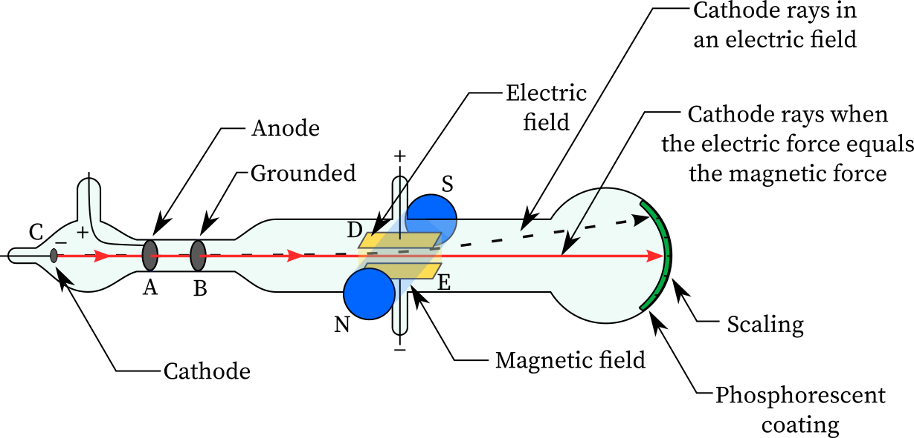

Chapter 1: Rotational Dynamics
Equation of Angular Motion
The equation of angular motion relates the angular displacement, angular velocity, and angular acceleration of
an object undergoing rotational motion. It is analogous to the equations of linear motion. The equation of
angular motion is:
θ = θ0 + ω0t + (1/2)αt2
where:
- θ is the angular displacement
- θ0 is the initial angular displacement
- ω0 is the initial angular velocity
- α is the angular acceleration
- t is the time
Relation between Linear and Angular Kinematics
The relation between linear and angular kinematics allows us to connect the motion of an object in a straight
line (linear motion) with its rotational motion. This relation is based on the concept of the radius (or moment
arm) and the angular displacement.
The relation between linear and angular kinematics is:
s = rθ
where:
- s is the linear displacement
- r is the radius (or moment arm)
- θ is the angular displacement
This relation allows us to convert between linear and angular quantities, providing a connection between the
linear motion of an object and its rotational motion.
Kinetic Energy of Rotation of a Rigid Body
The kinetic energy of rotation of a rigid body is the energy associated with its rotational motion. It depends
on the moment of inertia and the angular velocity of the body. The formula to calculate the kinetic energy of
rotation is:
K.E. = (1/2) Iω²
where:
- K.E. is the kinetic energy of rotation
- I is the moment of inertia of the rigid body
- ω is the angular velocity of the body
The moment of inertia (I) represents the distribution of mass around the axis of rotation and depends on the
body's shape and mass distribution. The angular velocity (ω) is the rate at which the body rotates around its
axis.
The kinetic energy of rotation can be thought of as the rotational equivalent of linear kinetic energy. It
represents the energy associated with the rotational motion of the rigid body.
Moment of Inertia
The moment of inertia, denoted by I, is a physical property of a rigid body that quantifies its resistance to
rotational motion. It depends on the mass distribution and the axis of rotation. The formula to calculate the
moment of inertia for a given body is:
I = ∫r² dm
where:
- I is the moment of inertia
- r is the distance from the axis of rotation to an infinitesimally small mass element dm
- dm is the mass element
The moment of inertia depends on the shape, mass distribution, and axis of rotation of the body. Different
bodies have different formulas for calculating their moment of inertia, such as for simple shapes like a point
mass, thin rod, or a solid sphere.
Radius of Gyration
The radius of gyration, denoted by k, is a property that represents the distribution of mass of a rigid body
about an axis. It is defined as the distance from the axis of rotation to a point where the entire mass of the
body can be considered concentrated, without changing the moment of inertia. The formula to calculate the radius
of gyration is:
k = √(I/m)
where:
- k is the radius of gyration
- I is the moment of inertia of the body
- m is the mass of the body
The radius of gyration provides a measure of how the mass of a body is distributed around an axis of rotation.
It allows us to simplify calculations involving moment of inertia by treating the body as a point mass located
at the radius of gyration.
Moment of Inertia of a Uniform Rod (with Derivation)
To calculate the moment of inertia of a uniform rod about an axis perpendicular to its length and passing
through one end, we can use the following derivation:
Step 1: Consider an Infinitesimally Small Mass Element
Let's consider an infinitesimally small mass element, dm, located at a distance x from the axis of rotation.
The mass of this element can be expressed as dm = (m/L) dx, where m is the total mass of the rod and L is its
length.
Step 2: Calculate the Moment of Inertia of the Mass Element
The moment of inertia of this mass element about the axis of rotation is given by dI = (dm) x².
Substituting dm = (m/L) dx and x² into the equation, we have:
dI = (m/L) x² dx.
Step 3: Integrate to Find the Total Moment of Inertia
To find the total moment of inertia (I), we integrate the expression for dI over the entire length of the rod
(0 to L):
I = ∫dI = ∫(m/L) x² dx, from x = 0 to x = L.
Step 4: Evaluate the Integral
Solving the integral, we have:
I = (m/L) ∫x² dx, from x = 0 to x = L.
I = (m/L) [x³/3] from x = 0 to x = L.
I = (m/L) [(L³/3) - (0³/3)].
I = (m/L) (L³/3).
I = (mL²/3).
Step 5: Simplify the Expression
Since the rod is uniform, m = mass of the rod and L = length of the rod, we can simplify the expression:
I = (mL²/3).
Therefore, the moment of inertia of a uniform rod about an axis perpendicular to its length and passing through
one end is given by I = mL²/3.
Torque and Angular Acceleration for a Rigid Body
Torque:
Torque is the rotational equivalent of force and is defined as the measure of the tendency of a force to rotate
an object about a specific axis. The torque acting on a rigid body is given by the formula:
T = I * α
where:
- T represents the torque
- I represents the moment of inertia of the rigid body
- α represents the angular acceleration
The torque acting on a rigid body is directly proportional to the product of the moment of inertia and the
angular acceleration. It causes the body to undergo rotational motion or change its rotational speed.
Angular Acceleration:
Angular acceleration represents the rate of change of angular velocity of a rotating object. It is defined as
the change in angular velocity divided by the change in time. The formula for angular acceleration is:
α = (Δω) / Δt
where:
- α represents the angular acceleration
- Δω represents the change in angular velocity
- Δt represents the change in time
The angular acceleration of a rigid body is determined by the change in its angular velocity over a specific
time interval. It describes how quickly the body's rotational speed is changing.
Work and Power in Rotational Motion
In rotational motion, work and power are defined in terms of torque and angular velocity. Here's how work and
power are related in rotational motion:
Work:
In rotational motion, work is done when a torque is applied to a rigid body, causing it to rotate through an
angle. The work done by a torque is given by the formula:
W = τ * θ
where:
- W represents the work done
- τ represents the torque applied
- θ represents the angle of rotation
The work done by a torque is directly proportional to the product of the torque and the angle of rotation. It
measures the energy transferred to the rotating body.
Power:
Power in rotational motion represents the rate at which work is done or the rate at which energy is
transferred. It is defined as:
P = (τ * ω)
where:
- P represents the power
- τ represents the torque applied
- ω represents the angular velocity
The power in rotational motion is given by the product of the torque applied and the angular velocity of the
rotating body. It quantifies how quickly work is being done or energy is being transferred in rotational motion.
Angular Momentum
Angular momentum is a rotational analog of linear momentum and is a fundamental concept in rotational motion.
It represents the measure of the rotational motion of an object around a given axis. The angular momentum of a
rotating object is defined as:
L = I * ω
where:
- L represents the angular momentum
- I represents the moment of inertia of the object
- ω represents the angular velocity of the object
The angular momentum of an object depends on its moment of inertia and angular velocity. It is a vector
quantity, and its direction is perpendicular to the plane of rotation.
Conservation of Angular Momentum:
The conservation of angular momentum states that the total angular momentum of a system remains constant if no
external torque acts on it. In other words, in the absence of external torques, the angular momentum of a system
is conserved.
This conservation principle can be expressed as:
L(initial) = L(final)
which means that the initial angular momentum of a system is equal to the final angular momentum of the system.
Examples of Conservation of Angular Momentum:
1. Ice Skater: When an ice skater is spinning and pulls their arms closer to their body, their moment of
inertia decreases. As a result, to conserve angular momentum, their angular velocity increases, causing them to
spin faster.
2. Diving: During a dive, divers often perform twists and somersaults in the air. By changing their body
position, they can alter their moment of inertia. To maintain angular momentum, they adjust their angular
velocity, allowing them to complete the dive with a desired number of rotations.
3. Figure Skating: Figure skaters often perform spins with their arms extended. When they bring their arms
closer to their body, their moment of inertia decreases, leading to an increase in angular velocity. This allows
them to spin faster and perform intricate moves.
4. Planetary Motion: The conservation of angular momentum plays a crucial role in the motion of planets around
the sun. As a planet moves closer to the sun in its orbit, its moment of inertia decreases, resulting in an
increase in angular velocity to conserve angular momentum.
5. Gyroscopes: Gyroscopes utilize the conservation of angular momentum to maintain stability. The spinning
rotor in a gyroscope maintains its angular momentum, providing stability against external forces.
These examples demonstrate the conservation of angular momentum and how changes in moment of inertia and
angular velocity are interconnected to maintain the overall angular momentum of a system.
Chapter 2: Periodic Motion
Equation of Simple Harmonic Motion (SHM)
Simple Harmonic Motion (SHM) is a type of periodic motion where an object oscillates back and forth around an
equilibrium position under the influence of a restoring force that is proportional to its displacement. The
equation that describes the motion of an object undergoing SHM is:
x(t) = A * cos(ωt + φ)
where:
- x(t) represents the displacement of the object from its equilibrium position at time
t
- A represents the amplitude of the motion, which is the maximum displacement from the
equilibrium position
- ω represents the angular frequency of the motion, given by ω = 2πf, where
f is the frequency of the motion
- φ represents the phase angle, which determines the initial position of the object at
t = 0
Derivation of the Equation of SHM:
The equation of SHM can be derived using the principles of Newton's second law of motion and Hooke's law. Here
are the main steps involved in the derivation:
- Newton's Second Law: Start with Newton's second law for an object undergoing
one-dimensional motion: F = ma, where F is the net force acting on the
object and a is its acceleration.
- Restoring Force: For an object undergoing SHM, the restoring force acting on it is
proportional to its displacement from the equilibrium position: F = -kx, where
k is the force constant or the spring constant and x is the displacement.
- Acceleration: Equate the restoring force and the expression for acceleration: -kx =
ma.
- Acceleration as a Second Derivative: Rewrite the equation in terms of acceleration as the
second derivative of displacement: m(d^2x/dt^2) = -kx.
- Simplification: Divide both sides of the equation by m to simplify the
expression: d^2x/dt^2 = -kx/m.
- Angular Frequency: Introduce the concept of angular frequency ω by
substituting ω^2 = k/m, where ω is given by ω = 2πf and
f is the frequency of the motion.
- Solution: Solve the differential equation d^2x/dt^2 = -ω^2x to obtain the
general solution: x(t) = A * cos(ωt + φ), where A is the amplitude and
φ is the phase angle.
This derived equation represents the motion of an object undergoing simple harmonic motion. It shows how the
displacement of the object varies sinusoidally with time, governed by the amplitude, angular frequency, and
phase angle.
Energy in Simple Harmonic Motion (SHM)
In simple harmonic motion (SHM), the energy of the system is conserved and can be divided into two components:
kinetic energy and potential energy.
Kinetic Energy (KE):
The kinetic energy of an object undergoing SHM can be expressed as:
KE = (1/2) * m * v^2
where:
- m is the mass of the object
- v is the velocity of the object
Since SHM involves oscillatory motion, the velocity of the object can be written as:
v = ω * A * sin(ωt + φ)
where:
- ω is the angular frequency
- A is the amplitude
- φ is the phase angle
Substituting the expression for velocity into the equation for kinetic energy, we get:
KE = (1/2) * m * (ω * A * sin(ωt + φ))^2
KE = (1/2) * m * ω^2 * A^2 * sin^2(ωt + φ)
Potential Energy (PE):
The potential energy of an object undergoing SHM can be expressed as:
PE = (1/2) * k * x^2
where:
- k is the force constant or the spring constant
- x is the displacement of the object from its equilibrium position
Since SHM involves oscillatory motion, the displacement of the object can be written as:
x(t) = A * cos(ωt + φ)
Substituting the expression for displacement into the equation for potential energy, we get:
PE = (1/2) * k * (A * cos(ωt + φ))^2
PE = (1/2) * k * A^2 * cos^2(ωt + φ)
Total Mechanical Energy:
The total mechanical energy in SHM is the sum of the kinetic energy and potential energy:
E = KE + PE
E = (1/2) * m * ω^2 * A^2 * sin^2(ωt + φ) + (1/2) * k * A^2 * cos^2(ωt + φ)
E = (1/2) * (m * ω^2 * A^2 * sin^2(ωt + φ) + k * A^2 * cos^2(ωt + φ))
The above expression represents the total mechanical energy in simple harmonic motion. It shows how the energy
of the system is distributed between kinetic energy and potential energy, and how it varies with time as the
object oscillates back and forth.
Oscillation of a Mass Suspended from a Coiled Spring
The oscillation of a mass suspended from a coiled spring is a classic example of simple harmonic motion (SHM).
It demonstrates the principles of SHM and how energy is transferred between kinetic energy and potential energy.
Here's how it works:
Setup:
- A mass, denoted as "m," is attached to the lower end of a coiled spring.
- The upper end of the spring is fixed to a support or a ceiling.
- When the mass is displaced from its equilibrium position, the spring experiences a restorative force that
tries to bring the mass back to its original position.
Equilibrium Position:
The equilibrium position is the position where the spring is neither compressed nor stretched. In this
position, the force exerted by the spring is zero, and the net force acting on the mass is also zero.
Displacement and Hooke's Law:
When the mass is displaced from the equilibrium position, it experiences a restoring force provided by the
spring. According to Hooke's Law, the magnitude of the restoring force is directly proportional to the
displacement from the equilibrium position.
The equation for the restoring force can be written as:
F = -kx
where:
- F is the restoring force
- k is the spring constant
- x is the displacement from the equilibrium position
Period and Frequency:
The period, denoted as "T," is the time taken for one complete oscillation. It is the reciprocal of the
frequency, denoted as "f."
The period of oscillation for a mass-spring system can be calculated using the equation:
T = 2π√(m/k)
Energy Transfer:
As the mass oscillates, energy is transferred between kinetic energy (KE) and potential energy (PE).
At the extreme points of the motion (maximum displacement), the mass has maximum potential energy and zero
kinetic energy.
At the equilibrium position (zero displacement), the mass has maximum kinetic energy and zero potential energy.
As the mass oscillates, it continues to interchange between potential and kinetic energy, but the total
mechanical energy (sum of KE and PE) remains constant throughout the motion.
Applications:
The oscillation of a mass-spring system has various practical applications, such as:
- Spring-mass systems used in mechanical clocks and watches
- Suspension systems in vehicles to provide a smooth ride
- Harmonic oscillators in musical instruments
- Seismometers to measure earthquake activity
- Testing and calibration of mechanical systems
The oscillation of a mass suspended from a coiled spring is a fundamental example of SHM and helps illustrate
the principles of energy transfer and the relationship between displacement, force, and oscillation period.
Angular Simple Harmonic Motion (SHM)
Angular Simple Harmonic Motion (SHM) refers to the oscillatory motion exhibited by an object rotating about a
fixed axis. It follows similar principles as linear SHM but involves angular quantities such as angular
displacement, angular velocity, and angular acceleration. One example of angular SHM is a simple pendulum:
Simple Pendulum
A simple pendulum consists of a mass, known as the bob, suspended from a fixed point by a string or rod. It
exhibits oscillatory motion when displaced from its equilibrium position. Here are the key characteristics of a
simple pendulum:
Equilibrium Position:
The equilibrium position of a simple pendulum is the vertical position where the bob hangs freely without any
external force acting on it. In this position, the string or rod is vertical, and the pendulum is at rest.
Displacement and Restoring Torque:
When the pendulum is displaced from its equilibrium position, it experiences a restoring torque that tries to
bring it back to the equilibrium. The restoring torque is directly proportional to the angular displacement.
The equation for the restoring torque can be written as:
τ = -kθ
where:
- τ is the restoring torque
- k is the torsional constant or rotational spring constant
- θ is the angular displacement from the equilibrium position
Period and Frequency:
The period of a simple pendulum, denoted as "T," is the time taken for one complete oscillation. It depends on
the length of the pendulum and the acceleration due to gravity (g).
The period of a simple pendulum can be calculated using the equation:
T = 2π√(L/g)
where:
- L is the length of the pendulum
- g is the acceleration due to gravity
Energy Transfer:
Similar to linear SHM, energy is transferred between different forms during the motion of a simple pendulum. At
the extreme points of the motion (maximum displacement), the pendulum has maximum potential energy and zero
kinetic energy. At the equilibrium position (zero displacement), the pendulum has maximum kinetic energy and
zero potential energy.
As the pendulum oscillates, it continues to interchange between potential and kinetic energy, but the total
mechanical energy (sum of potential and kinetic energy) remains constant throughout the motion.
Applications:
The simple pendulum has various applications, including:
- Timekeeping devices, such as grandfather clocks and pendulum clocks
- Sensors and accelerometers used in scientific instruments
- Demonstration and experimentation in physics education
The simple pendulum is a classic example of angular SHM and provides a valuable model for understanding
oscillatory motion and energy transfer in rotational systems.
Time Period of Simple Pendulum
To derive the expression for the time period of a simple pendulum, consider a mass (bob) attached to a string
or rod of length 'L'. The pendulum is displaced from its equilibrium position by an angle 'θ' and released. Here
are the steps:
Step 1: Forces Acting on the Bob
- The gravitational force (mg) acts downwards.
- The tension (T) in the string acts towards the equilibrium position.
- Resolving the gravitational force into components, we have:
- Component along the string: mg * sin(θ)
- Component perpendicular to the string: mg * cos(θ)
Step 2: Restoring Force
- The restoring force responsible for bringing the pendulum back to its equilibrium position is provided by
the component along the string (mg * sin(θ)).
- According to Hooke's Law, the restoring force is directly proportional to the displacement. We can write:
mg * sin(θ) = -k * θ
Step 3: Torque and Angular Acceleration
- The torque acting on the pendulum is given by τ = I * α, where τ is the torque, I is the moment of inertia
of the bob, and α is the angular acceleration.
- For a simple pendulum, the moment of inertia (I) is given by I = m * L^2, where 'm' is the mass of the bob.
- The torque can be expressed as τ = -k * θ * L.
Step 4: Equating Torque and Angular Acceleration
- Equating the expressions for torque, we have -m * g * L * sin(θ) = -k * θ * L.
- Dividing both sides by -m * L^2, we get (g / L) * sin(θ) = (k / m) * θ.
Step 5: Angular Acceleration and Time Period
- The term (g / L) is equal to the angular acceleration (α), and (k / m) is equal to the angular frequency
squared (ω^2).
- Thus, we have α = -ω^2 * θ.
- The angular frequency (ω) is related to the time period (T) as ω = 2π / T.
- Substituting this into the equation, we get α = -(2π / T)^2 * θ.
Step 6: Solution and Time Period
- Solving the differential equation, we obtain the solution θ(t) = A * cos(ω * t + φ), where A is the
amplitude, ω is the angular frequency, t is the time, and φ is the phase angle.
- The time period (T) is defined as the time taken for one complete oscillation, which is equal to 2π / ω.
- Substituting ω = 2π / T, we get T = 2π * sqrt(L / g).
Therefore, the expression for the time period of a simple pendulum is T = 2π * sqrt(L / g), where L is the
length of the pendulum and g is the acceleration due to gravity.
Damped Oscillation
In damped oscillation, the amplitude of the oscillating system gradually decreases over time due to the
presence of a damping force. This force opposes the motion and dissipates energy from the system. Here are some
key points about damped oscillation:
Characteristics:
- The amplitude of the oscillations decreases exponentially with time.
- The oscillating system experiences a damping force proportional to the velocity, which acts opposite to the
direction of motion.
- The presence of damping leads to a decrease in the total mechanical energy of the system over time.
Types of Damping:
- Underdamped Oscillation: In this case, the damping force is relatively small, and the system undergoes
oscillations with gradually decreasing amplitude.
- Overdamped Oscillation: Here, the damping force is large, causing the system to return to equilibrium
without any oscillations.
- Critically Damped Oscillation: The damping force is precisely balanced to minimize the time taken to return
to equilibrium without oscillations.
Forced Oscillation
In forced oscillation, an external periodic force is applied to an oscillating system, driving it to oscillate
with a frequency different from its natural frequency. Here are some key points about forced oscillation:
Resonance
- Resonance occurs when the frequency of the external force matches the natural frequency of the oscillating
system.
- At resonance, the amplitude of the oscillations is maximized, resulting in a significant increase in energy
transfer to the system.
- Resonance can lead to the amplification of vibrations and can have both beneficial and detrimental effects
depending on the situation.
Understanding damped oscillation, forced oscillation, and resonance is essential in various fields, including
engineering, physics, and music, as they play a significant role in the behavior of mechanical and vibrational
systems.
Chapter 3: Fluid Statics
Pressure in a Fluid
Pressure in a fluid refers to the force exerted by the fluid per unit area. It is an essential concept in fluid
statics and plays a crucial role in determining the behavior of fluids at rest. Here are some key points about
pressure in a fluid:
Definition:
- Pressure is defined as the ratio of the force applied perpendicular to a surface to the area over which the
force is distributed.
- The SI unit of pressure is the Pascal (Pa), which is equivalent to 1 Newton per square meter (N/m²).
Pascal's Law:
- Pascal's law states that when an external pressure is applied to a confined fluid, the pressure is
transmitted equally in all directions within the fluid.
- This principle allows hydraulic systems to transmit and amplify forces through the use of fluid pressure.
Pressure Variation in a Fluid:
- In a fluid at rest, the pressure exerted at a particular point is the same in all directions.
- The pressure in a fluid increases with depth due to the weight of the fluid above it, following the equation
P = P₀ + ρgh, where P is the pressure at depth h, P₀ is the pressure at the surface, ρ is the density of the
fluid, and g is the acceleration due to gravity.
Buoyancy
Buoyancy refers to the upward force experienced by an object immersed in a fluid, resulting from the difference
in pressure exerted on the object's surface. It is responsible for the ability of objects to float or sink in
fluids. Here are some key points about buoyancy:
Archimedes' Principle:
- Archimedes' principle states that an object immersed in a fluid experiences an upward buoyant force equal to
the weight of the fluid displaced by the object.
- If the buoyant force is greater than the object's weight, it will float. If it is less, the object will
sink.
Expression for Buoyant Force:
- The buoyant force (Fb) acting on an object is given by Fb = ρf * V * g, where ρf is the density of the
fluid, V is the volume of the displaced fluid, and g is the acceleration due to gravity.
- The buoyant force is directed opposite to the gravitational force, causing an object to feel lighter in a
fluid.
Understanding pressure in a fluid and buoyancy is crucial for various applications, including hydrodynamics,
ship design, and the behavior of objects in liquids and gases.
I apologize for the confusion earlier. Here's an integrated response that includes the derivation of the
expression for surface tension and surface energy:
Surface Tension
Surface tension is a property of liquids that arises due to the cohesive forces between molecules at the
surface of the liquid. It is responsible for phenomena such as capillary rise, droplet formation, and the shape
of liquid surfaces. Here is the derivation of the expression for surface tension:
Derivation:
Consider a liquid in equilibrium, forming a free surface. Due to the cohesive forces between molecules, there
is an inward net force acting on the liquid molecules at the surface.
To derive the expression for surface tension, let's consider a hypothetical imaginary line drawn on the liquid
surface, forming a loop or contour. We can assume this contour to be a rectangle with sides of length L and
width dx.
The net force acting on the vertical sides of the rectangle is balanced by the surface tension force, and it
can be approximated as:
Fnet = 2T dx
where T is the surface tension of the liquid.
Now, let's consider the horizontal sides of the rectangle. The pressure inside the liquid is uniform, and the
pressure at the liquid-air interface is slightly lower due to the surface tension effects. The difference in
pressure across the rectangle's width is given by:
dP = Pinside - Poutside = -2T/R dx
where R is the radius of curvature of the liquid surface.
Using the relation dP = -dF/A, where dF is the net force acting on the rectangle and A is the area of the
rectangle, we can write:
-dF/A = -2T/R dx
dF = 2T/R dx
The total force acting on the rectangle is given by dF = T(2/R) dx.
Integrating this force over the entire contour length L, we get:
F = ∫T(2/R) dx
F = 2T/R ∫dx
F = 2T/R * L
Since F is the force acting on the rectangle, we can consider it as the force required to break the liquid
surface. Hence, F is also equal to the force required to separate the liquid along the entire length L of the
contour.
Therefore, the expression for surface tension (T) can be derived as:
T = F * R / (2L)
This is the expression for surface tension, which relates the force required to break the liquid surface to the
radius of curvature of the surface and the length of the contour.
Surface Energy
Surface energy is the amount of work required to increase the surface area of a liquid by a unit amount. It is
closely related to surface tension and provides a measure of the internal energy associated with the liquid's
surface. Here is the derivation of the expression for surface energy:
Derivation:
The surface energy of a liquid can be defined as the energy required to create a new surface or interface
between two phases (such as a liquid and a gas). Let's consider a liquid droplet of radius R and surface tension
T.
The work done in increasing the surface area of the droplet by dA is given by:
dW = T dA
For a spherical droplet, the surface area is given by A = 4πR2.
dA = d(4πR2) = 8πR dR
dW = T(8πR dR)
Integrating both sides of the equation from 0 to R and denoting the total surface energy as E, we have:
E = ∫dW = ∫T(8πR dR)
E = 8πT ∫R dR
E = 8πT [R2/2]
E = 4πT R2
This is the expression for the surface energy of a liquid droplet, which relates the surface tension (T) and
the radius of the droplet (R) to the amount of work required to create the surface.
Surface tension and surface energy play crucial roles in various phenomena, including wetting, bubble
formation, and the behavior of fluids in capillary tubes. Understanding these concepts helps in explaining and
predicting the behavior of liquids at interfaces and their interactions with solid surfaces.
Angle of Contact
The angle of contact is a fundamental concept in fluid mechanics that describes the angle between the surface
of a liquid and the solid surface it comes into contact with. It plays a crucial role in determining the shape
and behavior of liquid droplets on different surfaces. Here's a discussion on the angle of contact:
Definition:
The angle of contact is defined as the angle between the tangent to the liquid surface at the point of contact
and the solid surface beneath it. It is denoted by the symbol θ.
Factors affecting the angle of contact:
The angle of contact depends on various factors, including:
- Nature of the liquid and solid: Different liquids and solids have different surface properties, which can
influence the angle of contact. For example, liquids that exhibit strong adhesive forces with the solid tend
to have a larger angle of contact, while those with weak adhesive forces have a smaller angle.
- Surface roughness: The roughness or texture of the solid surface can also affect the angle of contact. A
rough surface may lead to a greater angle of contact compared to a smooth surface.
- Presence of impurities: Impurities or contaminants on the solid surface or in the liquid can alter the angle
of contact by affecting the interaction between the liquid and solid molecules.
Significance of the angle of contact:
The angle of contact has important implications for various phenomena, such as:
- Capillary action: The angle of contact determines the height to which a liquid can rise in a capillary tube.
For liquids with a larger angle of contact, the liquid rises to a lower height, while for liquids with a
smaller angle, it can rise higher.
- Wetting and spreading: The angle of contact affects how well a liquid wets or spreads on a solid surface. A
smaller angle indicates better wetting and spreading, while a larger angle leads to poor wetting and a more
compact droplet shape.
- Droplet formation: The angle of contact influences the shape and stability of liquid droplets on surfaces.
It determines whether a droplet will form a compact spherical shape or spread out into a thin film.
Measurement of the angle of contact:
The angle of contact can be measured using various techniques, such as the sessile drop method or the captive
bubble method, where the shape of the liquid droplet or bubble is analyzed to determine the angle.
Understanding the angle of contact is essential for studying wetting phenomena, adhesion, surface tension, and
the behavior of fluids on solid surfaces. It provides insights into the interaction between liquids and solids
and finds applications in numerous fields, including materials science, chemistry, and engineering.
Capillarity
Capillarity is a phenomenon observed in fluids, particularly in narrow tubes or capillary tubes, where the
liquid rises or falls against the force of gravity. It is a result of the balance between cohesive forces within
the liquid and adhesive forces between the liquid and the solid surface of the capillary tube. Here's an
explanation of capillarity and its applications:
Definition:
Capillarity refers to the ability of a liquid to flow or be drawn into a narrow tube or capillary against the
force of gravity.
Expression for Capillary Rise or Fall:
The height (h) to which a liquid will rise or fall in a capillary tube can be determined using the following
expression:
h = (2T cosθ) / (ρgR)
Where:
- h is the height of capillary rise or fall
- T is the surface tension of the liquid
- θ is the contact angle between the liquid and the capillary tube
- ρ is the density of the liquid
- g is the acceleration due to gravity
- R is the radius of the capillary tube
Applications of Capillarity:
Capillarity has several practical applications in various fields:
- Liquid absorption: Capillary action is responsible for the absorption of liquids in porous materials like
sponges, paper towels, and wicks. It allows the liquid to move against gravity and spread throughout the
material.
- Plant water uptake: Capillarity plays a vital role in the movement of water through plants. It enables water
to be drawn from the roots upwards to the leaves against the force of gravity.
- Capillary tubes: Capillary tubes are used in numerous scientific and medical applications, such as measuring
small volumes of liquids, controlling fluid flow in microfluidics, and in medical tests like blood glucose
monitoring.
- Ink pens: The capillary action in ink pens allows the ink to flow smoothly onto the paper. The narrow tube
or reservoir in the pen uses capillarity to control the ink flow and prevent leakage.
- Oil lamps and candles: Capillary action is utilized in oil lamps and candles, where a wick draws up the oil
or melted wax to the flame, providing a steady and controlled fuel source.
Capillarity is a fascinating phenomenon that demonstrates the intricate interplay between intermolecular forces
and surface properties of liquids. Its applications extend to various fields, making it an essential concept in
fluid mechanics and everyday life.
Newton's Formula for Viscosity
Viscosity is a measure of a fluid's resistance to flow. Sir Isaac Newton formulated the relationship between
the shear stress and the velocity gradient in a fluid, which is known as Newton's formula for viscosity. It can
be expressed as follows:
τ = η(dv/dy)
Where:
- τ is the shear stress
- η is the coefficient of viscosity
- (dv/dy) is the velocity gradient or rate of change of velocity with respect to the distance
Coefficient of Viscosity
The coefficient of viscosity (η) represents the internal friction or resistance to flow within a fluid. It is a
measure of how "thick" or "sticky" a fluid is. The coefficient of viscosity can be determined using various
experimental methods.
Derivation of Newton's Formula for Viscosity
To derive Newton's formula for viscosity, consider a fluid confined between two parallel plates. The bottom
plate is fixed, and the top plate is moving with a constant velocity (v).
Assuming that the fluid layer is sufficiently thin, the velocity gradient (dv/dy) can be assumed to be constant
across the fluid layer.
Applying a force (F) parallel to the plates, the fluid experiences a shear stress (τ) due to the applied force.
According to Newton's formula for viscosity, the shear stress is directly proportional to the velocity
gradient:
τ = η(dv/dy)
This equation states that the shear stress is equal to the product of the coefficient of viscosity and the
velocity gradient.
This relationship signifies that the greater the velocity gradient (steep change in velocity with respect to
distance), the greater the shear stress, indicating higher fluid viscosity.
By measuring the shear stress and the velocity gradient in various experimental setups, the coefficient of
viscosity (η) can be determined for different fluids.
The coefficient of viscosity provides insights into the flow behavior of fluids, distinguishing between viscous
or thick fluids (high viscosity) and less viscous or thin fluids (low viscosity).
Poiseuille's Formula
Poiseuille's formula, also known as Hagen-Poiseuille equation, describes the flow of viscous fluids through a
cylindrical pipe. It provides a mathematical expression for the flow rate (Q) in terms of various parameters.
The formula is given as:
Q = (π * ΔP * r^4) / (8ηL)
Where:
- Q is the flow rate of the fluid
- ΔP is the pressure difference across the ends of the pipe
- r is the radius of the pipe
- η is the coefficient of viscosity of the fluid
- L is the length of the pipe
Application of Poiseuille's Formula
Poiseuille's formula finds application in various fields, particularly in the study of fluid dynamics and
understanding fluid flow in different systems. Some of the notable applications include:
1. Blood Flow in Capillaries and Blood Vessels:
Poiseuille's formula helps in studying the flow of blood through capillaries and blood vessels. It aids in
determining factors that affect blood flow, such as changes in vessel radius, viscosity of blood, and pressure
differentials.
2. Flow in Pipes and Tubes:
The formula is used to analyze fluid flow in pipes and tubes, including industrial pipelines, plumbing systems,
and hydraulic systems. It helps in designing and optimizing pipe networks by considering factors such as pipe
diameter, length, pressure differences, and fluid properties.
3. Study of Respiratory System:
Poiseuille's formula is utilized to investigate airflow in the respiratory system, including the lungs and
airways. It provides insights into the resistance encountered by airflow due to the diameter and length of the
air passages.
4. Fluid Flow in Microchannels and Nanofluidics:
With the advancement of microfluidics and nanofluidics, Poiseuille's formula plays a crucial role in
understanding fluid behavior at small scales. It assists in designing and analyzing devices such as
lab-on-a-chip systems, microfluidic channels, and nanofluidic devices.
5. Flow through Filters and Porous Media:
Poiseuille's formula helps in studying fluid flow through filters, membranes, and porous media. It aids in
determining the flow rates and pressure gradients across these systems, which is vital for applications like
water filtration, oil extraction, and groundwater remediation.
These are just a few examples of the broad range of applications where Poiseuille's formula is utilized to
understand and analyze fluid flow phenomena in various systems.
Stokes's Law
Stokes's law describes the drag force experienced by small spherical particles moving through a viscous fluid.
It provides a mathematical expression for the drag force (F) acting on a spherical particle as it moves through
the fluid at a low velocity. The formula is given as:
F = 6πηrv
Where:
- F is the drag force acting on the particle
- η is the coefficient of viscosity of the fluid
- r is the radius of the particle
- v is the velocity of the particle
Application of Stokes's Law
Stokes's law finds application in various fields, particularly in the study of fluid dynamics and particle
motion in fluids. Some of the notable applications include:
1. Sedimentation and Particle Settling:
Stokes's law is used to understand the settling behavior of particles in a fluid. It helps in analyzing
sedimentation processes, such as the settling of suspended particles in water, the separation of particles based
on their size, and the determination of particle concentration in suspensions.
2. Measurement of Viscosity:
The law is utilized in viscometry to measure the viscosity of fluids. By measuring the terminal velocity of a
small spherical particle falling through the fluid, the viscosity of the fluid can be determined using Stokes's
law and appropriate calculations.
3. Particle Motion in Fluids:
Stokes's law is applied to understand the motion of small particles in fluids, such as the behavior of aerosol
particles, droplets in emulsions, and bubbles in liquids. It helps in predicting the terminal velocity, settling
behavior, and drag forces acting on these particles.
4. Filtration and Separation Processes:
The law is used in the design and optimization of filtration systems, such as air filters and liquid filtration
systems. By considering the particle size, fluid properties, and filtration medium, Stokes's law helps in
determining the efficiency and performance of these systems.
5. Particle Dynamics in Biological Systems:
Stokes's law is applied in the study of particle motion and dynamics in biological systems, such as the
movement of cells, microorganisms, and particles in biological fluids. It aids in understanding phenomena like
cell sedimentation, the behavior of particles in blood flow, and the diffusion of substances in biological
environments.
These are just a few examples of the wide range of applications where Stokes's law is utilized to understand
the behavior of small particles in viscous fluids and to analyze various processes involving particle motion and
fluid dynamics.
Equation of Continuity
The equation of continuity is a fundamental principle in fluid dynamics that states that the mass flow rate of
an incompressible fluid remains constant along a streamline. It expresses the relationship between the fluid's
velocity, cross-sectional area, and density. The equation of continuity is given as:
A1v1 = A2v2
Where:
- A1 and A2 are the cross-sectional areas of the fluid at two different points along the
streamline
- v1 and v2 are the velocities of the fluid at the respective points
Application of the Equation of Continuity
The equation of continuity finds numerous applications in the field of fluid dynamics and plays a crucial role
in understanding and analyzing fluid flow phenomena. Here are some practical applications of the equation of
continuity:
1. Fluid Flow in Pipes and Channels:
The equation of continuity is used to study the flow of fluids in pipes, channels, and ducts. It helps in
determining the relationship between the velocity and cross-sectional area of the fluid at different points
along the flow path. This is essential in designing efficient piping systems and optimizing flow rates.
2. Venturi Effect:
The Venturi effect is based on the principle of the equation of continuity. It describes the reduction in fluid
pressure that occurs when the fluid flows through a constricted section of a pipe or a Venturi tube. The
equation of continuity is used to analyze the change in fluid velocity and pressure in such systems.
3. Aerodynamics:
In aerodynamics, the equation of continuity is employed to study the flow of air around objects like wings,
airfoils, and aircraft. It helps in determining the relationship between the air velocity and cross-sectional
area, enabling the calculation of lift and drag forces experienced by the objects.
4. Hydraulics:
In hydraulic systems, the equation of continuity is used to analyze the flow of fluids in pipes, valves, and
pumps. It aids in ensuring a consistent flow rate and pressure throughout the system, allowing for the efficient
operation of hydraulic machinery.
5. Blood Flow in Circulatory System:
The equation of continuity is applied to study the flow of blood in blood vessels and arteries. It helps in
understanding the relationship between the blood velocity and the cross-sectional area of blood vessels, which
is crucial in assessing blood flow rates and diagnosing circulatory system disorders.
These are just a few examples of the diverse applications of the equation of continuity in different fields.
The principle behind this equation is fundamental to fluid dynamics and provides valuable insights into the
behavior of fluids in various contexts.
Bernoulli's Equation
Bernoulli's equation is a fundamental principle in fluid dynamics that relates the pressure, velocity, and
elevation of a fluid in steady, incompressible flow. It is based on the conservation of energy principle and is
expressed mathematically as:
P + ½ρv² + ρgh = constant
Where:
- P is the pressure of the fluid
- ρ is the density of the fluid
- v is the velocity of the fluid
- g is the acceleration due to gravity
- h is the height or elevation of the fluid
Applications of Bernoulli's Equation
Bernoulli's equation has various practical applications in fluid dynamics and is used to understand and analyze
fluid flow phenomena. Here are some important applications of Bernoulli's equation:
1. Aerodynamics:
Bernoulli's equation is extensively used in aerodynamics to explain the lift generated by wings and airfoils.
It helps in understanding how the pressure difference between the upper and lower surfaces of a wing contributes
to the generation of lift, allowing aircraft to fly.
2. Pipe Flow:
In fluid mechanics, Bernoulli's equation is applied to study the flow of fluids in pipes. It helps in analyzing
the pressure variations, velocity changes, and energy losses that occur in pipe systems, such as water supply
pipes, oil pipelines, and irrigation systems.
3. Venturi Effect:
The Venturi effect is a direct consequence of Bernoulli's equation. It describes the decrease in fluid pressure
that occurs when the fluid flows through a constriction in a pipe or a Venturi tube. This effect is utilized in
various applications, including carburetors, atomizers, and air flow measurement devices.
4. Blood Flow in Blood Vessels:
Bernoulli's equation is used to understand blood flow in blood vessels and to assess conditions such as
stenosis or blockages. It helps in evaluating the pressure changes and velocity variations in the circulatory
system, aiding in the diagnosis and treatment of cardiovascular diseases.
5. Hydraulic Systems:
Bernoulli's equation is employed in hydraulic systems, such as water turbines, pumps, and hydraulic lifts. It
enables engineers to calculate the pressure, velocity, and flow rates within the system, ensuring efficient
energy transfer and performance.
These are just a few examples of the numerous applications of Bernoulli's equation in various fields. The
equation provides valuable insights into fluid behavior and has practical implications in designing and
analyzing fluid flow systems.
Chapter 4: First Law of Thermodynamics
Thermodynamic Systems
In thermodynamics, a system refers to a specific region or portion of space that is under study or analysis. It
can be a physical object, substance, or a defined volume. The behavior and properties of a system are studied by
observing the exchange of energy, matter, and other variables between the system and its surroundings. Here are
the three main types of thermodynamic systems:
1. Open System:
An open system allows the transfer of both energy and matter across its boundaries with the surroundings. This
means that substances can enter or leave the system, and energy can be exchanged in the form of heat or work.
Examples of open systems include a pot of boiling water with vapor escaping, or a living organism exchanging
heat and nutrients with its environment.
2. Closed System:
A closed system permits the transfer of energy across its boundaries but does not allow the exchange of matter.
The system is isolated from its surroundings in terms of mass, but energy can still enter or leave in the form
of heat or work. A sealed container with a fixed amount of gas undergoing temperature changes is an example of a
closed system.
3. Isolated System:
An isolated system is completely sealed and does not interact with its surroundings in terms of energy or
matter exchange. It is self-contained and isolated from any external influences. The total energy and mass
within an isolated system remain constant. The universe is often considered as an isolated system since it is
regarded as a closed and self-contained entity.
Thermodynamic systems serve as a basis for studying and analyzing various thermodynamic processes, including
heat transfer, work interactions, and changes in energy and entropy. The choice of system type depends on the
specific application and the nature of the phenomena being investigated.
Work Done during Volume Change (Formula Derivation)
In thermodynamics, work is a form of energy transfer that occurs during a change in the volume of a system. The
work done during a volume change can be derived using the following steps:
Step 1: Consider a System
Start by considering a thermodynamic system, such as a gas enclosed in a cylinder with a movable piston. Assume
that the gas undergoes a volume change from an initial volume V1 to a final volume V2.
Step 2: Define Pressure
Let P be the pressure exerted by the gas on the movable piston. Since pressure is defined as the force per unit
area, the force F exerted by the gas on the piston can be expressed as F = P * A, where A is the cross-sectional
area of the piston.
Step 3: Calculate Differential Work
Now, consider an infinitesimal change in volume dV. As the gas expands or contracts, the piston moves, causing
a displacement dx. The differential work done dW can be calculated as:
dW = F * dx
Substituting the expression for force F, we have:
dW = (P * A) * dx
Step 4: Express dx in terms of dV
Since dx represents the displacement of the piston, it can be expressed in terms of the change in volume dV.
The cross-sectional area A multiplied by the change in displacement dx gives the change in volume dV:
dV = A * dx
From this equation, we can express dx as:
dx = dV / A
Step 5: Substitute dx in the Work Equation
Substituting the expression for dx in the differential work equation, we have:
dW = (P * A) * (dV / A)
dW = P * dV
Step 6: Integrate for Total Work
To find the total work done during the volume change from V1 to V2, integrate the
differential work equation:
W = ∫(P * dV)
W = ∫P dV
Step 7: Apply Appropriate Equation of State
Depending on the gas and its behavior, an appropriate equation of state (such as the ideal gas law or a more
specialized equation) can be used to express the pressure P in terms of the volume V. This allows the
integration to be carried out.
The resulting expression for the work done during the volume change depends on the specific conditions and
equation of state applied.
This derivation provides a general framework for calculating the work done during a volume change in a
thermodynamic system. The actual expression for work may vary depending on the specific system and the equation
of state used to relate pressure and volume.
Heat:
- Heat is a form of energy transfer between two objects or systems due to a temperature difference.
- It occurs spontaneously from an object with higher temperature to an object with lower temperature until
thermal equilibrium is reached.
- Heat transfer can happen through conduction, convection, or radiation.
- Heat is represented by the symbol Q and is measured in joules (J) or calories (cal).
- Heat is not a property of a system but rather a form of energy exchange.
Work:
- Work is also a form of energy transfer, but it involves the application of a force over a distance.
- Work can change the energy state of a system by adding or removing mechanical energy.
- Work can be positive (energy added to the system) or negative (energy removed from the system).
- Work is represented by the symbol W and is measured in joules (J).
- Work is a path-dependent process and depends on the specific process or pathway followed.
Difference between Heat and Work:
- Heat and work are both forms of energy transfer, but they differ in their mechanisms and characteristics:
- Heat is a transfer of energy due to temperature difference, while work is a transfer of energy due to the
application of force over a distance.
- Heat transfer is non-mechanical and can occur even without any physical contact between the objects, while
work transfer involves mechanical forces acting on a system.
- Heat is a spontaneous process driven by a temperature gradient, while work is a result of external forces
applied deliberately.
- Heat transfer is independent of the path followed, while work transfer depends on the specific process or
pathway.
First Law of Thermodynamics:
The first law of thermodynamics states that the change in internal energy (ΔU) of a system is equal to the heat
transfer (Q) into the system minus the work done (W) by the system:
ΔU = Q - W
This equation represents the conservation of energy principle in thermodynamics and relates the changes in
internal energy, heat, and work for a given system.
Internal Energy
Internal energy refers to the total energy possessed by a thermodynamic system. It includes the kinetic energy
and potential energy of the molecules or particles within the system. Here are some key points about internal
energy:
Definition:
- Internal energy is the sum of the kinetic and potential energies of the particles within a system.
- It is a state function, meaning it depends only on the current state of the system and not on the path taken
to reach that state.
Forms of Internal Energy:
- Internal energy can exist in various forms, such as the translational, rotational, and vibrational energies
of molecules, as well as the potential energy due to intermolecular forces.
- It is influenced by factors such as temperature, pressure, and composition of the system.
Change in Internal Energy:
- The change in internal energy (ΔU) of a system is determined by the heat transfer (Q) into or out of the
system and the work done (W) by or on the system.
- According to the first law of thermodynamics, the change in internal energy is given by the equation: ΔU = Q
- W.
- If heat is added to the system or work is done on the system, the internal energy increases (ΔU > 0).
Conversely, if heat is transferred out of the system or work is done by the system, the internal energy
decreases (ΔU < 0).
Relationship with Temperature:
- Changes in internal energy are often associated with changes in temperature. When a system absorbs heat, its
internal energy increases, leading to an increase in temperature. Conversely, when a system loses heat, its
internal energy decreases, resulting in a decrease in temperature.
Internal energy is a fundamental concept in thermodynamics, and understanding its behavior is crucial for
analyzing and predicting the behavior of thermodynamic systems.
First Law of Thermodynamics
The first law of thermodynamics, also known as the law of energy conservation, states that energy cannot be
created or destroyed in an isolated system. It can only be transferred or converted from one form to another.
Here are some key points about the first law of thermodynamics:
Energy Conservation:
- The total energy of an isolated system remains constant over time.
- The energy within the system can change its form, such as from heat to work or vice versa, but the total
amount of energy remains constant.
Internal Energy:
- The first law of thermodynamics is based on the concept of internal energy, which refers to the total energy
possessed by a system.
- Internal energy includes various forms of energy, such as kinetic energy, potential energy, and chemical
energy, within the system.
Heat and Work:
- The first law relates heat transfer (Q) and work done (W) to changes in the internal energy (ΔU) of a
system.
- The equation that represents the first law of thermodynamics is: ΔU = Q - W.
- If heat is added to the system or work is done on the system, the internal energy increases. Conversely, if
heat is transferred out of the system or work is done by the system, the internal energy decreases.
Conservation Principle:
- The first law of thermodynamics is a manifestation of the conservation of energy principle, which is a
fundamental concept in physics.
- It states that the total energy of a closed system remains constant, and energy can be neither created nor
destroyed.
- This principle applies to all types of energy, including thermal energy, mechanical energy, electrical
energy, and chemical energy.
The first law of thermodynamics provides a fundamental framework for understanding and analyzing energy
transformations and exchanges in various thermodynamic processes.
Isothermal Process
An isothermal process is a thermodynamic process in which the temperature of a system remains constant
throughout the process. Here are some key points about isothermal processes:
Characteristics:
- During an isothermal process, the system is in thermal equilibrium with its surroundings, and heat is
continuously exchanged to maintain the constant temperature.
- The temperature of the system is held constant by placing it in contact with a heat reservoir, such as a
constant-temperature bath.
Work Done:
- The work done during an isothermal process can be calculated using the following equation: W = nRT
ln(V2/V1), where W is the work done, n is the number of moles of gas, R is the ideal gas constant, T is the
temperature, V1 is the initial volume, and V2 is the final volume.
- The negative sign in the equation indicates that work is done on the system during expansion (V2 > V1) and
work is done by the system during compression (V2 < V1).
Isochoric Process (Constant Volume)
An isochoric process is a thermodynamic process in which the volume of a system remains constant. Here are some
key points about isochoric processes:
Characteristics:
- During an isochoric process, no work is done by or on the system because there is no change in volume.
- The energy exchange occurs only in the form of heat.
Work Done:
- As the volume remains constant, the work done during an isochoric process is zero (W = 0).
- The internal energy change (ΔU) is equal to the heat added to the system (Q).
Isobaric Process (Constant Pressure)
An isobaric process is a thermodynamic process in which the pressure of a system remains constant. Here are
some key points about isobaric processes:
Characteristics:
- During an isobaric process, the system is in contact with a constant-pressure source or is surrounded by a
medium with a constant pressure.
- The volume of the system can change, and work is done in the process.
Work Done:
- The work done during an isobaric process can be calculated using the following equation: W = P(V2 - V1),
where W is the work done, P is the constant pressure, V1 is the initial volume, and V2 is the final volume.
- The work done is positive when the system expands (V2 > V1) and negative when the system is compressed (V2 <
V1).
Adiabatic Process (No Heat Transfer)
An adiabatic process is a thermodynamic process in which there is no heat exchange between the system and its
surroundings. Here are some key points about adiabatic processes:
Characteristics:
- During an adiabatic process, the system is insulated, preventing any heat transfer.
- The internal energy of the system changes due to work done or changes in the system's thermodynamic
properties.
Work Done:
- The work done during an adiabatic process can be calculated using the following equation: W = (P2V2 -
P1V1)/(γ - 1), where W is the work done, P1 and P2 are the initial and final pressures, V1 and V2 are the
initial and final volumes, and γ is the heat capacity ratio or adiabatic index.
- The work done depends on the specific heat capacities and the change in pressure and volume.
These different thermodynamic processes have specific characteristics and relationships between work done, heat
transfer, and changes in thermodynamic properties, providing insights into the behavior of systems under
different conditions.
Heat Capacities of an Ideal Gas
The heat capacities of an ideal gas represent the amount of heat energy required to change the temperature of
the gas at constant pressure (Cp) or constant volume (Cv). Here are the definitions and relationships between
these heat capacities:
Specific Heat Capacity at Constant Pressure (Cp)
The specific heat capacity at constant pressure, Cp, is defined as the amount of heat energy required to raise
the temperature of a unit mass of the gas by one degree Celsius (or one Kelvin) while keeping the pressure
constant.
Specific Heat Capacity at Constant Volume (Cv)
The specific heat capacity at constant volume, Cv, is defined as the amount of heat energy required to raise
the temperature of a unit mass of the gas by one degree Celsius (or one Kelvin) while keeping the volume
constant.
Relation between Cp and Cv
For an ideal gas, the relationship between the specific heat capacities at constant pressure and constant
volume is given by:
Cp - Cv = R
where R is the specific gas constant.
This relationship is a consequence of the First Law of Thermodynamics and is applicable to ideal gases under
various conditions.
Mayer's Formula Derivation
Mayer's formula relates the specific heat capacity at constant pressure (Cp) to the specific heat capacity at
constant volume (Cv) for an ideal gas. The derivation of Mayer's formula is as follows:
Let's consider a gas undergoing a process from state A to state B, with an increase in temperature (ΔT) at
constant pressure (P).
The change in internal energy (ΔU) of the gas can be expressed as:
ΔU = Q - W
where Q is the heat added to the gas and W is the work done by the gas.
For a process at constant pressure, the work done by the gas can be written as:
W = PΔV
where ΔV is the change in volume of the gas.
Using the ideal gas equation, PV = nRT, where n is the number of moles of the gas and R is the specific gas
constant, we can rewrite the work expression as:
W = nRTΔV / V
Since the process is at constant pressure, we can also write:
Q = CpΔT
where Cp is the specific heat capacity at constant pressure.
Substituting the expressions for Q and W into the equation ΔU = Q - W, we have:
ΔU = CpΔT - nRTΔV / V
Since ΔU = CvΔT, where Cv is the specific heat capacity at constant volume, we can rewrite the equation as:
CvΔT = CpΔT - nRTΔV / V
Dividing both sides of the equation by nΔT, we get:
Cv = Cp - RΔV / V
Finally, using the ideal gas equation PV = nRT, we can express the change in volume as ΔV = V - Vo, where Vo is
the initial volume of the gas. Substituting this expression into the equation, we obtain:
Cv = Cp - R(V - Vo) / V
Simplifying further, we have:
Cv = Cp - R + RVo / V
Mayer's formula is derived as:
Cp - Cv = R
This derivation shows the relationship between the specific heat capacities at constant pressure and constant
volume for an ideal gas, which is known as Mayer's formula.
Isothermal Process for an Ideal Gas
In an isothermal process, the temperature of an ideal gas remains constant throughout the process. This means
that the gas is in thermal equilibrium with its surroundings, and any heat added or removed from the gas is
balanced by an equal amount of work done by or on the gas.
During an isothermal expansion or compression of an ideal gas, the gas follows the ideal gas law:
PV = nRT
where P is the pressure, V is the volume, n is the number of moles of the gas, R is the specific gas constant,
and T is the temperature.
For an isothermal process, the equation can be rewritten as:
P1V1 = P2V2
where P1 and V1 are the initial pressure and volume, and P2 and V2 are the final pressure and volume.
The work done (W) during an isothermal process can be calculated using the equation:
W = nRTln(V2/V1)
This equation indicates that work is done by or on the gas due to the change in volume, and the magnitude of
the work depends on the logarithmic ratio of the initial and final volumes.
Adiabatic Process for an Ideal Gas
In an adiabatic process, no heat is exchanged between the gas and its surroundings. This means that the change
in internal energy of the gas is solely due to work done on or by the gas.
For an adiabatic process, the ideal gas law can be expressed as:
PV^γ = constant
where γ is the ratio of specific heats (Cp/Cv) for the gas.
During an adiabatic expansion or compression of an ideal gas, the equation can be rewritten as:
P1V1^γ = P2V2^γ
where P1 and V1 are the initial pressure and volume, and P2 and V2 are the final pressure and volume.
The work done (W) during an adiabatic process can be calculated using the equation:
W = (P1V1 - P2V2) / (γ - 1)
This equation shows that work is done by or on the gas due to the change in pressure and volume, and the
magnitude of the work depends on the difference between the initial and final pressures and volumes, as well as
the specific heat ratio γ.
An adiabatic process is characterized by a steeper pressure-volume curve compared to an isothermal process,
indicating a more rapid change in pressure and volume.
Chapter 5: Second Law of Thermodynamics
Thermodynamic Systems:
In thermodynamics, there are three types of thermodynamic systems:
- Open System: An open system can exchange both matter and energy with its surroundings. It
allows the transfer of mass and energy across its boundaries.
- Closed System: A closed system can exchange energy but not matter with its surroundings.
The boundaries of a closed system are fixed, and it can exchange heat and work with its surroundings.
- Isolated System: An isolated system does not exchange either matter or energy with its
surroundings. It is completely isolated from its environment, and the total energy and mass within it remain
constant.
Direction of Thermodynamic Processes:
Thermodynamic processes can be classified based on the direction of energy transfer and can be categorized into
four types:
- Reversible Process: A reversible process is an idealized process that occurs
infinitesimally slowly, allowing the system to remain in thermal and mechanical equilibrium with its
surroundings at all times. It can be reversed without leaving any trace.
- Irreversible Process: An irreversible process occurs spontaneously and cannot be reversed
without leaving some effect on the system or its surroundings. Irreversible processes involve energy
dissipation and lead to an increase in entropy.
- Quasi-Static Process: A quasi-static process is a very slow and nearly reversible process.
It involves a series of equilibrium states, and the system remains in equilibrium throughout the process.
- Spontaneous Process: A spontaneous process occurs on its own without any external
intervention. It is driven by the natural tendencies of the system. Spontaneous processes can be reversible or
irreversible, depending on the conditions.
The direction of thermodynamic processes is determined by the laws of thermodynamics and the properties of the
system and its surroundings. The second law of thermodynamics, specifically the concept of entropy, provides a
criterion for the direction of spontaneous processes. Spontaneous processes tend to move towards increasing
entropy or disorder in the universe.
Note that the direction of a process may vary depending on the specific conditions and constraints of the
system.
Second Law of Thermodynamics
The second law of thermodynamics is a fundamental principle that describes the behavior of energy and heat in
physical systems. It can be understood from different perspectives, as explained below:
Clausius Statement:
The Clausius statement, proposed by Rudolf Clausius, states that heat cannot spontaneously flow from a colder
body to a hotter body. It establishes the direction of heat transfer, which occurs naturally only from a higher
temperature region to a lower temperature region.
Kelvin-Planck Statement:
The Kelvin-Planck statement, named after Lord Kelvin and Sadi Carnot, asserts that it is impossible to
construct a device that operates in a cycle and extracts heat from a single reservoir to produce an equivalent
amount of work without any other effect. This statement highlights the impossibility of creating a perpetual
motion machine of the second kind.
Entropy Increase:
From an entropy perspective, the second law of thermodynamics states that the entropy of an isolated system
tends to increase over time. Entropy is a measure of the disorder or randomness within a system. This principle
indicates that natural processes tend to move towards states of greater entropy.
Statistical Mechanics:
In the framework of statistical mechanics, the second law of thermodynamics is derived from the behavior of
large ensembles of particles. It states that in a closed system, the probability of finding the system in a more
probable macrostate (higher entropy) is much larger than finding it in a less probable macrostate (lower
entropy).
These different perspectives provide complementary insights into the second law of thermodynamics. They
collectively emphasize that natural processes have a preferred direction, with heat flowing from higher to lower
temperature regions and systems tending towards states of greater entropy. The second law has profound
implications in understanding energy transformations, the limitations of heat engines, and the behavior of
physical systems in diverse scientific and engineering applications.
Heat Engine
A heat engine is a device that converts thermal energy into mechanical work, utilizing the principles of
thermodynamics. It operates in a cyclic manner, extracting heat from a high-temperature source, converting a
portion of it into useful work, and rejecting the remaining heat to a low-temperature sink. Heat engines play a
crucial role in various applications, including power generation, transportation, and industrial processes.
Basic Components:
A typical heat engine consists of the following components:
- High-Temperature Source: This is the heat reservoir or source with a high temperature, such
as a combustion chamber, reactor, or concentrated solar energy.
- Working Substance: The working substance, often an ideal gas or a fluid, undergoes a
thermodynamic cycle within the engine. It experiences changes in pressure, temperature, and volume.
- Expansion: The working substance expands, typically by heat transfer, which causes an
increase in its volume and a decrease in pressure.
- Conversion of Heat to Work: The expanding working substance performs work by pushing
against a piston or rotating a turbine. This work output is the desired output of the heat engine.
- Compression: After performing work, the working substance is compressed, usually by
removing heat from it. This compression phase prepares it for the next cycle.
- Heat Rejection: The heat engine rejects the excess heat, which could not be converted into
work, to a low-temperature sink, such as the atmosphere or a cooling system.
Efficiency:
The efficiency of a heat engine is defined as the ratio of useful work output to the heat input. It is given by
the equation:
Efficiency = (Work Output) / (Heat Input)
Carnot Efficiency:
The Carnot efficiency represents the maximum possible efficiency that a heat engine can achieve when operating
between two temperature reservoirs. It is given by the equation:
Carnot Efficiency = 1 - (Temperature of Low-Temperature Reservoir / Temperature of High-Temperature Reservoir)
Applications:
Heat engines are widely used in various applications, including:
- Internal combustion engines in automobiles
- Gas turbines in power plants
- Steam engines in locomotives
- Jet engines in aircraft
- Refrigeration and air conditioning systems
These applications rely on the conversion of heat energy into mechanical work to power vehicles, generate
electricity, or provide cooling. Heat engines have significantly contributed to the advancement of modern
industrial and technological systems.
Internal Combustion Engines: Otto Cycle, Diesel Cycle, Carnot Cycle
Otto Cycle:
The Otto cycle is a theoretical thermodynamic cycle that describes the operation of a spark-ignition internal
combustion engine, commonly known as a gasoline engine. It consists of four processes: intake, compression,
combustion, and exhaust.
- Intake: The fuel-air mixture is drawn into the cylinder during the intake stroke.
- Compression: The mixture is compressed by the upward movement of the piston during the
compression stroke.
- Combustion: The compressed mixture is ignited by a spark plug, leading to a rapid
combustion process that increases the pressure and temperature in the cylinder.
- Exhaust: The burned gases are expelled from the cylinder during the exhaust stroke.
The Otto cycle is commonly used in gasoline-powered cars and small engines. It is characterized by a
constant-volume heat addition process (combustion) and a constant-volume heat rejection process (exhaust).
Diesel Cycle:
The Diesel cycle is a theoretical thermodynamic cycle that represents the operation of a diesel engine. It is
similar to the Otto cycle but differs in the combustion process. The Diesel cycle consists of four processes:
intake, compression, combustion, and exhaust.
- Intake: Air is drawn into the cylinder during the intake stroke.
- Compression: The air is compressed by the upward movement of the piston during the
compression stroke. The high compression ratio in a diesel engine leads to higher temperatures.
- Combustion: Fuel is injected into the cylinder near the end of the compression stroke. The
fuel ignites due to the high temperature of the compressed air, resulting in combustion and an increase in
pressure.
- Exhaust: The burned gases are expelled from the cylinder during the exhaust stroke.
The Diesel cycle is commonly used in diesel engines, which are known for their efficiency and power. It is
characterized by a constant-pressure heat addition process (combustion) and a constant-volume heat rejection
process (exhaust).
Carnot Cycle:
The Carnot cycle is an idealized thermodynamic cycle that represents the maximum possible efficiency for a heat
engine operating between two temperature reservoirs. It serves as a theoretical benchmark for the performance of
heat engines.
- Isothermal Expansion: Heat is absorbed from the high-temperature reservoir, and the working
substance expands isothermally, producing work.
- Adiabatic Expansion: The working substance continues to expand adiabatically, resulting in
a decrease in temperature and pressure.
- Isothermal Compression: Heat is rejected to the low-temperature reservoir, and the working
substance is compressed isothermally, requiring work input.
- Adiabatic Compression: The working substance continues to compress adiabatically, leading
to an increase in temperature and pressure.
The Carnot cycle is a reversible cycle and operates with maximum efficiency. However, achieving the Carnot
efficiency in real engines is not possible due to various losses and limitations.
These cycles play a significant role in the operation and design of internal combustion engines, providing
insights into their thermodynamic performance and efficiency.
Refrigerator
A refrigerator is a device that uses the principles of thermodynamics to remove heat from a low-temperature
space and transfer it to a high-temperature space, resulting in the cooling of the low-temperature space. It
operates on the refrigeration cycle, which involves the following components:
- Compressor: The compressor is responsible for compressing the refrigerant gas, increasing
its temperature and pressure.
- Condenser: The high-pressure, high-temperature refrigerant gas from the compressor flows
into the condenser, where it releases heat to the surroundings, causing it to condense into a high-pressure
liquid.
- Expansion Valve: The high-pressure liquid refrigerant then passes through the expansion
valve, where its pressure and temperature are reduced, allowing it to partially vaporize.
- Evaporator: The partially vaporized refrigerant enters the evaporator, located in the
low-temperature space. Here, it absorbs heat from the surroundings, evaporates completely into a low-pressure
gas, and cools down the low-temperature space.
This refrigeration cycle is repeated continuously to maintain the desired low temperature inside the
refrigerator. The refrigerator requires an external power source, typically electricity, to drive the compressor
and facilitate the refrigeration process.
By effectively removing heat from the low-temperature space, refrigerators are able to keep the contents cool
and prevent spoilage. They are commonly used in households, commercial establishments, and various industries to
preserve perishable items and provide cooling functionality.
Entropy and Disorder
Entropy is a fundamental concept in thermodynamics that is closely related to the idea of disorder in a system.
It quantifies the degree of randomness or chaos within a system at the microscopic level. Here are some key
points about entropy and its relationship with disorder:
Molecular Level:
- At the molecular level, the entropy of a system is related to the number of microstates or possible
arrangements of its particles.
- A system with more microstates has higher entropy, indicating a greater degree of randomness or disorder
among its particles.
- In contrast, a system with fewer microstates has lower entropy, suggesting a more ordered or structured
arrangement of its particles.
Macroscopic Level:
- Entropy can also be understood in terms of the macroscopic behavior of a system.
- In a closed system, the total entropy tends to increase over time, leading to an overall increase in
disorder.
- This is known as the second law of thermodynamics, which states that natural processes tend to move towards
states of higher entropy.
Examples:
- A solid crystal has low entropy because its particles are arranged in a highly ordered lattice structure,
resulting in few microstates.
- As the solid melts into a liquid, the entropy increases because the particles gain more freedom to move,
resulting in a larger number of microstates.
- When a gas expands into a larger volume, its entropy increases even further as the particles become more
dispersed and occupy a greater number of possible positions.
Relationship with Disorder:
- While entropy is often associated with disorder, it is important to note that disorder itself is a
subjective concept.
- In thermodynamics, disorder refers to the statistical distribution of particles and their energy states,
rather than a measure of chaotic behavior.
- The concept of entropy provides a quantitative measure of this disorder and allows us to analyze and predict
the behavior of thermodynamic systems.
Entropy and its relationship with disorder play a crucial role in understanding the behavior of physical
systems, energy transfer, and the direction of natural processes.
Chapter 6: Wave Motion
Progressive Wave
A progressive wave is a type of wave that carries energy from one place to another through the periodic
disturbance of a medium. It exhibits a characteristic pattern of oscillation and motion as it propagates. Here
are some key points about progressive waves:
Characteristics:
- Progressive waves are characterized by their ability to transfer energy without transporting matter. The
particles of the medium oscillate around their equilibrium positions as the wave passes through.
- They can be classified into two types: transverse waves, where the particles oscillate perpendicular to the
direction of wave propagation, and longitudinal waves, where the particles oscillate parallel to the direction
of wave propagation.
- Progressive waves exhibit properties such as wavelength, amplitude, frequency, and wave speed, which
determine their behavior and characteristics.
Propagation:
- Progressive waves propagate through a medium by the successive oscillation and disturbance of particles.
- They follow the principle of superposition, meaning that when two or more waves meet, their displacements
add up to form a resultant wave.
- The wavefront of a progressive wave represents the points in the medium that are in the same phase of
oscillation at a given time.
Examples:
- An example of a transverse progressive wave is a water wave on the surface of a pond or ocean. As the wave
travels, the particles of water move up and down in a perpendicular direction to the wave's motion.
- An example of a longitudinal progressive wave is a sound wave. In a sound wave, the particles of air
oscillate back and forth parallel to the direction of the wave, transmitting sound energy from the source to
the receiver.
- Light waves are another example of transverse progressive waves that propagate through space, carrying
electromagnetic energy and exhibiting wave-like properties.
Progressive waves are fundamental to our understanding of various natural phenomena, including sound, light,
water waves, and seismic waves. They play a crucial role in communication, transportation, and the study of wave
behavior in different mediums.
Certainly! Here is the mathematical description of a wave in the requested format:
Mathematical Description of a Wave:
The general equation for a wave is given by:
y(x, t) = A sin(kx - ωt + φ)
In this equation:
- y(x, t): Represents the displacement of the wave at position x and time t.
- A: Represents the amplitude of the wave, which is the maximum displacement from the
equilibrium position.
- k: Represents the wave number, defined as 2π divided by the wavelength (k = 2π/λ).
- x: Represents the position along the wave.
- ω: Represents the angular frequency of the wave, defined as 2π times the frequency (ω =
2πf).
- t: Represents time.
- φ: Represents the phase constant, which determines the initial phase of the wave.
This equation describes a sinusoidal wave propagating in the positive x-direction. The term (kx - ωt)
represents the phase of the wave, which changes as the wave propagates in space and time. The phase constant φ
determines the initial phase of the wave at t = 0.
By varying the amplitude A, wave number k, angular frequency ω, and phase constant φ, we can describe different
types of waves with varying properties such as wavelength, frequency, and phase.
This mathematical description provides a framework for understanding the behavior and characteristics of waves
in various contexts, including sound waves, light waves, and other wave phenomena.
Stationary Wave
A stationary wave, also known as a standing wave, is a wave pattern that appears to be standing still rather
than propagating through space. It is formed by the interference of two waves of the same frequency and
amplitude traveling in opposite directions. Unlike a progressive wave, which moves through space, a stationary
wave oscillates in place.
Mathematical Description:
The mathematical equation for a stationary wave is given by:
y(x,t)=-2Asin(kx)Cos(wt)
| Time (t) |
y1 = A sin(ωt - kx) |
y2 = -A sin(ωt + kx) |
y_net = y1 + y2 |
| t/4 |
A sin(π/2 - kx) |
-A sin(π/2 + kx) |
0 |
| t/2 |
A sin(π - kx) |
-A sin(π + kx) |
-2A sin(kx) |
| 2t/3 |
A sin(4π/3 - kx) |
-A sin(4π/3 + kx) |
0 |
| t |
A sin(2π - kx) |
-A sin(2π + kx) |
0 |
In this equation:
- y(x, t) represents the displacement of the wave at position x and time t.
- A is the amplitude of the wave.
- k is the wave number, determined by 2π divided by the wavelength (k = 2π/λ).
- x represents the position along the wave.
- ω is the angular frequency of the wave, determined by 2π times the frequency (ω = 2πf).
- t represents time.
In a stationary wave, certain points called nodes and antinodes remain fixed. Nodes are points where the
displacement is always zero, while antinodes are points of maximum displacement. The distance between two
consecutive nodes or antinodes is half the wavelength of the wave.
Stationary waves have distinct modes or patterns of vibration, characterized by the number of nodes and
antinodes present. These modes are determined by the boundary conditions of the system in which the wave is
formed, such as the length of the medium or the presence of fixed boundaries.
Stationary waves have various applications, including musical instruments, acoustic resonance, and
electromagnetic waveguides. Understanding their properties and behavior is crucial in fields such as physics and
engineering.
Chapter 7: Mechanical Waves
Mechanical Waves
Mechanical waves are waves that require a medium, such as a solid, liquid, or gas, for their propagation. They
transfer energy through the vibration of particles in the medium. Here are some key characteristics of
mechanical waves:
Types of Mechanical Waves:
- Transverse Waves: In transverse waves, the particles of the medium vibrate perpendicular to
the direction of wave propagation. Examples include waves on a string and electromagnetic waves.
- Longitudinal Waves: In longitudinal waves, the particles of the medium vibrate parallel to
the direction of wave propagation. Examples include sound waves and seismic waves.
Wave Parameters:
- Amplitude: The amplitude of a wave is the maximum displacement of particles from their
equilibrium position. It represents the intensity or strength of the wave.
- Wavelength: The wavelength of a wave is the distance between two consecutive points in
phase. It is usually denoted by the Greek letter lambda (λ).
- Frequency: The frequency of a wave is the number of complete oscillations or cycles per
unit time. It is usually denoted by the symbol f and is measured in hertz (Hz).
- Period: The period of a wave is the time taken for one complete cycle. It is the reciprocal
of the frequency and is denoted by the symbol T.
- Wave Speed: The wave speed is the speed at which the wave propagates through the medium. It
is calculated as the product of the wavelength and the frequency.
Wave Equation:
The general equation for a mechanical wave can be represented as:
y(x, t) = A sin(kx - ωt + φ)
where:
- y(x, t) represents the displacement of the particle at position x and time t.
- A is the amplitude of the wave.
- k is the wave number, which is equal to 2π divided by the wavelength (k = 2π/λ).
- ω is the angular frequency, which is equal to 2π times the frequency (ω = 2πf).
- φ is the phase constant, representing the initial phase of the wave.
Propagation of Mechanical Waves:
Mechanical waves propagate through the medium by transferring energy from one particle to another. The
particles oscillate around their equilibrium positions, causing a wave pattern to travel through the medium.
Mechanical waves are essential in various natural phenomena and have practical applications in fields such as
acoustics, seismology, and telecommunications.
Speed of Wave Motion
The speed of wave motion, also known as the wave speed or propagation speed, refers to the rate at which a wave
travels through a medium. It is determined by the properties of the medium through which the wave is
propagating.
For mechanical waves, such as sound waves and waves on a string, the wave speed can be calculated using the
equation:
v = λf
where:
- v is the wave speed (in meters per second, m/s)
- λ (lambda) is the wavelength of the wave (in meters, m)
- f is the frequency of the wave (in hertz, Hz)
This equation shows that the wave speed is directly proportional to the wavelength and the frequency of the
wave. If the wavelength increases while the frequency remains constant, the wave speed will also increase.
Similarly, if the frequency increases while the wavelength remains constant, the wave speed will increase as
well.
It is important to note that the wave speed is specific to the medium through which the wave is traveling.
Different materials have different properties that affect the speed of wave propagation. For example, sound
waves travel at different speeds in air, water, and solids due to differences in their densities and
compressibility.
The wave speed plays a crucial role in understanding the behavior and characteristics of waves, including their
interference, diffraction, and reflection. It also determines how quickly information or energy can be
transmitted through a medium via wave motion.
Derivation of Velocity of Sound in a Gas using Dimensional Analysis
To derive the velocity of sound in a gas using dimensional analysis, we consider the relevant physical
quantities and their dimensions:
- Velocity of sound (v)
- Pressure of the gas (P)
- Density of the gas (ρ)
- Bulk modulus of the gas (B)
Using dimensional analysis, we express the velocity of sound as a function of these quantities:
v = f(P, ρ, B)
To determine the functional form, we analyze the dimensions of each quantity:
- [v] = [L/T] (dimension of velocity)
- [P] = [M/(LT^2)] (dimension of pressure)
- [ρ] = [M/L^3] (dimension of density)
- [B] = [M/(LT^2)] (dimension of bulk modulus)
By comparing the dimensions, we write:
v = k * (P^a) * (ρ^b) * (B^c)
where k, a, b, and c are constants to be determined.
To determine the exponents (a, b, and c), we equate the dimensions on both sides of the equation:
[L/T] = (M/(LT^2))^a * (M/L^3)^b * (M/(LT^2))^c
Simplifying the equation, we get:
[L/T] = M^(a + b + c) * L^(-2a - 3b) * T^(-2a - 2c)
Equating the dimensions, we obtain:
a + b + c = 0 (for the mass dimension)
-2a - 3b = 1 (for the length dimension)
-2a - 2c = -1 (for the time dimension)
Solving these equations, we find:
a = -1/2
b = -1/2
c = 1/2
Substituting these values back into the equation, we have:
v = k * (P^(-1/2)) * (ρ^(-1/2)) * (B^(1/2))
Simplifying further, we get:
v = k * √(B/ρ)
where k is a constant.
Therefore, the velocity of sound in a gas can be expressed as v = k * √(B/ρ) using dimensional analysis. The
constant k will depend on the specific units used for pressure, density, and bulk modulus.
Newton's Formula for Velocity of Sound
Derivation:
Assume that the gas is undergoing an isothermal process.
This means that the temperature of the gas remains constant as the sound wave propagates through it.
The pressure of the gas is inversely proportional to its volume.
So, we can write the following equation:
P = k / V
where k is a constant.
The velocity of sound is the distance that a sound wave travels in a unit time.
It can be calculated as follows:
v = d / t
where d is the distance traveled by the sound wave and t is the time taken to travel that distance.
The distance traveled by the sound wave is equal to the volume of the gas that is compressed and rarefied
during the propagation of the sound wave.
The time taken to travel that distance is equal to the time taken for the pressure of the gas to change from P
to P + dP.
Therefore, we can write the following equation for the velocity of sound:
v = V / (P + dP) / P
Expanding the denominator, we get:
v = V / (P / V + dP / V)
Assuming that dP is very small, we can write the following equation:
v = V / (P + dP) ≈ V / P
Substituting the equation P = k / V into the above equation, we get:
v = √(P / ρ)
where ρ is the density of the gas.
This is the derivation of Newton's formula for the velocity of sound in a gas.
It relates the velocity of sound (v) to the pressure (P) and density (ρ) of the gas, and demonstrates the
inverse relationship between pressure and volume in an isothermal process.
Look book for Laplace Correction
Effect of Temperature, Pressure, and Humidity on Velocity of Sound:
Temperature:
- The velocity of sound in a gas is directly proportional to the square root of the temperature.
- As the temperature increases, the velocity of sound in the gas also increases.
- This is because at higher temperatures, the molecules of the gas have greater kinetic energy, leading to
faster vibrations and a higher velocity of sound.
Pressure:
- The velocity of sound in a gas is directly proportional to the square root of the pressure.
- Increasing the pressure of the gas increases the velocity of sound.
- This is because higher pressure results in a denser medium, which allows sound waves to propagate more
quickly.
Humidity:
- The velocity of sound in a gas is inversely proportional to the square root of the humidity.
- Higher humidity levels in the gas decrease the velocity of sound.
- This is because water vapor molecules in humid air interfere with the propagation of sound waves, leading to
a slower velocity.
In summary, the velocity of sound in a gas is influenced by temperature, pressure, and humidity. Higher
temperatures and pressures increase the velocity of sound, while increased humidity decreases it. These factors
should be taken into account when considering the speed of sound in different environments.
Chapter 8: Waves in Rope and String
Stationary Waves in Closed and Open Pipes
Stationary waves can be formed in closed and open pipes when a wave reflects back and forth between the ends of
the pipe, creating a pattern of nodes and antinodes. The characteristics of these stationary waves depend on the
type of pipe.
Closed Pipe:
In a closed pipe, one end is closed, and the other end is open. The closed end acts as a node, and the open end
acts as an antinode. The fundamental frequency (first harmonic) in a closed pipe produces a wavelength that is
twice the length of the pipe. The subsequent harmonics have wavelengths that are integer multiples of the
fundamental wavelength.
Open Pipe:
In an open pipe, both ends are open. Both ends act as antinodes. The fundamental frequency (first harmonic) in
an open pipe produces a wavelength that is four times the length of the pipe. The subsequent harmonics have
wavelengths that are odd integer multiples of the fundamental wavelength.
The velocity of sound in the pipe can be determined using the formula:
v = f * λ
where v is the velocity of sound, f is the frequency of the wave, and λ is the wavelength of the wave.
The frequency and wavelength of the stationary waves in the pipe are related by the following equations:
Closed Pipe:
fn = (2n - 1) * (v / 4L)
λn = (4L) / (2n - 1)
Open Pipe:
fn = n * (v / 2L)
λn = (2L) / n
where n is the harmonic number and L is the length of the pipe.
The velocity of sound in the pipe can also be affected by various factors such as temperature, pressure, and
humidity:
Temperature:
As the temperature increases, the velocity of sound in the pipe also increases. This is because the molecules
in the air move faster at higher temperatures, leading to a higher speed of sound.
Pressure:
Changes in pressure have a negligible effect on the velocity of sound in the pipe, as long as the pressure
changes are not too significant.
Humidity:
Humidity, or the moisture content in the air, can affect the velocity of sound. Moist air is less dense than
dry air, resulting in a slightly lower velocity of sound.
Understanding the behavior of stationary waves in closed and open pipes and the factors influencing the
velocity of sound is important in various fields, including acoustics, music, and engineering.
Harmonics and Overtones in Closed and Open Pipes
Harmonics and overtones are terms used to describe the different frequencies or pitches produced in a vibrating
system, such as a closed or open pipe. They play a significant role in the formation of musical tones and the
sound characteristics of musical instruments.
Harmonics in Closed Pipes:
In a closed pipe, such as a flute or a stopped organ pipe, the air column is closed at one end and open at the
other. The fundamental frequency, also known as the first harmonic, is the lowest frequency produced when the
pipe vibrates. The fundamental frequency is determined by the length of the pipe, with shorter pipes producing
higher fundamental frequencies.
Higher harmonics in a closed pipe are produced as integer multiples of the fundamental frequency. The second
harmonic is twice the frequency of the fundamental, the third harmonic is three times the frequency, and so on.
These harmonics create a series of distinct frequencies that contribute to the overall sound produced by the
instrument.
Overtones in Open Pipes:
In an open pipe, such as a clarinet or an open organ pipe, both ends of the pipe are open. Similar to closed
pipes, the fundamental frequency in an open pipe corresponds to the first harmonic. However, open pipes also
produce a series of additional frequencies called overtones.
Overtones in an open pipe are produced as odd-numbered multiples of the fundamental frequency. The second
overtone is three times the frequency of the fundamental, the third overtone is five times the frequency, and so
on. These overtones contribute to the complex and rich sound produced by the instrument.
Relation between Harmonics and Overtones:
While harmonics and overtones are terms used in different contexts (closed pipes vs. open pipes), they are
essentially related. In both cases, harmonics and overtones refer to the frequencies produced that are multiples
of the fundamental frequency. The distinction lies in the specific conditions of the vibrating system (closed or
open) and the resulting pattern of frequencies generated.
Understanding the concept of harmonics and overtones is essential in the study of acoustics and the analysis of
musical sounds. It allows us to analyze and appreciate the complex and diverse range of tones produced by
various musical instruments.
End Correction in Pipes
End correction is a phenomenon that occurs in open pipes, such as flute tubes or organ pipes, due to the
presence of the pipe's open end. It refers to the adjustment needed to account for the difference in effective
length between the physical length of the pipe and the length required for accurate sound wave calculations.
When a sound wave is produced in an open pipe, it travels back and forth along the pipe's length. At the open
end, the sound wave experiences a sudden change in pressure and undergoes partial reflection. This reflection
causes an effective extension of the pipe beyond its physical length.
To compensate for this end correction, an additional length, called the end correction length, is added to the
physical length of the pipe when calculating the wavelength and frequency of the sound wave. The end correction
length depends on the diameter and geometry of the pipe and is typically a fraction of the pipe's radius.
Mathematically, the effective length of the pipe (Leff) can be calculated using the following
equation:
Leff = L + δ
where:
- L is the physical length of the pipe
- δ is the end correction length
The end correction length varies depending on the specific design and shape of the pipe. It is typically
determined experimentally by comparing the actual pitch produced by the pipe with the predicted pitch based on
theoretical calculations without considering the end correction.
Accounting for end correction is important for accurate calculation of the fundamental frequency and harmonics
produced by open pipes. It ensures that the calculated values align with the observed pitch and sound
characteristics of the instrument, improving the overall precision and quality of the sound produced.
Velocity of Transverse Waves along a Stretched String
The velocity of transverse waves traveling along a stretched string is determined by the properties of the
string and the tension applied to it. It can be calculated using the following equation:
v = √(T/μ)
where:
- v is the velocity of the transverse wave (in meters per second, m/s)
- T is the tension in the string (in newtons, N)
- μ is the linear mass density of the string (in kilograms per meter, kg/m)
The linear mass density (μ) of the string is defined as the mass per unit length of the string and is
calculated as:
μ = m / L
where:
- m is the mass of the string (in kilograms, kg)
- L is the length of the string (in meters, m)
The velocity of transverse waves on a stretched string depends on the tension applied to the string and the
mass per unit length. Increasing the tension in the string or decreasing the linear mass density will result in
a higher wave velocity. This means that waves will propagate more quickly along a taut string with low mass per
unit length.
It is important to note that the above equation assumes ideal conditions, such as a perfectly flexible and
homogeneous string. In real-world scenarios, factors such as string stiffness, damping, and non-uniformity can
affect the actual wave velocity. However, the equation provides a good approximation for idealized situations
and serves as a useful starting point for understanding the behavior of transverse waves on a stretched string.
Vibration of a String and Overtones
When a string is set into vibration, it produces a fundamental frequency, which is the lowest frequency at
which the string can vibrate. This fundamental frequency corresponds to the first harmonic of the string.
However, a vibrating string can also produce higher frequencies known as overtones or harmonics.
The fundamental frequency (f1) of a vibrating string can be determined by the following equation:
f1 = (1/2L) √(T/μ)
where:
- f1 is the fundamental frequency of the string (in hertz, Hz)
- L is the length of the string (in meters, m)
- T is the tension in the string (in newtons, N)
- μ is the linear mass density of the string (in kilograms per meter, kg/m)
Overtones, or higher harmonics, are frequencies that are integer multiples of the fundamental frequency. The
nth overtone (fn) can be calculated using the equation:
fn = nf1
where:
- fn is the frequency of the nth overtone (in hertz, Hz)
- n is the harmonic number (an integer value)
- f1 is the fundamental frequency of the string (in hertz, Hz)
Each overtone corresponds to a specific mode of vibration of the string. The first overtone (second harmonic)
has twice the frequency of the fundamental, the second overtone (third harmonic) has three times the frequency,
and so on.
The presence of overtones in the vibration of a string gives rise to the rich and complex sound produced by
musical instruments such as guitars, violins, and pianos. The unique combination and interaction of different
overtones create the characteristic timbre and quality of the instrument's sound.
Laws of Vibration of a Fixed String
When a string is fixed at both ends and set into vibration, it follows certain fundamental laws that govern its
behavior. These laws describe the characteristics of the vibrations and the relationship between various
parameters.
1. Law of Length: The frequency of vibration of a fixed string is inversely proportional to
its length. A shorter string produces a higher frequency, while a longer string produces a lower frequency.
Mathematically, it can be expressed as:
f ∝ 1/L
where:
- f is the frequency of vibration (in hertz, Hz)
- L is the length of the string (in meters, m)
2. Law of Tension: The frequency of vibration of a fixed string is directly proportional to
the square root of its tension. Increasing the tension in the string increases the frequency of vibration.
Mathematically, it can be expressed as:
f ∝ √T
where:
- f is the frequency of vibration (in hertz, Hz)
- T is the tension in the string (in newtons, N)
3. Law of Linear Mass Density: The frequency of vibration of a fixed string is inversely
proportional to the square root of its linear mass density. A string with lower mass per unit length will
vibrate at a higher frequency. Mathematically, it can be expressed as:
f ∝ 1/√μ
where:
- f is the frequency of vibration (in hertz, Hz)
- μ is the linear mass density of the string (in kilograms per meter, kg/m)
These laws of vibration help us understand and predict the behavior of fixed strings in musical instruments,
such as guitars, violins, and pianos. By adjusting the length, tension, and linear mass density of the strings,
musicians can produce different pitches and tones to create beautiful music.
The laws of vibration of a fixed string are fundamental principles that govern the behavior of vibrating
strings. They are essential in understanding the physics of musical instruments such as guitars, violins, and
pianos.
These laws can be summarized as follows:
- Law of Length: The pitch of a vibrating string is inversely proportional to its length. A
shorter string will produce a higher pitch, while a longer string will produce a lower pitch.
- Law of Tension: The pitch of a vibrating string is directly proportional to the tension
applied to it. Increasing the tension will result in a higher pitch, while decreasing the tension will result
in a lower pitch.
- Law of Linear Mass Density: The pitch of a vibrating string is inversely proportional to
its linear mass density. A string with higher linear mass density (more mass per unit length) will produce a
lower pitch, while a string with lower linear mass density (less mass per unit length) will produce a higher
pitch.
By manipulating the length, tension, and linear mass density of the strings, musicians can produce different
pitches and tones to create music.
Chapter 9: Acoustic Phenomena
Sound waves: Pressure Amplitude (with derivation)
The pressure amplitude of a sound wave, denoted by Δpmax, is the maximum change in pressure from the
equilibrium pressure of the medium. It can be related to the displacement amplitude, a, using the equation:
Δpmax = Bak
Where:
- Δpmax is the pressure amplitude in pascals (Pa)
- B is the bulk modulus of the medium in pascals (Pa)
- a is the displacement amplitude in meters (m)
- k is the wavenumber in radians per meter (rad/m)
The bulk modulus, B, is a measure of how much a material resists changes in pressure and is related to the
speed of sound in the medium, v, by the equation:
v = √(B/ρ)
Where:
- v is the speed of sound in meters per second (m/s)
- ρ is the density of the medium in kilograms per cubic meter (kg/m³)
The derivation of the equation for pressure amplitude is as follows:
- The pressure in a sound wave is given by the equation:
p = po + Δp * cos(kx -
ωt)
where p is the pressure at a point in the medium, po is the equilibrium pressure of the
medium, Δp is the pressure amplitude, k is the wavenumber, ω is the angular frequency, and t is time.
- The displacement of a particle in the medium is given by the equation:
y = a *
cos(kx - ωt)
where y is the displacement of the particle and a is the displacement amplitude.
- Taking the derivative of the equation for pressure with respect to time, we get:
p' = -Δp * sin(kx - ωt)
- The pressure amplitude, Δpmax, is the maximum value of the pressure derivative:
Δpmax = |p'|max
- The maximum value of the pressure derivative is equal to the bulk modulus times the angular frequency times
the displacement amplitude:
Δpmax = Bak
Therefore, the pressure amplitude of a sound wave can be determined using the equation Δpmax = Bak, where B is
the bulk modulus of the medium, a is the displacement amplitude, and k is the wavenumber.
Characteristics of Sound: Intensity, Loudness, Quality, and Pitch
Intensity:
Intensity refers to the amount of energy carried by a sound wave per unit area. It is a measure of the power of
the sound wave and is represented by the symbol I. The intensity of sound is directly proportional to the square
of the amplitude of the wave. Mathematically, it can be expressed as:
I = (P/A)
Where:
- I is the intensity of sound (in watts per square meter, W/m²)
- P is the power of the sound wave (in watts, W)
- A is the area through which the sound wave is passing (in square meters, m²)
Loudness:
Loudness is the subjective perception of the intensity of sound. It is influenced by the sensitivity of the
human ear to different frequencies of sound waves. The loudness of sound is measured in units called decibels
(dB). The relationship between loudness and intensity is not linear but follows a logarithmic scale. This is
because the human ear has a logarithmic response to sound intensity. Therefore, a doubling of the intensity of a
sound wave does not result in a doubling of the perceived loudness.
Quality (Timbre):
Quality, also known as timbre, refers to the characteristic tone or color of a sound. It distinguishes one
sound from another, even if they have the same intensity and pitch. Quality is influenced by the presence of
overtones or harmonics in a sound wave. These overtones give each sound its unique timbre. For example, a
musical instrument and a human voice playing the same note will have different qualities or timbres, allowing us
to distinguish between them.
Pitch:
Pitch is the perceptual property of sound that allows us to classify sounds as high or low. It is determined by
the frequency of the sound wave. A high-pitched sound has a high frequency, while a low-pitched sound has a low
frequency. Pitch is measured in units called hertz (Hz), which represents the number of cycles or vibrations per
second. The pitch of a sound is subjective and can vary between individuals based on their hearing capabilities.
These characteristics of sound, including intensity, loudness, quality, and pitch, play a significant role in
our perception and understanding of the auditory world around us.
Doppler's Effect
The Doppler effect refers to the change in frequency or wavelength of a wave perceived by an observer when
there is relative motion between the source of the wave and the observer. It explains the phenomenon of why the
pitch of a sound seems to change when a moving object passes by.
The Doppler effect can be described in different cases:
Case 1: Source moving towards the observer
In this case, the relative velocity between the source and the observer is positive. The frequency of the waves
that the observer hears is given by the equation:
f' = f * (v + u) / v
where:
- f' is the observed frequency
- f is the source frequency
- v is the speed of the wave in the medium
- u is the relative velocity between the source and the observer
Case 2: Source moving away from the observer
In this case, the relative velocity between the source and the observer is negative. The frequency of the waves
that the observer hears is given by the equation:
f' = f * (v - u) / v
Case 3: Observer moving towards the source
In this case, the relative velocity between the observer and the source is positive. The frequency of the waves
that the observer hears is given by the equation:
f' = f * (v + vo) / v
where:
- vo is the observer velocity
Case 4: Observer moving away from the source
In this case, the relative velocity between the observer and the source is negative. The frequency of the waves
that the observer hears is given by the equation:
f' = f * (v - vo) / v
where:
- vo is the observer velocity
The Doppler effect has applications in various fields, such as astronomy, meteorology, and acoustics, and it
helps explain the perceived changes in frequency and pitch when there is relative motion between a source and an
observer.
Chapter 10: Nature and Propagation of Light
Huygen's Principle
Huygen's principle, formulated by Dutch physicist Christiaan Huygens in the 17th century, is a fundamental
concept in wave theory. It states that every point on a wavefront can be considered as a source of secondary
spherical wavelets that spread out in all directions. The envelope of these secondary wavelets at a later time
represents the new position of the wavefront.
Key principles of Huygen's principle:
- Every point on a wavefront acts as a source of secondary wavelets.
- These secondary wavelets propagate in all directions with the speed of the wave.
- The new wavefront is formed by the envelope of all the secondary wavelets at a later time.
Huygen's principle provides a useful method for understanding the propagation of waves and explaining phenomena
such as reflection, refraction, and diffraction. It helps to explain how waves interact with obstacles and how
they bend around corners or edges.
By considering each point on a wavefront as a source of secondary wavelets, Huygen's principle provides a
simple and intuitive way to analyze the behavior of waves and understand various wave phenomena.
Reflection and Refraction in Wave Theory
In wave theory, reflection and refraction are fundamental phenomena that occur when waves encounter boundaries
or interfaces between different media. These phenomena can be explained using the principles of wave propagation
and Huygens' principle.
Reflection
Reflection refers to the bouncing back of a wave when it encounters a boundary between two media. When a
wavefront reaches a reflective surface, each point on the wavefront acts as a source of secondary wavelets
according to Huygens' principle. These secondary wavelets propagate in all directions, and the reflected
wavefront is formed by the coherent combination of these secondary wavelets. The angle of
incidence (θi) is equal to the angle of reflection (θr), measured with respect
to the normal to the reflecting surface. The incident wave and the reflected wave are on opposite sides of the
normal.
Refraction
Refraction occurs when a wave passes from one medium to another and changes its direction due to the change in
speed. According to wave theory, when a wavefront reaches the boundary between two media at an angle, each point
on the wavefront acts as a source of secondary wavelets. These secondary wavelets propagate into the new medium
with a different speed, causing the wavefront to change its direction. The angle of incidence
(θi) is not necessarily equal to the angle of refraction (θr), and the
incident wave and the refracted wave are on the same side of the normal. The change in direction is determined
by Snell's law, which states that the ratio of the sines of the angles of incidence and
refraction is equal to the ratio of the wave speeds in the two media.
Reflection and refraction are important phenomena in understanding the behavior of waves when they encounter
boundaries or interfaces. They play a crucial role in various practical applications, such as optics, acoustics,
and electromagnetic waves. The wave theory provides a comprehensive framework to analyze and explain these
phenomena based on the principles of wave propagation and Huygens' principle.
A coherent source is a source of waves that emits waves that are all in phase with each other.
This means that the peaks and troughs of the waves are all aligned, and the waves interfere constructively.
Coherent sources are important in many applications, such as lasers and interferometers. In a laser, the
coherent light waves are emitted from a single atom or molecule, and they are amplified by passing through a
gain medium. In an interferometer, two coherent light waves are superimposed, and the interference pattern is
used to measure distances or to study the properties of light.
Refer to book for Derivations
Chapter 11: Interference
In physics, two waves are said to be coherent if they have the same frequency and a constant
phase difference. Coherence implies that the peaks and troughs of the waves are aligned, allowing them to
interfere constructively.
Interference is the phenomenon that occurs when two or more waves overlap. When coherent waves
overlap, they can exhibit either constructive or destructive interference. Constructive interference arises when
the peaks of the waves coincide, resulting in a wave with a larger amplitude. Destructive interference occurs
when the troughs of the waves align, causing the waves to cancel each other out and produce a wave with a
smaller amplitude.
Coherent sources play a vital role in generating interference patterns. Examples of coherent sources include
lasers, radio antennas, and sound waves emitted from a tuning fork.
Interference patterns have practical applications in various fields. In distance measurement, the interference
patterns produced by lasers can be used to accurately measure the distance to the moon or between objects on
Earth. By analyzing the interference patterns, scientists can obtain precise measurements.
In the study of light, interference patterns provide valuable insights into the nature of light. They can be
used to determine the wavelength of light, analyze the properties of different light sources, and investigate
phenomena like diffraction and polarization.
Interference patterns also have aesthetic appeal and are utilized in creating visually captivating designs. For
instance, soap bubbles exhibit colorful interference patterns due to the interaction of light waves reflected
from the inner and outer surfaces of the thin soap film.
Young's Double Slit Experiment:
The experiment consists of a monochromatic light source S, which serves as a coherent source of light. The
light emitted from the source passes through two slits, S1 and S2, which are separated by a distance d. These
slits act as secondary sources of light waves. The waves generated from S1 and S2 propagate to a screen
positioned at a distance D from the slits.
The path difference between the light rays reaching a point P on the screen from the two slits is given by the
equation:
Δd = d sin θ
Here, θ represents the angle between the line connecting point P to slit S1 and the normal to the screen.
When the path difference Δd is equal to an integer multiple of the wavelength λ of the light, the light waves
from the two slits interfere constructively, resulting in a bright band on the screen. This can be expressed as:
Δd = mλ
where m is an integer.
Conversely, when the path difference Δd is equal to an odd multiple of half the wavelength of the light, the
light waves from the two slits interfere destructively, leading to a dark band on the screen. This can be
represented by the equation:
Δd = (m + 1/2)λ
The alternating bright and dark bands observed on the screen form an interference pattern. The spacing between
these bands, known as the fringe width, can be determined by the equation:
dλ/D
The derivation of Young's double-slit experiment demonstrates that the interference pattern arises due to the
wave nature of light. This pattern allows for the measurement of various properties, including the wavelength of
light, the distance between the slits, and the distance to the screen.
In addition, we can analyze the interference pattern using the equation:
I ∝ 4 * A^2 * sin^2((π * Δx) / λ) * cos^2(ωt + δ/2)
Here, I represents the intensity of the light at point P, A is the amplitude of the waves, ω is the angular
frequency, t is time, δ is the phase difference between the waves from S1 and S2, and sin^2((π * Δx) / λ)
represents the interference pattern resulting from the path difference.
The term cos^2(ωt + δ/2) accounts for the time variation of the intensity, contributing to the temporal
behavior of the light intensity.
The interference pattern observed in Young's double-slit experiment serves as a fundamental demonstration of
the wave nature of light. This experiment has been replicated extensively and has been utilized in the study of
light properties, including coherence, as well as in the investigation of other wave phenomena such as sound
waves and water waves.
Chapter 12: Diffraction
Diffraction
Diffraction is a phenomenon that occurs when waves encounter an obstacle or pass through an aperture, causing
them to bend or spread out. It is a characteristic behavior of waves, including light, sound, and water waves.
Diffraction can be observed when waves encounter objects that have dimensions on the order of their wavelength.
When waves encounter an obstacle or a narrow opening, such as a slit, the waves spread out in all directions
beyond the obstacle or aperture. This spreading out of waves is known as diffraction. The amount of diffraction
depends on the size of the obstacle or aperture relative to the wavelength of the waves.
Diffraction can be understood using Huygen's principle, which states that every point on a
wavefront acts as a source of secondary wavelets that spread out in all directions. These secondary wavelets
interfere with each other, resulting in the observed diffraction pattern.
The diffraction pattern consists of a central maximum and alternating bright and dark fringes on either side.
The central maximum is the brightest point in the pattern, and the intensity decreases as the distance from the
central maximum increases. The spacing between the fringes depends on the wavelength of the waves and the size
of the aperture or obstacle.
The diffraction pattern can be characterized by the following properties:
- Single-Slit Diffraction: When a wave passes through a single slit, it produces a
diffraction pattern consisting of a central maximum and a series of narrower and dimmer fringes on either
side. The width of the central maximum is wider than that of the fringes.
- Double-Slit Diffraction: When a wave passes through two closely spaced slits, it produces
an interference pattern due to the superposition of waves from the two slits. The interference pattern shows a
series of bright and dark fringes, similar to the pattern observed in the double-slit interference experiment.
- Diffraction Grating: A diffraction grating consists of a large number of evenly spaced
slits or transparent lines. When waves pass through a diffraction grating, they produce a distinct and highly
detailed pattern of bright and dark fringes. The spacing between the fringes is determined by the spacing of
the slits or lines in the grating.
- Fraunhofer and Fresnel Diffraction: Diffraction can be classified into Fraunhofer and
Fresnel diffraction, depending on the distance between the diffracting object and the observation screen.
Fraunhofer diffraction occurs when the observation screen is far away from the diffracting object, resulting
in a simpler diffraction pattern. Fresnel diffraction occurs when the observation screen is closer to the
diffracting object, resulting in more complex patterns with curved fringes.
Diffraction plays a crucial role in various fields, including optics, acoustics, and radio waves. It affects
the resolution of optical instruments, such as microscopes and telescopes, and it is also utilized in
diffraction gratings for spectroscopy and wavelength analysis. Understanding diffraction helps in the study of
wave behavior and enables the manipulation of waves for practical applications.
Single Slit Diffraction
Single slit diffraction is the bending of light around a sharp edge. When light passes through a narrow slit,
the waves from the edges of the slit interfere with each other, creating a pattern of bright and dark bands on a
screen behind the slit. The pattern is called a diffraction pattern.
Single Slit Diffraction Pattern
The single slit diffraction pattern can be observed when a coherent wave, such as light or sound, passes
through a single slit aperture. The wavefronts from different parts of the slit interfere with each other,
resulting in constructive and destructive interference.
The central maximum of the diffraction pattern is the brightest region and is located at the center of the
screen. The intensity of the light or sound is highest at the central maximum. On either side of the central
maximum, there are a series of narrower and dimmer fringes, known as secondary maxima and minima.
The width of the central maximum is wider than that of the fringes. The angular width of the central maximum,
θ, can be approximated using the equation:
θ ≈ λ / a
where θ is the angular width, λ is the wavelength of the wave, and a is the width of the slit.
The spacing between the fringes depends on the wavelength of the wave and the width of the slit. The distance
between adjacent minima, known as the fringe separation, can be approximated using the equation:
d ≈ λ / sin(θ)
where d is the fringe separation and θ is the angle to the respective minimum.
Applications of Single Slit Diffraction
The single slit diffraction pattern demonstrates the wave nature of light and other waves. It has important
applications in fields such as optics, where it affects the resolution of optical instruments, and spectroscopy,
where it is used to analyze the wavelengths of light.
Example
Let's say we have a light source with a wavelength of 500 nanometers (nm) and we want to calculate the angular
width of the central maximum when the light passes through a slit with a width of 100 micrometers (μm).
Using the equation, we get:
θ ≈ λ / a = 500 nm / 100 μm = 0.5 degrees
This means that the central maximum of the diffraction pattern will be about 0.5 degrees wide.
Conclusion
Single slit diffraction is a common phenomenon that can be observed in many everyday situations. It is also
used in many scientific instruments, such as spectrometers and laser interferometers. The single slit
diffraction pattern demonstrates the wave nature of light and other waves, and it has important applications in
fields such as optics and spectroscopy.
Diffraction Pattern of Image: Diffraction Grating
Diffraction grating is an optical device consisting of a large number of evenly spaced parallel slits or lines.
When light passes through a diffraction grating, it undergoes diffraction and produces a characteristic pattern
of bright and dark fringes.
The diffraction pattern formed by a diffraction grating is a series of equally spaced bright fringes, known as
orders, separated by dark regions. The intensity of the bright fringes decreases as the order increases.
The spacing between the fringes in the diffraction pattern depends on the wavelength of the light and the
spacing of the slits on the grating. The equation that relates the fringe spacing (d), the wavelength (λ), and
the angle of diffraction (θ) is given by:
d * sin(θ) = m * λ
where d is the spacing of the slits on the grating, θ is the angle of diffraction, m is the order of the
fringe, and λ is the wavelength of the light.
The diffraction pattern of a diffraction grating is used in spectroscopy to separate and analyze the different
wavelengths of light. By measuring the angles and intensities of the fringes, the spectrum of the incoming light
can be determined.
Applications of diffraction gratings include spectroscopes, spectrometers, wavelength division multiplexing
(WDM) in optical communication, and laser tuning.
Resolving Power of Optical Instruments
The resolving power of an optical instrument refers to its ability to distinguish two closely spaced objects as
separate and distinct. It is a measure of the instrument's ability to resolve fine details or features in an
observed object.
The resolving power of an optical instrument depends on various factors, including the wavelength of light
used, the aperture size of the instrument, and the quality of the optics. The following are two commonly used
formulas for calculating the resolving power:
Rayleigh's Criterion:
The minimum resolvable angle (θ) according to Rayleigh's criterion is given by:
θ = 1.22 * (λ / D)
where θ is the minimum resolvable angle, λ is the wavelength of light used, and D is the diameter of the
aperture or lens of the instrument.
The smaller the value of θ, the better the resolving power of the instrument. This criterion provides a measure
of the smallest angular separation that can be resolved by the instrument.
Sparrow's Criterion:
Sparrow's criterion takes into account the contrast sensitivity of the human eye. The minimum resolvable angle
(θ) according to Sparrow's criterion is given by:
θ = 1.22 * (λ / (D * C))
where θ is the minimum resolvable angle, λ is the wavelength of light used, D is the diameter of the aperture
or lens of the instrument, and C is the contrast threshold of the observer.
Both Rayleigh's and Sparrow's criteria provide an estimation of the resolving power of an optical instrument. A
higher resolving power allows for finer details to be observed and distinguished.
It's important to note that these formulas provide approximate values and are based on ideal conditions.
Real-world factors such as aberrations, atmospheric conditions, and limitations of the observer's visual system
can affect the actual resolving power achieved.
Chapter 13: Polarization
Polarization
Polarization refers to the orientation of the electric field vector associated with an electromagnetic wave. It
describes the direction in which the electric field oscillates as the wave propagates through space.
Light waves are transverse waves, which means that the electric and magnetic fields oscillate perpendicular to
the direction of wave propagation. In an unpolarized light wave, the electric field vector can vibrate in any
direction perpendicular to the direction of propagation.
When light undergoes polarization, the electric field vector is restricted to oscillate in a specific direction
or plane. This results in a polarized light wave, where the electric field oscillates in a well-defined
orientation.
There are several ways in which light can become polarized:
- Transmission through a Polarizer: A polarizer is an optical device that selectively
transmits light waves vibrating in a particular direction. It blocks light waves vibrating in other
perpendicular directions, resulting in polarized light. Common types of polarizers include Polaroid sheets and
certain types of crystals.
- Reflection from a Non-metallic Surface: When light reflects from a non-metallic surface at
a specific angle called the Brewster's angle, the reflected light becomes polarized parallel to the surface.
This is known as polarized reflection.
- Scattering by Small Particles: When light interacts with small particles in the atmosphere
or a medium, such as molecules or dust, it can undergo scattering. This scattering process can polarize the
light, with the scattered light having a preferred polarization direction.
- Double Refraction in Anisotropic Crystals: Certain crystals have anisotropic properties,
meaning they exhibit different optical properties in different directions. When light passes through these
crystals, it splits into two rays with different polarizations. This phenomenon is known as double refraction
or birefringence.
Polarization of light has various applications in different fields, including:
- Optical Filters: Polarizers are used as optical filters to selectively transmit or block
specific orientations of polarized light.
- 3D Glasses: Polarization is utilized in 3D glasses to separate the left-eye and right-eye
images, creating a stereoscopic effect.
- Liquid Crystal Displays (LCDs): LCD screens rely on the polarization properties of light to
control the passage of light through liquid crystal cells, producing images and colors.
- Communication: Polarization is used in certain communication systems to encode and transmit
information.
- Photography and Art: Polarizing filters are employed in photography to reduce glare,
enhance colors, and improve image contrast.
Phenomenon of Polarization
The phenomenon of polarization occurs when light waves undergo certain interactions or pass through specific
materials, resulting in the restriction of the electric field vector to oscillate in a specific direction or
plane. This leads to the creation of polarized light with a well-defined orientation of the electric field.
There are several key phenomena associated with polarization:
- Transmission Polarization: When unpolarized light passes through a polarizing material,
such as a polarizer or Polaroid sheet, it selectively transmits light waves vibrating in a particular
direction, while blocking or absorbing light waves vibrating in other perpendicular directions. This process
results in the transmission of polarized light.
- Reflection Polarization: When light reflects off a non-metallic surface, such as glass or
water, at a specific angle known as the Brewster's angle, the reflected light becomes polarized parallel to
the surface. This is due to the selective absorption and reflection of light waves with a specific
polarization orientation.
- Scattering Polarization: When light interacts with small particles or molecules in the
atmosphere or a medium, such as dust or air molecules, it can undergo scattering. This scattering process can
result in the polarization of the scattered light. The scattered light tends to be polarized perpendicular to
the direction of the incident light.
- Birefringence: Certain materials, such as anisotropic crystals, exhibit birefringence, also
known as double refraction. In these materials, light passing through them splits into two rays with different
polarizations and refractive indices. This phenomenon occurs due to the difference in the speed of light
propagation for different polarization directions.
- Circular and Elliptical Polarization: In addition to linear polarization, light can also
exhibit circular or elliptical polarization. Circular polarization occurs when the electric field vector
rotates in a circular path, while elliptical polarization results from an elliptical path of the electric
field vector.
These phenomena of polarization have significant implications in various fields and applications, including
optics, telecommunications, photography, and material science. Understanding and controlling polarization allows
for the manipulation and utilization of light in diverse ways, leading to advancements in technology and
scientific research.
Brewster's Law
Brewster's law, also known as the polarization law, describes the relationship between the angle of incidence
and the angle of polarization for light waves reflecting off a dielectric surface. According to Brewster's law,
when light strikes a surface at a specific angle called the Brewster's angle (θB), the reflected
light becomes completely polarized, with the electric field vector parallel to the reflecting surface.
The mathematical expression of Brewster's law is:
tan(θB) = n2 / n1
where θB is the Brewster's angle, n1 is the refractive index of the incident medium, and
n2 is the refractive index of the medium the light is entering.
Brewster's law has practical applications in various fields, such as optics, photography, and
telecommunications. It is commonly used to reduce glare and unwanted reflections by employing polarizing filters
or coatings at the Brewster's angle.
Transverse Nature of Light
Light is an electromagnetic wave, and it exhibits a transverse nature. This means that the electric and
magnetic fields oscillate perpendicular to the direction of propagation of the light wave. The electric field
vector represents the polarization direction of the light wave.
Some key characteristics of the transverse nature of light include:
- Polarization Direction: The electric field vector of light determines the polarization
direction, which can be linear, circular, or elliptical.
- Interference and Diffraction: Transverse light waves can interfere with each other, leading
to phenomena like interference patterns and diffraction patterns. These phenomena are a result of the wave
nature of light.
- Transverse Wave Properties: Light waves exhibit properties typical of transverse waves,
such as reflection, refraction, dispersion, and polarization.
- Particle-Wave Duality: Light also exhibits particle-like behavior known as the
wave-particle duality. This duality is a fundamental concept in quantum mechanics, where light can behave both
as a wave and as a particle called a photon.
The transverse nature of light is crucial for understanding and analyzing various optical phenomena, including
polarization, interference, and diffraction. It forms the basis for many applications in optics,
telecommunications, imaging, and other fields of science and technology.
Polaroid
A polaroid, also known as a polarizing filter, is an optical device that selectively filters light waves based
on their polarization direction. It consists of a material that allows only light waves with a specific
polarization orientation to pass through, while blocking or attenuating light waves with other polarization
orientations.
Polaroids are commonly made from a stretched polymer film that contains microscopic aligned crystals or
molecules. These molecules have anisotropic properties, meaning they exhibit different optical properties
depending on the direction of the light wave's electric field vector.
When unpolarized light passes through a polaroid, it becomes linearly polarized. The polaroid acts as a
selective filter, transmitting only the component of light that is parallel to its polarization axis and
absorbing or reflecting the perpendicular component.
The main characteristics and applications of polaroids include:
- Polarization Control: Polaroids allow control over the polarization direction of light,
enabling the manipulation of light's properties and behavior.
- Glare Reduction: Polaroids are commonly used in sunglasses to reduce glare caused by light
reflected off surfaces such as water, snow, or glass. The polaroid filters out the horizontally polarized
light, which is the main source of glare.
- Light Intensity Control: Polaroids can be used to control the intensity of light by
adjusting the amount of polarized light that passes through. This is useful in various applications, such as
photography and optical instruments.
- 3D Glasses: Polaroids are used in 3D glasses to separate the left and right eye views,
allowing each eye to see a different polarized image on a screen. This creates a stereoscopic effect and
enhances the perception of depth in 3D movies or images.
- Polarimetry: Polaroids are essential tools in polarimetry, a technique used to measure and
analyze the polarization properties of light. Polaroids can be used as polarizers, analyzers, or detectors in
polarimetric experiments.
Polaroids have widespread applications in various fields, including photography, cinematography, optics,
scientific research, and everyday devices like sunglasses and 3D glasses. They play a crucial role in
controlling and manipulating the polarization state of light for practical and scientific purposes.
Chapter 14: Electrical Circuits
Kirchhoff's Law
Kirchhoff's laws are fundamental principles in electrical circuit analysis that describe the behavior of
currents and voltages in a closed circuit. They are named after the German physicist Gustav Kirchhoff.
Kirchhoff's laws include:
- Kirchhoff's Current Law (KCL): The algebraic sum of currents entering and leaving a node
(junction) in an electrical circuit is zero. This law is based on the principle of conservation of charge,
stating that the total current flowing into a node must be equal to the total current flowing out of it.
- Kirchhoff's Voltage Law (KVL): The algebraic sum of voltages around any closed loop in an
electrical circuit is zero. This law is based on the principle of conservation of energy, stating that the
total voltage rise must be equal to the total voltage drop across a closed loop.
Kirchhoff's laws are used to analyze and solve complex electrical circuits by applying these principles to
determine unknown currents and voltages. They provide a systematic and mathematical approach to circuit
analysis, allowing engineers and physicists to understand and predict the behavior of electrical systems.
Wheatstone Bridge Circuit
The Wheatstone bridge circuit is a fundamental electrical circuit used for measuring unknown resistances. It
consists of a bridge configuration of resistors and a galvanometer (a sensitive current-measuring instrument).
The Wheatstone bridge circuit is commonly used in various applications, including precision resistance
measurements and strain gauge measurements. It operates based on the principle of balancing a bridge circuit by
adjusting the values of known resistors to nullify the current flowing through the galvanometer.
When the Wheatstone bridge circuit is balanced, the ratio of the resistances in the arms of the bridge can be
used to determine the value of the unknown resistance. This is achieved by adjusting the known resistances until
the galvanometer shows zero deflection, indicating that no current is flowing through it.
The equation governing the Wheatstone bridge circuit is:
V1 / R1 = V2 / R2
Where V1 and V2 are the voltages across the resistors R1 and R2 respectively. By rearranging this equation, the
value of the unknown resistance can be calculated.
The Wheatstone bridge circuit finds applications in various fields such as electrical engineering, physics, and
metrology, where accurate resistance measurements are required.
Meter Bridge
The meter bridge, also known as the slide wire bridge or the Carey Foster bridge, is a device used to measure
the unknown resistance of a conductor. It is a modified version of the Wheatstone bridge circuit.
The meter bridge consists of a long uniform wire, typically made of manganin or constantan, which is divided
into two arms. A known resistance is connected in series with one arm, and the unknown resistance is connected
in series with the other arm.
A galvanometer is connected between the junction of the two arms and a sliding contact, which can be moved
along the wire to obtain a null point. The null point is the position where the galvanometer shows zero
deflection, indicating that the bridge is balanced.
The ratio of the lengths of the wire on either side of the null point can be used to determine the unknown
resistance. This is achieved by adjusting the sliding contact until the galvanometer shows zero deflection.
The equation governing the meter bridge is:
R1 / R2 = l1 / l2
Where R1 is the known resistance, R2 is the unknown resistance, l1 is the length of the wire on one side of the
null point, and l2 is the length of the wire on the other side of the null point.
The meter bridge is a simple and effective tool for measuring resistance and is commonly used in laboratories
and educational settings.
Potentiometer: Comparison of EMF of Cells and Measurement of Internal Resistance
A potentiometer is a versatile instrument used for various electrical measurements, including the comparison of
electromotive forces (EMF) of cells and the measurement of internal resistance.
Comparison of EMF of Cells
In order to compare the EMF of two or more cells, a potentiometer is connected in series with a resistor. The
potentiometer is adjusted until the voltage drop across the resistor is equal for both cells, resulting in equal
currents. By comparing the resistances, the EMF of the cells can be compared.
Measurement of Internal Resistance of a Cell
To measure the internal resistance of a cell using a potentiometer:
- Connect the cell in series with a resistor and a potentiometer.
- Adjust the potentiometer until the current through the resistor is zero.
- The voltage drop across the resistor is equal to the internal resistance of the cell.
- Calculate the internal resistance of the cell using the equation:
R = V / I
where R is the internal resistance of the cell, V is the voltage drop across the resistor, and I is the current
through the resistor.
Applications of Potentiometers
Potentiometers find applications in various fields, including:
- Comparing the EMF of cells
- Measuring the internal resistance of a cell
- Adjusting the voltage in a circuit
- Converting a variable resistance to a variable voltage
- Measuring the resistance of a component
Potentiometers are widely used due to their versatility, affordability, and ease of use in different electrical
measurements and circuits.
Superconductors
Superconductors and perfect conductors are both materials with zero electrical resistance. However, there are
some key differences between the two.
Superconductors are materials that exhibit zero resistance below a certain temperature, called the critical
temperature. This means that when a superconductor is cooled below its critical temperature, it can carry an
infinite amount of current without losing any energy.
Superconductors have many potential applications, including:
- Maglev trains. Maglev trains use superconductors to levitate above the track, which allows them to travel at
very high speeds.
- MRI scanners. MRI scanners use superconductors to generate a strong magnetic field, which is used to create
images of the human body.
- Power transmission. Superconductors could be used to transmit electricity with very little loss of energy.
Perfect Conductors
Perfect conductors are hypothetical materials that have zero resistance at all temperatures. Perfect conductors
do not exist in nature, but they are often used in theoretical calculations.
If perfect conductors were to be discovered, they could have potential applications such as:
- Zero-loss power transmission. Perfect conductors would allow for the transmission of electricity with no
loss of energy.
- Superconducting magnets. Perfect conductors would allow for the creation of extremely strong magnets, which
could be used for a variety of applications.
- Quantum computers. Perfect conductors could be used to create quantum computers, which are computers that
use the principles of quantum mechanics to perform calculations.
While perfect conductors do not exist in nature, they are an important theoretical concept in physics.
Superconductors are real materials that have many potential applications and are being actively researched.
Conversion of Galvanometer into Voltmeter:
- Determine the range and sensitivity required for the voltmeter.
- Calculate the shunt resistance needed using the desired range and sensitivity.
- Connect the shunt resistor in parallel with the galvanometer.
- Ensure that the shunt resistor has a much lower resistance value compared to the galvanometer's internal
resistance.
- Calibrate the voltmeter by applying known voltages and adjusting the shunt resistance or adding a multiplier
resistor, if necessary.
Galvanometer:
A galvanometer is an instrument that detects and measures small electric currents. It consists of a coil of
wire suspended in a magnetic field. When a current passes through the coil, it experiences a torque that causes
the coil to rotate. The deflection of the coil is proportional to the current flowing through it. Galvanometers
are commonly used as the basis for ammeters, which measure current, and can also be used as sensitive indicators
in various measuring instruments.
Ohmmeter:
An ohmmeter is a device used to measure the resistance of an electrical component. It typically consists of a
known voltage source and a galvanometer. When connected to a component, the ohmmeter applies a voltage and
measures the resulting current. By using Ohm's law (R = V/I), the resistance of the component can be calculated.
Ohmmeters are commonly used in electrical and electronic circuits to measure resistance values.
In summary, converting a galvanometer into a voltmeter involves adding a shunt resistor in parallel.
Galvanometers are used to measure small currents, while ohmmeters are used to measure resistance values.
Joule's Law of Heating:
Joule's Law of Heating states that the heat produced in a conductor is directly proportional to the square of
the current passing through it, the resistance of the conductor, and the time for which the current flows.
Mathematically, it can be expressed as:
H = I^2 * R * t
Where:
- H is the heat produced (in joules)
- I is the current flowing through the conductor (in amperes)
- R is the resistance of the conductor (in ohms)
- t is the time for which the current flows (in seconds)
Joule's Law of Heating is based on the principle that electrical energy is converted into heat energy when an
electric current passes through a conductor with resistance. It finds applications in various practical
scenarios, such as electric heating elements, electric stoves, and electric water heaters.
By understanding Joule's Law of Heating, engineers and scientists can design and optimize electrical systems
for efficient and safe operation.
It is important to note that the above equation assumes that the conductor's temperature remains constant
during the heating process.
Joule's Law of Heating is a fundamental principle in the study of electrical circuits and plays a crucial role
in understanding the effects of current flow and resistance in practical applications.
Overall, Joule's Law of Heating provides a quantitative relationship between the heat produced, current,
resistance, and time, enabling the calculation and control of heat generation in electrical systems.
Chapter 15: Thermoelectric Effects
Thermoelectric Effect
The thermoelectric effect refers to the phenomenon of generating an electric potential difference (voltage)
across a junction of two dissimilar materials when there is a temperature gradient applied to the junction. It
is based on the principle of the Seebeck effect, which states that a temperature difference across a conductor
or semiconductor creates a voltage difference.
Types of Thermoelectric Effects
There are two primary types of thermoelectric effects:
- Seebeck Effect: This effect generates a voltage difference when a temperature gradient is
applied across a junction of two dissimilar materials. The voltage magnitude and polarity depend on the
specific materials used and the temperature difference.
- Peltier Effect: This effect is the reverse of the Seebeck effect. When an electric current
flows through a junction of two dissimilar materials, it can either absorb or release heat at the junction,
depending on the current direction. Peltier devices, based on this effect, are used for cooling or heating
applications.
Applications of the Thermoelectric Effect
The thermoelectric effect has various applications, including:
- Thermoelectric Power Generation: Thermoelectric generators convert heat energy directly into electrical
energy. They are used in spacecraft, remote sensors, and industrial processes for harnessing waste heat.
- Temperature Measurement: Thermocouples, based on the thermoelectric effect, are widely used for temperature
measurement. They find applications in industrial processes, automotive systems, and scientific research.
- Cooling and Heating: Thermoelectric coolers, utilizing the Peltier effect, provide solid-state cooling
without moving parts. They are used in refrigerators, portable coolers, and electronics.
- Energy Harvesting: The thermoelectric effect has the potential for energy harvesting from waste heat
sources, improving energy efficiency in various sectors, including automotive and industrial processes.
The thermoelectric effect plays a crucial role in energy conversion, temperature sensing, and cooling
technologies. Ongoing research focuses on improving the efficiency of thermoelectric materials and exploring new
applications in energy harvesting and waste heat recovery.
Peltier Effect
The Peltier effect is a phenomenon in thermoelectricity where an electric current flowing through the junction
of two dissimilar materials causes a temperature difference. It is the reverse of the Seebeck effect, which
produces an electric potential difference when a temperature gradient is applied. The Peltier effect can be
summarized as follows:
- When a current passes through the junction of two materials, heat is either absorbed or released at the
junction, depending on the direction of the current.
- If the current flows from the higher temperature side to the lower temperature side, heat is absorbed at the
junction, leading to cooling of the junction. This is known as the cooling or refrigeration mode.
- If the current flows from the lower temperature side to the higher temperature side, heat is released at the
junction, resulting in heating of the junction. This is known as the heating mode.
- The amount of heat absorbed or released at the junction is proportional to the magnitude of the current
flowing through it.
- The cooling or heating effect can be enhanced by using multiple thermoelectric junctions in series, forming
a Peltier module or cooler.
Variation of Thermoelectric EMF with Temperature
The thermoelectric electromotive force (EMF), also known as the Seebeck coefficient, is a measure of the
voltage generated across a thermoelectric material when a temperature gradient is applied. The EMF depends on
the material properties and the temperature difference across the material.
The relationship between the thermoelectric EMF and temperature can be described by the following equation:
E = αθ + 1/2βθ²
Where:
- E is the thermoelectric EMF or the voltage generated
- α is the linear coefficient of the Seebeck effect or the linear term
- β is the quadratic coefficient of the Seebeck effect or the quadratic term
- θ is the temperature difference across the material
This equation shows that the thermoelectric EMF is a linear function of the temperature difference (αθ term)
and a quadratic function of the temperature difference (1/2βθ² term).
At low temperature differences, the linear term dominates, resulting in a nearly linear relationship between
the EMF and temperature. However, as the temperature difference increases, the quadratic term becomes more
significant, causing nonlinearity in the relationship.
Specific temperature points of interest in thermoelectric systems include the temperature of inversion and the
neutral temperature, which can be determined based on the values of α and β.
Thermopile
A thermopile is a device consisting of multiple thermocouples connected in series or parallel. It is used to
measure temperature differences or generate electrical power based on the thermoelectric effect. The thermopile
enhances the voltage output by combining the individual voltages of multiple thermocouples.
Key features and applications of thermopiles include:
- Higher Voltage Output: By connecting multiple thermocouples in series, the voltage output
of a thermopile can be significantly increased, making it suitable for applications requiring higher voltages.
- Temperature Sensing: Thermopiles are commonly used in non-contact temperature measurement
devices, such as infrared thermometers. They convert thermal radiation into an electrical signal based on the
temperature difference between the object being measured and the reference temperature.
- Energy Harvesting: Thermopiles can be utilized for energy harvesting from waste heat
sources. They are used in devices that scavenge energy from sources such as industrial processes, exhaust
systems, and HVAC systems.
- Thermal Imaging: In thermal imaging cameras, thermopiles are used to detect infrared
radiation and convert it into an electrical signal, enabling the visualization of temperature distributions.
- Temperature Compensation: Thermopiles can be employed to compensate for temperature
variations in electronic circuits by generating a feedback signal that adjusts for temperature-induced
changes.
Thermopiles are versatile devices that find applications in temperature measurement, energy harvesting, thermal
imaging, and temperature compensation. Their enhanced voltage output and sensitivity make them valuable in
various industries and scientific fields.
Chapter 16: Magnetic Field
Magnetic Field Lines and Magnetic Flux
Magnetic field lines are visual representations used to illustrate the direction and strength of magnetic
fields. They provide a way to visualize the magnetic field around a magnet or a current-carrying conductor. Here
are some key points about magnetic field lines and magnetic flux:
- Magnetic field lines are drawn as continuous curves or loops that indicate the direction in which a north
magnetic pole would move if placed in the field.
- The density of magnetic field lines represents the strength of the magnetic field, with a higher density
indicating a stronger field.
- Magnetic field lines never intersect, which means that at any given point, the magnetic field has a unique
direction.
- The magnetic field lines form closed loops, either within a magnet or from the north pole to the south pole.
- Magnetic flux is a measure of the total number of magnetic field lines passing through a given area.
- The magnetic flux through a surface is proportional to the number of field lines passing through the
surface.
- The unit of magnetic flux is the Weber (Wb), where 1 Wb represents one magnetic field line passing through
an area of 1 square meter perpendicular to the field.
Oersted's Experiment
Oersted's experiment, conducted by Hans Christian Oersted in 1820, provided one of the earliest demonstrations
of the relationship between electric current and magnetic fields. The experiment showed that a current-carrying
conductor can deflect a nearby magnetic compass needle. Here are the key details of Oersted's experiment:
- Oersted observed that when an electric current flows through a wire, a magnetic field is produced around the
wire.
- To demonstrate this, he placed a compass needle near a wire conducting an electric current.
- When the current was turned on, the compass needle deflected from its original position, aligning itself
perpendicular to the wire.
- When the current was turned off, the compass needle returned to its original position.
- This experiment indicated that electric currents generate magnetic fields, providing a crucial insight into
the relationship between electricity and magnetism.
Oersted's experiment laid the foundation for the development of electromagnetism and contributed to the
understanding of the fundamental interplay between electricity and magnetism.
Force of Moving Charge
When a charged particle, such as an electron or a proton, moves in a magnetic field, it experiences a force
known as the magnetic force. The magnetic force on a moving charge is perpendicular to both the velocity of the
charge and the magnetic field direction. Here are some key points about the force of a moving charge:
- The force on a moving charge is given by the equation: F = q(v × B),
where F is the magnetic force, q is the charge, v is the velocity of the charge,
and B is the magnetic field.
- The direction of the force is determined by the right-hand rule. If the thumb of the right hand points in
the direction of the charge's velocity and the fingers point in the direction of the magnetic field, the palm
represents the direction of the magnetic force.
- The magnetic force on a positive charge is in the opposite direction to that on a negative charge with the
same velocity.
- If the velocity of the charge is parallel or antiparallel to the magnetic field, the magnetic force is zero.
- The magnitude of the magnetic force depends on the charge of the particle, its velocity, and the strength of
the magnetic field.
Force on a Conductor
When an electric current flows through a conductor placed in a magnetic field, the conductor experiences a
force known as the magnetic force. The force on a current-carrying conductor is perpendicular to both the
current direction and the magnetic field direction. Here are some key points about the force on a conductor:
- The force on a current-carrying conductor is given by the equation: F = I(L ×
B), where F is the magnetic force, I is the current, L is the length of
the conductor, and B is the magnetic field.
- The direction of the force is determined by the right-hand rule. If the thumb of the right hand points in
the direction of the current, and the fingers point in the direction of the magnetic field, the palm
represents the direction of the force on the conductor.
- The force on a current-carrying conductor can cause it to move or experience a torque depending on its
orientation with respect to the magnetic field.
- The magnitude of the force depends on the current flowing through the conductor, the length of the conductor
in the magnetic field, and the strength of the magnetic field.
The force of a moving charge and the force on a conductor in a magnetic field are fundamental concepts in
electromagnetism and have various applications in electrical devices and technologies.
Force and Torque on a Rectangular Coil
When a rectangular coil carrying a current is placed in a magnetic field, it experiences both a force and a
torque. The force and torque on the coil are crucial in understanding the working principle of a moving coil
galvanometer. Here is a detailed explanation of the force and torque on a rectangular coil:
Force on a Rectangular Coil:
When a current-carrying rectangular coil is placed in a magnetic field, each side of the coil experiences a
force due to the interaction between the current and the magnetic field. The force on each side of the coil can
be calculated using the formula:
F = BIL
Where F is the force on each side of the coil, B is the magnetic field strength, I is the current flowing
through the coil, and L is the length of each side of the coil.
The direction of the force on each side of the coil can be determined using the right-hand rule. If the fingers
of the right hand are curled in the direction of the current, the thumb points in the direction of the force on
the side of the coil.
The net force on the rectangular coil is the vector sum of the forces on each side. The forces on opposite
sides of the coil are equal in magnitude and opposite in direction, resulting in a net force of zero in a
uniform magnetic field.
Torque on a Rectangular Coil:
When a current-carrying rectangular coil is placed in a magnetic field, it experiences a torque that tends to
rotate the coil. The torque can be calculated using the formula:
T = NIABsinθ
Where T is the torque on the coil, N is the number of turns in the coil, I is the current flowing through the
coil, A is the area of the coil, B is the magnetic field strength, and θ is the angle between the magnetic field
and the normal to the plane of the coil.
The direction of the torque can be determined using the right-hand rule. If the fingers of the right hand are
curled in the direction of the current, and the thumb points in the direction of the magnetic field, the palm
represents the direction of the torque on the coil.
Moving Coil Galvanometer:
A moving coil galvanometer is an instrument that measures small electric currents. It consists of a rectangular
coil suspended in a uniform magnetic field. When a current flows through the coil, the torque exerted on the
coil causes it to rotate. The rotation of the coil is proportional to the current passing through it, allowing
for current measurement.
The torque exerted on the coil can be balanced by a restoring torque, typically provided by a spring. The
deflection of the coil is indicated by a pointer attached to the coil, allowing for reading the current value
from a calibrated scale.
The sensitivity of a moving coil galvanometer can be increased by increasing the number of turns in the coil,
using a stronger magnetic field, or decreasing the moment of inertia of the coil.
The force and torque on a rectangular coil and their applications in a moving coil galvanometer provide a basis
for measuring electrical currents accurately.
Hall Effect
The Hall effect is a phenomenon in physics that describes the generation of a voltage across a conductor when
it is placed in a magnetic field and a current flows through it. The Hall effect is widely used to measure the
strength and direction of magnetic fields, as well as to determine the properties of conductive materials. Here
is a detailed explanation of the Hall effect, including its derivation:
Derivation of the Hall Effect:
Consider a rectangular conductor of width 'w', height 'h', and length 'l' placed in a magnetic field 'B'
directed perpendicular to the plane of the conductor.
When a current 'I' flows through the conductor in the positive x-direction, the Lorentz force experienced by
the moving charges is given by:
F = qvB
Where F is the force, q is the charge of the moving particles, v is the drift velocity, and B is the magnetic
field strength.
Since the current is flowing in the x-direction, the electrons experience a force in the negative y-direction
due to the negative charge of the electrons.
The force causes the charges to accumulate on one side of the conductor, resulting in an electric field 'E' in
the y-direction.
The electric field creates a potential difference across the conductor, causing a voltage 'V' to develop across
the width of the conductor.
The magnitude of the electric field is given by:
E = V/w
By equating the electric and magnetic forces, we have:
qvB = qE
vB = E
v = E/B
The drift velocity 'v' of the charges is directly proportional to the electric field 'E' and inversely
proportional to the magnetic field strength 'B'.
The Hall coefficient 'R_H' is defined as the ratio of the electric field 'E' to the product of the current
density 'J' and the magnetic field 'B':
R_H = E/(J x B)
Substituting the expression for the electric field 'E' and the current density 'J' (J = I/(w x h)), we have:
R_H = V/(I x B x h)
R_H is a material-dependent quantity and is known as the Hall coefficient.
The Hall coefficient 'R_H' can be positive or negative, depending on the type of charge carriers (electrons or
holes) and the direction of the magnetic field.
The sign of 'R_H' can be used to determine the type of charge carriers and the dominant charge carrier in a
conductor.
The Hall effect can be used to measure the magnetic field strength, as the voltage 'V' across the conductor is
directly proportional to the magnetic field 'B'.
The Hall effect also provides information about the properties of conductive materials, such as the density and
mobility of charge carriers.
The Hall effect is a fundamental principle that finds applications in various fields, including magnetic field
measurement, semiconductor characterization, and current sensing.
Magnetic Field of Moving Charge
The magnetic field produced by a moving charge is a fundamental concept in electromagnetism. When a charged
particle moves with a velocity 'v', it creates a magnetic field in its surrounding space. The magnetic field can
be calculated using Ampere's law and the Biot-Savart law. Here is a derivation of the magnetic field produced by
a moving charge:
Derivation:
Consider a point charge 'q' moving with a velocity 'v'. We want to determine the magnetic field at a point 'P'
located at a distance 'r' from the moving charge.
According to the Biot-Savart law, the magnetic field 'B' at point 'P' is given by:
B = (μ₀ / 4π) * (q * v x r) / r³
Where μ₀ is the permeability of free space, 'x' represents the cross product, and 'r' is the distance from the
charge to the point at which the magnetic field is being calculated.
The cross product 'v x r' gives a vector that is perpendicular to both the velocity 'v' and the position vector
'r'.
Since the velocity 'v' is perpendicular to the magnetic field 'B', the magnitude of 'v x r' is equal to the
product of the magnitudes of 'v' and 'r'.
The magnetic field can be simplified as:
B = (μ₀ / 4π) * (q * v * sinθ) / r²
Where θ is the angle between the velocity vector 'v' and the position vector 'r'.
From the above expression, we can observe that the magnitude of the magnetic field decreases with the square of
the distance 'r' from the moving charge.
The direction of the magnetic field is determined by the right-hand rule, where the thumb points in the
direction of the velocity 'v', and the curled fingers indicate the direction of the magnetic field.
It is important to note that the magnetic field produced by a moving charge is different from that produced by
a current-carrying wire. The magnetic field of a moving charge spreads out in a spherical pattern.
The magnetic field produced by a moving charge has various applications in physics and engineering, such as
particle accelerators, mass spectrometers, and the study of charged particle motion in magnetic fields.
Biot-Savart Law
The Biot-Savart law is a fundamental principle in electromagnetism that describes the magnetic field generated
by a steady current in a wire. It provides a quantitative relationship between the current-carrying element, the
magnetic field it produces, and the distance from the element. The law is named after Jean-Baptiste Biot and
Félix Savart, who formulated it in the early 19th century.
The Biot-Savart law states that the magnetic field at a point in space due to a small current-carrying element
is directly proportional to the magnitude of the current, the length of the element, the sine of the angle
between the element and the line connecting the element to the point, and inversely proportional to the square
of the distance between the element and the point.
The mathematical expression of the Biot-Savart law is given as:
B = (μ₀ / 4π) * (I * dl x r) / r³
Where B is the magnetic field at the point of interest, I is the current flowing through the element, dl is the
infinitesimal length element, r is the displacement vector from the element to the point, μ₀ is the permeability
of free space (a constant), and x represents the cross product.
The Biot-Savart law is used to calculate the magnetic field produced by various current-carrying geometries,
such as straight wires, circular loops, and solenoids. By integrating the contributions of all the
current-carrying elements along a path, the total magnetic field at a point can be determined.
The Biot-Savart law is a key principle in the study of electromagnetism and finds applications in various
fields, including electrical engineering, physics, and magnetism. It provides a fundamental tool for
understanding and analyzing the behavior of magnetic fields generated by electric currents.
Application of Biot-Savart Law on a Circular Coil
To calculate the magnetic field at the center of a circular coil using the Biot-Savart law, consider a circular
coil of radius R carrying a current I. Let P be the point at the center of the coil. Let dl be a small element
of the coil, and r be the distance between dl and P. The magnetic field dB due to dl at P is given by the
Biot-Savart law:
dB = (μ₀ / 4π) * (I * dl × r̂) / r²
The total magnetic field at P is obtained by integrating the contributions of all the current-carrying elements
of the coil:
B = ∫dB = (μ₀ / 4π) * I * ∫(dl × r̂) / r²
The resulting expression for the magnetic field B at the center of the circular coil is:
B = (μ₀ * I * R²) / (2 * (R² + z²)^(3/2))
where z is the distance from the center of the coil along its axis.
Application of Biot-Savart Law on a Long Straight Conductor
To calculate the magnetic field due to a long straight conductor using the Biot-Savart law, consider a
conductor carrying a current I. Let P be a point at a distance r from the conductor. The magnetic field dB due
to the conductor at P is given by the Biot-Savart law:
dB = (μ₀ / 4π) * (I * dl × r̂) / r²
Integrating the contributions of all the current-carrying elements of the conductor, the magnetic field B due
to a long straight conductor is:
B = (μ₀ * I) / (2π * r)
Application of Biot-Savart Law on a Long Solenoid
To calculate the magnetic field inside a long solenoid using the Biot-Savart law, consider a solenoid of length
L, radius R, and carrying a current I. Let P be a point inside the solenoid. Let dl be a small element of the
solenoid, and r be the distance between dl and P. The magnetic field dB due to dl at P is given by the
Biot-Savart law:
dB = (μ₀ / 4π) * (I * dl × r̂) / r²
The total magnetic field inside the solenoid is obtained by integrating the contributions of all the
current-carrying elements of the solenoid:
B = ∫dB = (μ₀ / 4π) * I * ∫(dl × r̂) / r²
The resulting expression for the magnetic field B inside a long solenoid is:
B = μ₀ * n * I / L
where n is the number of turns per unit length of the solenoid.
Ampere's Law
Ampere's Law is a fundamental law in electromagnetism that relates the magnetic field around a closed loop to
the electric current passing through the loop. It states that the line integral of the magnetic field around a
closed path is equal to the product of the permeability of free space (μ₀) and the total current passing through
the surface bounded by the loop:
∮B · dl = μ₀ * I_total
where B is the magnetic field, dl is a small element of the path, and I_total is the total current passing
through the surface bounded by the loop.
Application of Ampere's Law on a Long Straight Conductor
When applying Ampere's Law to a long straight conductor carrying a current I, we consider a closed loop around
the conductor. The magnetic field B is constant in magnitude along the loop and perpendicular to it. The path of
integration is chosen as a circular loop with radius r centered on the conductor.
Using Ampere's Law, we have:
∮B · dl = μ₀ * I_total
B * 2πr = μ₀ * I
B = (μ₀ * I) / (2πr)
This is the expression for the magnetic field B at a distance r from a long straight conductor.
Application of Ampere's Law on a Straight Solenoid
When applying Ampere's Law to a straight solenoid, we consider a closed loop that encircles the solenoid. The
magnetic field B inside the solenoid is constant in magnitude and direction.
Using Ampere's Law, we have:
∮B · dl = μ₀ * I_total
B * 2πr = μ₀ * (N * I)
B = (μ₀ * N * I) / (2πr)
This is the expression for the magnetic field B inside a straight solenoid, where N is the number of turns per
unit length.
Application of Ampere's Law on a Toroidal Solenoid
When applying Ampere's Law to a toroidal solenoid, we consider a closed loop that encircles the toroidal
solenoid. The magnetic field B inside the toroid is constant in magnitude and direction.
Using Ampere's Law, we have:
∮B · dl = μ₀ * I_total
B * 2πr = μ₀ * (N * I)
B = (μ₀ * N * I) / (2πr)
This is the expression for the magnetic field B inside a toroidal solenoid, where N is the number of turns per
unit length.
Ampere's Law and its Applications
Ampere's Law:
Ampere's law relates the magnetic field around a closed loop to the electric current passing through the loop.
It states that the magnetic field line integral around a closed loop is equal to the product of the permeability
of free space (μ₀) and the total current passing through the loop.
Application of Ampere's Law:
i. Force between Two Parallel Conductors Carrying Current:
The force between two parallel conductors carrying current can be calculated using Ampere's law. The force (F)
is given by the formula:
F = (μ₀ * I₁ * I₂ * L) / (2π * d)
where F is the force between the conductors, I₁ and I₂ are the currents in the conductors, L is the length of
the conductors, d is the distance between the conductors, and μ₀ is the permeability of free space.
ii. Magnetic Field of a Long Straight Conductor:
The magnetic field (B) around a long straight conductor can be determined using Ampere's law. For an infinite
conductor, the magnetic field is given by:
B = (μ₀ * I) / (2π * r)
where B is the magnetic field, I is the current in the conductor, r is the distance from the conductor, and μ₀
is the permeability of free space.
iii. Magnetic Field of a Straight Solenoid:
Ampere's law can be applied to determine the magnetic field inside a straight solenoid. The magnetic field (B)
inside an ideal solenoid with n turns per unit length and carrying a current I is given by:
B = μ₀ * n * I
where B is the magnetic field, n is the number of turns per unit length, I is the current in the solenoid, and
μ₀ is the permeability of free space.
iv. Magnetic Field of a Toroidal Solenoid:
A toroidal solenoid is a coil wound in the shape of a torus. The magnetic field inside the toroidal solenoid is
given by Ampere's law as:
B = μ₀ * n * I
where B is the magnetic field, n is the number of turns per unit length, I is the current in the solenoid, and
μ₀ is the permeability of free space.
In summary, Ampere's law is a fundamental principle in electromagnetism, and it has various applications such
as calculating the force between parallel conductors, determining the magnetic field of a long straight
conductor, a straight solenoid, and a toroidal solenoid.
Chapter 17: Magnetic Properties of Materials
Flux Density in Magnetic Material
Flux density, also known as magnetic induction or magnetic field density, refers to the amount of magnetic
field passing through a given area of a magnetic material. It is denoted by the symbol B and is measured in
teslas (T) or gauss (G).
In magnetic materials, the flux density is related to the magnetic field strength (H) by the permeability of
the material (μ). The relationship is given by:
B = μ * H
where B is the flux density, μ is the permeability, and H is the magnetic field strength.
Relative Permeability
Relative permeability is a measure of how easily a magnetic material can be magnetized compared to vacuum or
free space. It is denoted by the symbol μr or simply μr.
Relative permeability is defined as the ratio of the permeability of the material (μ) to the permeability of
free space (μ₀):
μr = μ / μ₀
It quantifies the extent to which a magnetic material enhances or diminishes the magnetic field compared to
free space. A material with a relative permeability greater than 1 is considered to be a "magnetic" material,
while a relative permeability less than 1 indicates a "non-magnetic" or "diamagnetic" material.
Susceptibility
Susceptibility is a property of a material that describes its response to an applied magnetic field. It is
denoted by the symbol χ (chi).
Susceptibility is defined as the ratio of the magnetization of a material (M) to the applied magnetic field
strength (H):
χ = M / H
It represents the degree to which a material can become magnetized when exposed to an external magnetic field.
The susceptibility value can be positive, negative, or zero, depending on the type of material and its response
to the magnetic field.
In summary, flux density in magnetic materials is determined by the permeability and magnetic field strength.
Relative permeability compares the permeability of a material to that of free space. Susceptibility measures the
material's response to an applied magnetic field.
Hysteresis
Hysteresis refers to the phenomenon observed in some materials where the magnetization of the material lags
behind the applied magnetic field. It is the tendency of a material to retain some magnetization even after the
removal of the external magnetic field.
In the context of magnetic materials, hysteresis is commonly observed in ferromagnetic and ferrimagnetic
materials. These materials exhibit a characteristic hysteresis loop when subjected to a varying magnetic field.
The hysteresis loop is a graphical representation of the relationship between the magnetic field strength (H)
and the magnetization (M) of the material. It shows how the magnetic properties of the material change as the
magnetic field is increased and then decreased.
When the magnetic field is increased from zero, the material initially exhibits low magnetization, known as the
magnetic remanence or residual magnetization. As the field strength increases, the magnetization of the material
also increases, reaching a maximum value known as the saturation magnetization.
Upon decreasing the magnetic field, the material does not return to zero magnetization but retains some
residual magnetization. This residual magnetization is referred to as the coercivity, which is the measure of
the material's ability to resist demagnetization.
Hysteresis is significant in various applications, such as in magnetic memory devices, transformers, electric
motors, and magnetic data storage. Understanding and controlling hysteresis is crucial for optimizing the
performance of these devices.
In summary, hysteresis is the phenomenon of lagging magnetization in response to an applied magnetic field. It
is characterized by a hysteresis loop that shows the relationship between the magnetic field strength and
magnetization of a material. Hysteresis is important in magnetic applications and materials with ferromagnetic
and ferrimagnetic properties.
Diamagnetic Materials:
Diamagnetic materials are a type of materials that exhibit a weak, negative magnetic response when subjected to
an external magnetic field. They have no permanent magnetic moments and are not attracted to magnets. Instead,
diamagnetic materials generate an induced magnetic field in the opposite direction to the applied magnetic
field, causing a repulsive effect.
The magnetic susceptibility (χ) of diamagnetic materials is small and negative, indicating their weak response
to magnetic fields. Diamagnetism is a property inherent to all materials, but it is usually overshadowed by
other stronger magnetic effects in most substances.
Examples of diamagnetic materials include water, copper, gold, silver, and most organic compounds. Diamagnetic
materials can be levitated in strong magnetic fields, as the repulsive force between the material and the
magnetic field opposes the force of gravity.
Paramagnetic Materials:
Paramagnetic materials are materials that exhibit a weak, positive magnetic response when subjected to an
external magnetic field. Unlike diamagnetic materials, paramagnetic materials have permanent magnetic moments
associated with unpaired electrons.
When a paramagnetic material is placed in a magnetic field, the magnetic moments align themselves with the
applied field, resulting in a net magnetic moment in the direction of the field. This alignment is temporary and
weak, as thermal energy disrupts the alignment when the magnetic field is removed.
Paramagnetic materials have a positive magnetic susceptibility (χ), indicating their weak attraction to
magnetic fields. The susceptibility of paramagnetic materials is typically much smaller than that of
ferromagnetic materials.
Examples of paramagnetic materials include aluminum, oxygen, titanium, and most transition metal ions.
Paramagnetic materials are often used in applications such as magnetic resonance imaging (MRI), magnetic data
storage, and magnetic sensors.
Ferromagnetic Materials:
Ferromagnetic materials are a class of materials that exhibit strong permanent magnetization even in the
absence of an external magnetic field. They possess a high magnetic susceptibility and can retain their
magnetization after the applied magnetic field is removed.
Ferromagnetic materials owe their magnetic properties to the alignment of atomic magnetic moments, which form
small magnetic domains within the material. In the absence of an external field, these domains are randomly
oriented, resulting in no net magnetization. However, when an external magnetic field is applied, the domains
align in the direction of the field, producing a large and permanent magnetization.
Ferromagnetic materials have a positive magnetic susceptibility (χ) that is significantly larger than that of
diamagnetic and paramagnetic materials. This property makes them highly attractive to magnets and allows them to
exhibit strong magnetic properties.
Examples of ferromagnetic materials include iron, nickel, cobalt, and their alloys. Ferromagnetic materials are
widely used in various applications, including transformers, electric motors, magnetic storage media, and
magnetic sensors.
In summary, diamagnetic materials exhibit weak negative magnetism, paramagnetic materials exhibit weak positive
magnetism, and ferromagnetic materials exhibit strong permanent magnetism. The magnetic properties of these
materials depend on the alignment and interaction of atomic magnetic moments within the material.
Chapter 18: Electromagnetic Induction
Electromagnetic Induction (Faraday's Laws; Induced Electric Fields)
Electromagnetic induction is the phenomenon of generating an electromotive force (EMF) or electric current in a
conductor when it is exposed to a changing magnetic field. This phenomenon is governed by Faraday's laws of
electromagnetic induction. Let's discuss Faraday's laws and the induced electric fields in more detail, along
with their derivations.
Faraday's First Law of Electromagnetic Induction:
According to Faraday's first law, when there is a change in the magnetic field through a circuit, an EMF is
induced in the circuit. This EMF induces an electric current if the circuit is closed. The magnitude of the
induced EMF is directly proportional to the rate of change of magnetic flux through the circuit.
Mathematically, Faraday's first law can be stated as:
EMF = -dΦ/dt
Where:
- EMF is the induced electromotive force in the circuit.
- dΦ/dt is the rate of change of magnetic flux through the circuit.
Derivation of Faraday's First Law:
Consider a conducting loop placed in a changing magnetic field. Let the magnetic field passing through the loop
be B, and the area of the loop be A. The magnetic flux Φ through the loop is given by Φ = B * A.
Now, if the magnetic field B changes with time, then the rate of change of magnetic flux dΦ/dt is given by
dΦ/dt = d(B * A)/dt = A * (dB/dt).
According to Faraday's law, this rate of change of magnetic flux induces an EMF in the loop. The negative sign
indicates the direction of the induced EMF opposes the change in magnetic field.
Faraday's Second Law of Electromagnetic Induction:
Faraday's second law states that the magnitude of the induced EMF is equal to the rate of change of magnetic
flux linkage with respect to time. The magnetic flux linkage is the product of the number of turns in a coil and
the magnetic flux passing through each turn.
Mathematically, Faraday's second law can be stated as:
EMF = -N * (dΦ/dt)
Where:
- EMF is the induced electromotive force in the circuit.
- N is the number of turns in the coil.
- dΦ/dt is the rate of change of magnetic flux linkage with respect to time.
Derivation of Faraday's Second Law:
Consider a coil with N turns placed in a changing magnetic field. The magnetic flux Φ through each turn of the
coil is given by Φ = B * A, where B is the magnetic field and A is the area of each turn.
The magnetic flux linkage Φl through the entire coil is the product of the number of turns N and the magnetic
flux through each turn, i.e., Φl = N * Φ.
Differentiating both sides of the equation with respect to time, we get d(Φl)/dt = N * (dΦ/dt).
According to Faraday's second law, this rate of change of magnetic flux linkage induces an EMF in the coil.
Induced Electric Fields:
When an EMF is induced in a circuit, an electric field is also induced. The induced electric field drives the
electric current in the circuit.
For a stationary circuit, the induced electric field is conservative, and the electric potential difference
(voltage) is responsible for the flow of electric current.
For a non-stationary circuit, the induced electric field is non-conservative. The changing magnetic field
induces an electric field, known as the induced electric field, which is responsible for driving the electric
current in the circuit.
This completes the discussion on electromagnetic induction, Faraday's laws, and the induced electric fields.
Lenz's Law and Conservation of Energy
Lenz's law is a fundamental principle in electromagnetism that describes the direction of induced currents in
response to a changing magnetic field. It is based on the principle of conservation of energy. Let's explore
Lenz's law and its relationship with the conservation of energy.
Lenz's Law:
Lenz's law states that the direction of an induced current in a conductor will always be such that it opposes
the change that produced it. In other words, the induced current creates a magnetic field that opposes the
change in the magnetic field that caused the induction.
This can be summarized by the following statement:
"An induced current will flow in a direction that creates a magnetic field to counteract the change in the
magnetic field causing the induction."
Lenz's law is a consequence of the conservation of energy and is in accordance with the principle that energy
cannot be created or destroyed.
Conservation of Energy:
The principle of conservation of energy states that energy is conserved in a closed system. It can neither be
created nor destroyed, but it can be transformed from one form to another.
When applying Lenz's law to the induction process, it becomes apparent that the induced current acts in a
manner to oppose the change in the magnetic field. By opposing the change, energy is conserved because the work
done by the induced current against the changing magnetic field is converted into electrical energy.
This conservation of energy is evident in various practical applications, such as generators, transformers, and
electric motors, where the induced currents play a crucial role.
In summary, Lenz's law dictates that the induced current always opposes the change in the magnetic field to
conserve energy. This principle is rooted in the broader concept of the conservation of energy, which states
that energy remains constant within a closed system. The application of Lenz's law ensures the efficient
utilization of energy in electromagnetic systems.
Motional Electromotive Force
Motional electromotive force (emf) refers to the electromotive force induced in a conductor moving through a
magnetic field. It is a fundamental concept in electromagnetism that explains the generation of electric
potential difference due to the relative motion between a conductor and a magnetic field.
Faraday's Law of Electromagnetic Induction:
Faraday's law of electromagnetic induction states that a change in the magnetic field through a conductor
induces an emf in the conductor. This induced emf is proportional to the rate of change of magnetic flux through
the conductor.
When a conductor moves through a magnetic field, the magnetic flux linked with the conductor changes. This
change in flux induces an emf in the conductor, causing charges to move and creating an electric current.
Motional emf Equation:
The motional emf (ε) induced in a conductor moving through a magnetic field is given by the equation:
ε = B * v * L
where B is the magnetic field strength, v is the velocity of the conductor perpendicular to the magnetic field,
and L is the length of the conductor.
The motional emf is directly proportional to the magnetic field strength, the velocity of the conductor, and
the length of the conductor.
Direction of Motional emf:
The direction of the induced emf can be determined using Lenz's law, which states that the induced current will
flow in a direction that opposes the change in magnetic flux. The direction of the induced current creates a
magnetic field that counteracts the change in the external magnetic field.
Applications of motional emf include electric generators, where mechanical energy is converted into electrical
energy, and devices such as velocity sensors, induction-based speedometers, and electromagnetic flowmeters.
In summary, motional emf is the electromotive force induced in a conductor moving through a magnetic field. It
follows Faraday's law of electromagnetic induction and is determined by the product of the magnetic field
strength, the velocity of the conductor, and the length of the conductor. The direction of the induced emf
follows Lenz's law, opposing the change in magnetic flux.
A.C. Generators
An alternating current (A.C.) generator is a device that converts mechanical energy into electrical energy in
the form of an alternating current. It operates on the principle of electromagnetic induction and is commonly
used to generate electricity in power plants, homes, and various electrical systems. Here are the key components
and working principles of an A.C. generator:
Components of an A.C. Generator:
- Rotor: The rotor is the rotating part of the generator that consists of a coil or a set of
coils wound around an iron core. It is connected to a mechanical prime mover, such as a turbine or an engine,
which provides the rotational motion.
- Stator: The stator is the stationary part of the generator and consists of a set of coils
wound around an iron core. These coils are connected to the external circuit and produce the output voltage.
- Slip Rings: The slip rings are conductive rings mounted on the rotor shaft. They provide a
continuous electrical connection between the rotating rotor and the stationary external circuit.
- Brushes: The brushes are stationary conductive contacts that slide against the slip rings,
allowing the transfer of electrical current between the rotor and the external circuit.
Working Principle of an A.C. Generator:
- The mechanical prime mover, such as a turbine, rotates the rotor, creating a changing magnetic field.
- The changing magnetic field induces an alternating voltage in the stator coils through electromagnetic
induction.
- The alternating voltage produced in the stator coils is transferred to the external circuit through the slip
rings and brushes.
- The alternating current generated by the A.C. generator can be used to power various electrical devices or
transmitted through power lines for distribution.
Advantages of A.C. Generators:
- A.C. generators are capable of generating high voltages, making them suitable for long-distance transmission
of electrical power.
- They provide a more efficient method of power generation compared to direct current (D.C.) generators.
- A.C. power is easy to step up or step down using transformers, allowing for efficient voltage regulation.
Applications of A.C. Generators:
- A.C. generators are widely used in power plants to generate electricity for residential, commercial, and
industrial purposes.
- They are used in electric vehicles and hybrid vehicles to convert mechanical energy into electrical energy
for powering the vehicle's electric motor.
- A.C. generators are used in backup generators to provide electrical power during power outages or in remote
locations.
- They are utilized in various electrical systems, including appliances, lighting systems, and electronic
devices.
In summary, A.C. generators play a crucial role in generating electrical energy in the form of alternating
current. They utilize the principle of electromagnetic induction to convert mechanical energy into electrical
energy. With their widespread applications and advantages, A.C. generators are an essential component of our
modern electrical infrastructure.
Eddy Currents
Eddy currents are swirling currents induced in a conductor when it is exposed to a changing magnetic field.
These currents circulate within the conductor in closed loops and create their own magnetic fields. Eddy
currents can have both beneficial and detrimental effects depending on the application. Here are some key points
about eddy currents:
Formation:
- Eddy currents are induced in a conductor when it is exposed to a changing magnetic field or when there is
relative motion between the conductor and a magnetic field.
- The changing magnetic field can be caused by varying the current in nearby coils, moving a magnet near the
conductor, or by electromagnetic induction.
Effect on Conductors:
- Eddy currents cause resistance and heating in the conductor. This is due to the fact that the currents flow
in closed loops and encounter resistance within the conductor.
- In high-frequency applications, eddy currents can lead to significant power losses and heating, which can be
undesirable in devices such as transformers or electrical motors.
Applications of Eddy Currents:
- Eddy currents are used in devices such as induction cooktops, where a changing magnetic field induces
currents in a metal cookware, resulting in heating for cooking purposes.
- Eddy current brakes are used in some trains and roller coasters for braking, where the relative motion
between a conductor and a magnetic field induces eddy currents that generate resistance and slow down the
motion.
- Eddy current testing is a non-destructive testing method used to detect defects or cracks in conductive
materials, such as metals. The presence of eddy currents alters the impedance of a coil, allowing defects to
be identified.
Minimizing Eddy Currents:
- Laminating or layering conductive materials can reduce the formation of eddy currents. By separating the
conductor into thin layers with insulating material in between, the path for eddy currents is interrupted,
reducing their effects.
- Using materials with high electrical resistivity can also minimize the impact of eddy currents. Materials
with high resistivity offer greater opposition to the flow of eddy currents, reducing power losses and
heating.
Eddy currents are an important phenomenon to consider in applications involving changing magnetic fields and
conductive materials. While they can result in power losses and heating, they are also utilized in various
technologies for heating, braking, and non-destructive testing. Understanding and managing eddy currents is
essential for optimizing the performance of electrical and magnetic systems.
Self-Inductance
Self-inductance is a property of a circuit or a coil that causes it to oppose changes in the current flowing
through it. It is represented by the symbol L and is measured in henries (H). Self-inductance occurs due to the
magnetic field generated by the current in the coil itself. Here is the derivation of self-inductance:
Consider a circuit or a coil with N turns and carrying a current I. The magnetic flux Φ through each turn of
the coil is given by Φ = B × A, where B is the magnetic field and A is the area of each turn.
According to Faraday's law of electromagnetic induction, the induced electromotive force (emf) in the coil is
given by:
E = -dΦ/dt
where dΦ/dt represents the rate of change of magnetic flux with respect to time.
By substituting Φ = B × A, we have:
E = -d(B × A)/dt
Using the product rule of differentiation, we can expand the above equation as:
E = -(dB/dt) × A - B × (dA/dt)
Since A is a constant (area of each turn), dA/dt = 0. Therefore, the equation simplifies to:
E = -(dB/dt) × A
Now, the magnetic field B can be related to the current I using the equation B = μ₀NI/l, where μ₀ is the
permeability of free space, N is the number of turns, and l is the length of the coil.
Substituting the above expression into the equation for E, we get:
E = -(d/dt)(μ₀NI/l) × A
E = -(μ₀NA/l) × (dI/dt)
E = -L × (dI/dt)
Comparing this equation with the equation for the induced emf in a coil, we can equate the terms and obtain:
L = (μ₀NA²)/l
This is the expression for self-inductance (L) of a coil, which depends on the permeability of free space (μ₀),
the number of turns (N), the cross-sectional area of each turn (A), and the length of the coil (l).
Mutual Inductance
Mutual inductance is a property of two coils that describes the extent to which changes in the current in one
coil induce an electromotive force (emf) in the other coil. It is represented by the symbol M and is also
measured in henries (H). Here is the derivation of mutual inductance:
Consider two coils, coil 1 and coil 2, placed close to each other. Coil 1 carries a current I1, which produces
a magnetic field B1. The magnetic field produced by coil 1 passes through coil 2 and induces an emf in it.
The magnetic flux Φ2 through each turn of coil 2 due to the magnetic field B1 is given by Φ2 = B1 × A2, where
A2 is the area of each turn of coil 2.
According to Faraday's law of electromagnetic induction, the induced emf in coil 2 is given by:
E2 = -dΦ2/dt
By substituting Φ2 = B1 × A2, we have:
E2 = -d(B1 × A2)/dt
Using the product rule of differentiation, we can expand the above equation as:
E2 = -(dB1/dt) × A2 - B1 × (dA2/dt)
Since A2 is a constant (area of each turn of coil 2), dA2/dt = 0. Therefore, the equation simplifies to:
E2 = -(dB1/dt) × A2
Now, the magnetic field B1 can be related to the current I1 using the equation B1 = μ₀N1I1/l1, where μ₀ is the
permeability of free space, N1 is the number of turns of coil 1, and l1 is the length of coil 1.
Substituting the above expression into the equation for E2, we get:
E2 = -(d/dt)(μ₀N1I1/l1) × A2
E2 = -(μ₀N1A2/l1) × (dI1/dt)
E2 = -M × (dI1/dt)
Comparing this equation with the equation for the induced emf in coil 2, we can equate the terms and obtain:
M = (μ₀N1A2)/l1
This is the expression for mutual inductance (M) between coil 1 and coil 2, which depends on the permeability
of free space (μ₀), the number of turns of coil 1 (N1), the cross-sectional area of each turn of coil 2 (A2),
and the length of coil 1 (l1).
These derivations provide the mathematical expressions for self-inductance and mutual inductance, which are
fundamental concepts in electromagnetism and are crucial in the analysis and design of electromagnetic devices
and circuits.
Energy Stored in an Inductor (with derivation)
Consider an inductor with self-inductance L and current I flowing through it. The inductor
stores magnetic energy in its magnetic field. The energy stored in the inductor can be calculated by integrating
the power over time.
The power delivered to the inductor is given by P = VI, where V is the voltage across the
inductor. According to Faraday's law of electromagnetic induction, V = L(dI/dt). We can rewrite the
power equation as:
P = LI(dI/dt)
To find the total energy stored in the inductor, we integrate this power expression over time. Let's assume the
current changes from an initial value I1 to a final value I2 over a time interval t1
to t2.
The energy stored, W, is given by:
W = ∫(t1 to t2) P dt
= ∫(t1 to t2) LI(dI/dt) dt
= L ∫(I1 to I2) I dI
= 1/2 LI^2 |_I1 to _I2
= 1/2 L (I2^2 - I1^2)
Therefore, the energy stored in an inductor is given by the formula:
W = 1/2 L (I2^2 - I1^2)
This equation shows that the energy stored in an inductor is proportional to the square of the current passing
through it and the inductance of the inductor. It is important to note that energy is stored in the magnetic
field generated by the current flowing through the inductor.
Transformer
A transformer is an electrical device that is used to transfer electrical energy between two or more circuits
through electromagnetic induction. It consists of two or more coils of wire, known as windings, which are
usually wound around a core made of magnetic material.
The main principle of operation of a transformer is based on Faraday's law of electromagnetic induction. When
an alternating current (AC) flows through the primary winding, it generates a magnetic field that continuously
changes in strength and direction. This changing magnetic field induces an alternating voltage in the secondary
winding, which can be used to power electrical devices or transmit electricity over long distances.
The primary and secondary windings are electrically isolated from each other and are magnetically coupled
through the core. The ratio of the number of turns in the primary winding to the number of turns in the
secondary winding, known as the turns ratio (Np/Ns), determines the voltage transformation of the transformer.
Transformers are widely used in various applications, including power transmission and distribution, voltage
regulation, impedance matching, and isolation. They offer efficient and reliable means of transferring
electrical energy with minimal losses.
The operation of a transformer can be described using the following equations:
Vp / Vs = Np / Ns
This equation represents the voltage ratio between the primary winding (Vp) and the secondary winding (Vs),
which is equal to the turns ratio (Np/Ns) of the transformer. It shows that the voltage in the secondary winding
can be adjusted by changing the number of turns in the windings.
Ip * Np = Is * Ns
This equation represents the current relationship between the primary current (Ip), primary winding turns (Np),
secondary current (Is), and secondary winding turns (Ns) of the transformer. It illustrates that the product of
current and turns is conserved between the primary and secondary windings.
Transformers are designed to operate at specific frequencies and power ratings. They can step up or step down
the voltage and current levels, depending on the application requirements. The efficiency of a transformer is
high, typically above 95%, resulting in minimal power losses during the energy transfer process.
Chapter 19: Alternating Current
Peak and RMS Value of AC Current and Voltage
AC Current:
AC through a Resistor:
When an alternating current (AC) passes through a resistor, the current and voltage are in phase with each
other. The derivation is as follows:
Consider a resistor with resistance R connected to an AC voltage source V = Vmsin(ωt), where
Vm is the peak voltage and ω is the angular frequency.
The current flowing through the resistor can be determined using Ohm's law:
V = IR
I = V/R = (Vm/R)sin(ωt)
The current is directly proportional to the voltage and inversely proportional to the resistance. The sine
function represents the time-varying nature of the AC current.
AC through a Capacitor:
When an AC passes through a capacitor, the current and voltage are out of phase with each other. The
derivation is as follows:
Consider a capacitor with capacitance C connected to an AC voltage source V = Vmsin(ωt), where
Vm is the peak voltage and ω is the angular frequency.
The current flowing through the capacitor can be determined using the relationship between current and the
rate of change of voltage with respect to time:
I = C(dV/dt)
Differentiating the voltage equation with respect to time:
dV/dt = ωVmcos(ωt)
Substituting this back into the current equation:
I = CωVmcos(ωt)
The current is directly proportional to the rate of change of voltage and the capacitance. The cosine
function represents the phase relationship between the current and voltage.
AC through an Inductor:
When an AC passes through an inductor, the current and voltage are also out of phase with each other. The
derivation is as follows:
Consider an inductor with inductance L connected to an AC voltage source V = Vmsin(ωt), where
Vm is the peak voltage and ω is the angular frequency.
The voltage across an inductor is given by Faraday's law of electromagnetic induction:
V = L(dI/dt)
Differentiating the current equation with respect to time:
dI/dt = ωImcos(ωt)
Substituting this back into the voltage equation:
V = LωImcos(ωt)
The voltage is directly proportional to the rate of change of current and the inductance. The cosine function
represents the phase relationship between the current and voltage.
In summary, when an AC passes through a resistor, the current and voltage are in phase. In contrast, when an
AC passes through a capacitor or an inductor, the current and voltage are out of phase. The phase relationship
depends on the properties of the capacitor or inductor.
- Peak Current (Ipeak): The maximum value of the current waveform, representing the highest
instantaneous value reached by the current during one cycle.
- RMS Current (IRMS): The effective value of the current waveform, equivalent to the value of
direct current that would produce the same power dissipation in a resistive load as the AC current. It is
calculated as IRMS = Ipeak / √2.
AC Voltage:
- Peak Voltage (Vpeak): The maximum value of the voltage waveform, representing the highest
instantaneous value reached by the voltage during one cycle.
- RMS Voltage (VRMS): The effective value of the voltage waveform, equivalent to the value of
direct voltage that would produce the same power dissipation in a resistive load as the AC voltage. It is
calculated as VRMS = Vpeak / √2.
The RMS values of current and voltage are commonly used to determine the power and energy consumption of AC
circuits. In resistive loads, the power dissipated can be calculated by multiplying the RMS current and RMS
voltage (P = IRMS * VRMS).
AC through a Resistor:
When an alternating current (AC) passes through a resistor, the current and voltage are in phase with each
other. The derivation is as follows:
Consider a resistor with resistance R connected to an AC voltage source V = Vmsin(ωt), where
Vm is the peak voltage and ω is the angular frequency.
The current flowing through the resistor can be determined using Ohm's law:
V = IR
I = V/R = (Vm/R)sin(ωt)
The current is directly proportional to the voltage and inversely proportional to the resistance. The sine
function represents the time-varying nature of the AC current.
AC through a Capacitor:
When an AC passes through a capacitor, the current and voltage are out of phase with each other. The derivation
is as follows:
Consider a capacitor with capacitance C connected to an AC voltage source V = Vmsin(ωt), where
Vm is the peak voltage and ω is the angular frequency.
The current flowing through the capacitor can be determined using the relationship between current and the rate
of change of voltage with respect to time:
I = C(dV/dt)
Differentiating the voltage equation with respect to time:
dV/dt = ωVmcos(ωt)
Substituting this back into the current equation:
I = CωVmcos(ωt)
The current is directly proportional to the rate of change of voltage and the capacitance. The cosine function
represents the phase relationship between the current and voltage.
AC through an Inductor:
When an AC passes through an inductor, the current and voltage are also out of phase with each other. The
derivation is as follows:
Consider an inductor with inductance L connected to an AC voltage source V = Vmsin(ωt), where
Vm is the peak voltage and ω is the angular frequency.
The voltage across an inductor is given by Faraday's law of electromagnetic induction:
V = L(dI/dt)
Differentiating the current equation with respect to time:
dI/dt = ωImcos(ωt)
Substituting this back into the voltage equation:
V = LωImcos(ωt)
The voltage is directly proportional to the rate of change of current and the inductance. The cosine function
represents the phase relationship between the current and voltage.
In summary, when an AC passes through a resistor, the current and voltage are in phase. In contrast, when an AC
passes through a capacitor or an inductor, the current and voltage are out of phase. The phase relationship
depends on the properties of the capacitor or inductor.
Phasor Diagram in AC
A phasor diagram in AC (alternating current) represents the relationship between voltage and current phasors in
an electrical circuit. It is a graphical tool used to analyze and visualize the phase and magnitude
relationships between different AC quantities.
Key Elements:
- Reference Axis: Choose a reference axis, typically the horizontal axis, to represent the
real component of the quantities.
- Voltage Phasor: Represent the voltage as a phasor, denoted by V. Its length represents the
magnitude of the voltage, and its angle represents the phase shift with respect to the reference axis.
- Current Phasor: Represent the current as a phasor, denoted by I. Its length represents the
magnitude of the current, and its angle represents the phase shift with respect to the reference axis.
- Impedance Phasor: Introduce the impedance of the circuit as a phasor, denoted by Z. Its
length represents the magnitude of the impedance, and its angle represents the phase shift between voltage and
current.
Steps:
- Plot the reference axis and denote the magnitude and phase angles of the voltage and current phasors.
- Add the voltage phasor to the impedance phasor to obtain the current phasor, considering their magnitudes
and phase differences.
- Analyze the angles between the phasors to understand the phase differences between voltage and current,
indicating inductive or capacitive behavior.
Phasor diagrams are essential for studying AC circuits, analyzing their behavior, and solving complex problems.
They help determine voltage and current relationships, power factor, reactance, and impedance. By visually
representing AC quantities as phasors, engineers can simplify calculations and gain insights into circuit
performance, facilitating circuit design, analysis, and troubleshooting.
Series Circuits with Combination of Resistance, Capacitance, and Inductance
In a series circuit containing a combination of resistance (R), capacitance (C), and inductance (L), the total
impedance and the phase relationship between voltage and current can be analyzed. Let's consider the following
circuit:
To analyze this circuit, we can use the concept of impedance (Z), which is the total opposition to the flow of
alternating current. The impedance in a series circuit is the sum of individual impedance components.
The impedance of a resistor (R) is given by its resistance value:
ZR = R
The impedance of an inductor (L) is given by the formula:
ZL = jωL
where j is the imaginary unit (√(-1)), ω is the angular frequency (2πf), and L is the inductance.
The impedance of a capacitor (C) is given by the formula:
ZC = 1 / (jωC)
Now, let's calculate the total impedance (Ztotal) of the series circuit by summing up the individual
impedances:
Ztotal = ZR + ZL + ZC
= R + jωL + 1 / (jωC)
To determine the phase relationship between voltage and current, we can use the concept of phasors. Let's
assume the voltage across the series circuit is V and the current flowing through it is I. We can represent V
and I as phasors, denoted by V̂ and Î, respectively.
The phasor diagram will show the phase shift between V̂ and Î. The angle between V̂ and Î represents the
phase difference.
By analyzing the phasor diagram and calculating the magnitude and phase difference between V̂ and Î, we can
determine the behavior of the circuit. For example, if V̂ leads Î, it indicates a capacitive circuit, while if
V̂ lags Î, it indicates an inductive circuit.
The total impedance and the phase relationship between voltage and current in series circuits containing a
combination of resistance, capacitance, and inductance provide important insights into circuit behavior, power
factor, and frequency response. These analyses are crucial for designing and troubleshooting complex AC
circuits.
Series Resonance and Quality Factor
In an AC circuit, series resonance occurs when the inductive reactance (XL) and the capacitive reactance (XC)
cancel each other out, resulting in a purely resistive impedance. This phenomenon leads to specific
characteristics and applications in electronic circuits. Let's explore series resonance and the concept of the
quality factor:
Series Resonance:
In a series resonant circuit, the inductive reactance (XL) and the capacitive reactance (XC) are equal in
magnitude but opposite in sign. This condition can be expressed as XL = -XC.
The resonant frequency (fr) of the circuit can be calculated using the formula:
fr = 1 / (2π√(LC))
where L is the inductance and C is the capacitance in the circuit.
At the resonant frequency, the total impedance (Z) of the circuit is at its minimum value, which is equal to
the resistance (R) of the circuit. This implies that the current flowing through the circuit is maximized.
Quality Factor (Q):
The quality factor (Q) is a measure of the selectivity or sharpness of a resonant circuit. It quantifies the
efficiency with which the circuit can store and transfer energy at the resonant frequency. The higher the Q
value, the narrower the bandwidth and the more selective the circuit is.
The quality factor (Q) can be calculated using the formula:
Q = 2πfL / R
where f is the frequency of the AC signal, L is the inductance, and R is the resistance in the circuit.
A higher Q value indicates lower energy losses in the circuit and greater efficiency in transferring energy at
the resonant frequency.
Series resonance and the quality factor find applications in various electronic devices and systems, such as
filters, oscillators, and communication systems. Understanding and utilizing series resonance and the quality
factor are essential in designing and optimizing these circuits for specific frequency responses and performance
characteristics.
2 / 2
Power in AC Circuits and Power Factor
In AC circuits, the power consumed or delivered is more complex than in DC circuits due to the presence of
reactive components such as inductors and capacitors. Understanding power in AC circuits and power factor is
crucial for efficient power utilization. Let's explore power in AC circuits and the concept of power factor:
Real Power (P):
Real power represents the actual power transferred to the load and is measured in watts (W). It is responsible
for performing useful work, such as producing light, heat, or mechanical work in the circuit. Real power is
given by the formula:
P = Vrms × Irms × cos(θ)
where Vrms is the root mean square voltage, Irms is the root mean square current, and θ is the phase angle
between the voltage and current waveforms.
Reactive Power (Q):
Reactive power represents the power exchanged between the source and the reactive components (inductors and
capacitors) in the circuit. It is measured in volt-amperes reactive (VAR) and does not perform any useful work.
Reactive power is given by the formula:
Q = Vrms × Irms × sin(θ)
Apparent Power (S):
Apparent power represents the total power supplied to the circuit and is the combination of real power and
reactive power. It is measured in volt-amperes (VA) and is given by the formula:
S = Vrms × Irms
Power Factor (PF):
The power factor is the ratio of real power to apparent power and indicates how effectively the circuit
utilizes the supplied power. It is a value between 0 and 1, where 1 represents maximum power factor or unity
power factor. The power factor can be calculated as:
PF = cos(θ) = P / S
A higher power factor indicates better power utilization and reduced reactive power losses in the circuit.
Power factor correction techniques are employed to improve power factor and enhance energy efficiency in AC
systems.
Chapter 20: Electrons
Milikan's Oil Drop Experiment
Milikan's Oil Drop Experiment, conducted by Robert A. Millikan in 1909, determined the charge of an electron
and provided evidence for the quantization of electric charge. The experiment involved suspending charged oil
droplets in an electric field and observing their motion. Here is an overview of the experiment and its
derivations:
Experimental Setup:

In the Milikan's Oil Drop Experiment, a chamber is set up with two parallel metal plates. A fine mist of oil
droplets is introduced into the chamber, and some of these droplets acquire a negative charge through
ionization.
The upper plate is connected to a high voltage source, creating an electric field between the plates. By
adjusting the voltage, the electric field strength can be controlled.
A microscope is used to observe the motion of the oil droplets, and their speed and direction are analyzed.
Derivation 1: Equating Electric Force and Gravitational Force
The oil droplets in the chamber experience two forces: the gravitational force (Fg) and the electric
force (Fe) due to the electric field. By equating these forces, we can determine the charge (q) on
the droplets.
For a stationary droplet, the electric force is given by Fe = Eq, where E is the electric field
strength.
The gravitational force on the droplet is given by Fg = mg, where m is the mass of the droplet and g
is the acceleration due to gravity.
Equating the electric force and gravitational force, Eq = mg.
From this equation, the charge on the droplet (q) can be determined.
Derivation 2: Determining the Charge of an Electron
Milikan's experiment involved observing the motion of the oil droplets under the influence of the electric
field. By carefully measuring the droplets' velocities and analyzing their motion, Millikan observed that the
charges on the droplets were quantized and determined the charge of an electron (e).
He found that the charges on the oil droplets were always integral multiples of a fundamental charge. By
measuring the velocities and applying the equations of motion, Millikan was able to determine the charge on each
droplet and establish the charge of an electron as e = 1.602 × 10-19 C.
Significance of the Experiment:
Milikan's Oil Drop Experiment provided direct evidence for the quantization of electric charge and determined
the charge of an electron. This experiment played a crucial role in advancing our understanding of the nature of
electric charge and contributed to the development of modern atomic theory.
Motion of Electron Beam in Electric and Magnetic Fields
The motion of an electron beam in the presence of electric and magnetic fields can be analyzed using the
principles of electromagnetism. Here, we will derive the equations of motion for an electron beam under the
influence of these fields:
Electric Field:

When an electron beam passes through an electric field, it experiences a force due to the electric field. The
force on an electron with charge q in an electric field E is given by FE = qE. This force causes the
electron to accelerate or decelerate depending on the direction of the electric field.
Magnetic Field:
When an electron beam passes through a magnetic field, it experiences a force due to the magnetic field. The
force on an electron with charge q moving with velocity v in a magnetic field B is given by FB = qvB
sin(θ), where θ is the angle between the velocity vector and the magnetic field vector. This force acts
perpendicular to both the velocity and the magnetic field, resulting in a circular or helical motion.
Combined Electric and Magnetic Fields:
When an electron beam is subjected to both electric and magnetic fields simultaneously, the resulting motion is
a combination of the effects of these fields. The force experienced by the electron due to the combined fields
is given by F = FE + FB.
By applying Newton's second law, F = ma, where m is the mass of the electron and a is its acceleration, we can
derive the equations of motion for the electron beam:
For the electric field component: qE = ma
For the magnetic field component: qvB sin(θ) = ma
Since a = v/t (acceleration is the rate of change of velocity), we can rewrite the equations as:
For the electric field component: qE = mv/t
For the magnetic field component: qvB sin(θ) = mv/t
By rearranging these equations, we obtain:
For the electric field component: qE = m(v/t)
For the magnetic field component: qvB sin(θ) = mv²/t
By canceling the mass (m) from both equations, we can simplify them further:
For the electric field component: qE = v/t
For the magnetic field component: qvB sin(θ) = v²/t
These equations describe the motion of an electron beam in the presence of electric and magnetic fields. They
relate the electric field, magnetic field, velocity of the electrons, and the time taken for the motion.
By solving these equations, we can determine the trajectory and behavior of the electron beam as it interacts
with the electric and magnetic fields.
Thomson's Experiment to Determine the Specific Charge of Electrons
Thomson's experiment, also known as the cathode ray tube experiment, was conducted to determine the specific
charge (e/m) of electrons. Here is a derivation of Thomson's experiment:

Setup:
The experiment involves a cathode ray tube, which consists of a vacuum-sealed glass tube with two metal
electrodes: a cathode (negatively charged) and an anode (positively charged). The cathode is a source of
electrons, while the anode attracts the electrons.
Derivation:
1. Electric Field: When a high voltage is applied across the cathode and anode, an electric field is
established in the tube. The electric field accelerates the electrons emitted from the cathode toward the anode.
2. Motion of Electrons: The electrons, being negatively charged, experience a force due to the electric field.
The force on an electron with charge q in an electric field E is given by FE = qE. This force causes
the electrons to accelerate as they move towards the anode.
3. Deflection of Electrons: Inside the cathode ray tube, perpendicular to the electric field, there is a
perpendicular magnetic field created by applying an external magnetic field. The magnetic field exerts a force
on the moving electrons, causing them to deflect from their straight-line path.
4. Deflection Analysis: By adjusting the strength of the magnetic field and observing the amount of deflection
of the electron beam, Thomson was able to determine the specific charge (e/m) of the electrons.
5. Applying Lorentz Force: The force experienced by an electron moving with velocity v in a magnetic field B is
given by FB = qvB sin(θ), where θ is the angle between the velocity vector and the magnetic field
vector.
6. Balancing Forces: Thomson adjusted the magnetic field strength until the magnetic force FB
equaled the electric force FE (FB = FE).
7. Equating Forces: Equating the electric and magnetic forces, we have qE = qvB sin(θ).
8. Canceling Charge (q): Since the charge (q) is common on both sides, it cancels out, giving us E = vB sin(θ).
9. Velocity Analysis: By knowing the values of the electric field (E), magnetic field (B), and the angle of
deflection (θ), Thomson was able to calculate the velocity (v) of the electrons.
10. Specific Charge Calculation: Finally, by dividing the known value of the charge (e) by the calculated
velocity (v), Thomson obtained the specific charge (e/m) of the electrons.
Thomson's experiment provided significant evidence for the existence of electrons and their properties. It
played a crucial role in the development of modern atomic theory and solidified the understanding of electrons
as fundamental particles with a specific charge.
Chapter 21: Photons
Quantum Nature of Radiation
The quantum nature of radiation is a fundamental concept in quantum physics that describes the behavior of
electromagnetic radiation, such as light, as both waves and particles known as photons. This concept is based on
several key principles:
Wave-Particle Duality:
According to the wave-particle duality principle, electromagnetic radiation can exhibit both wave-like and
particle-like properties. This means that light can behave as a continuous wave with properties such as
wavelength, frequency, and amplitude, as well as discrete particles (photons) with energy and momentum.
Quantization of Energy:
Quantum theory states that energy is quantized, meaning it can only exist in discrete amounts called quanta. In
the case of radiation, energy is carried by individual photons, and the energy of each photon is directly
proportional to its frequency. This implies that light can only be emitted or absorbed in specific energy
packets corresponding to the energy of individual photons.
Photoelectric Effect:
The photoelectric effect, first explained by Albert Einstein, provided strong evidence for the particle-like
nature of light. It is the phenomenon where electrons are emitted from a material when exposed to light of a
certain frequency or above. The energy transfer in the photoelectric effect occurs in discrete quanta, with each
photon transferring its energy to a single electron.
Photon Interference and Diffraction:
Another manifestation of the wave-particle duality is the ability of photons to interfere and diffract.
Interference occurs when photons interact with each other and exhibit constructive or destructive interference
patterns, similar to the interference of waves. Diffraction refers to the bending and spreading of light around
obstacles or through narrow openings, indicating its wave-like behavior.
Quantum Electrodynamics:
Quantum electrodynamics (QED) is the quantum field theory that describes the interaction of light and matter.
It combines quantum mechanics and special relativity to provide a comprehensive framework for understanding the
quantum behavior of electromagnetic radiation and its interaction with charged particles.
The recognition of the quantum nature of radiation revolutionized our understanding of the microscopic world
and laid the foundation for modern physics. It led to the development of quantum mechanics and other quantum
theories, which have had far-reaching implications in various fields of science and technology.
Einstein's Photoelectric Equation
Einstein's photoelectric equation is a fundamental equation that relates the energy of photons to the kinetic
energy of electrons emitted in the photoelectric effect. It can be stated as:
Ekin = hν - W
Where:
- Ekin is the kinetic energy of the emitted electron.
- h is the Planck constant (6.626 x 10-34 J·s).
- ν is the frequency of the incident photon.
- W is the work function of the material, which is the minimum energy required to remove an electron
from the material's surface.
The equation states that the kinetic energy of the emitted electron is equal to the difference between the
energy of the incident photon (determined by its frequency) and the work function of the material.
Stopping Potential
In the photoelectric effect, the stopping potential refers to the minimum potential difference (voltage)
applied across a metal surface that can stop the flow of emitted electrons. When the stopping potential is
reached, the kinetic energy of the emitted electrons becomes zero, and they can no longer overcome the opposing
electric field.
The stopping potential can be calculated using the equation:
Vs = (h/ e) · f - (W/ e)
Where:
- Vs is the stopping potential.
- e is the elementary charge (1.602 x 10-19 C).
- f is the frequency of the incident photon.
- W is the work function of the material.
The stopping potential is directly related to the frequency of the incident photons. Higher-frequency photons
have higher energy and require a higher stopping potential to prevent the electrons from reaching the collecting
electrode.
Einstein's photoelectric equation and the concept of stopping potential provided crucial evidence for the
particle-like behavior of light and contributed to the development of quantum mechanics.
Measurement of Planck's Constant using Stopping Potential and Frequency
The measurement of Planck's constant using the stopping potential and frequency involves plotting a graph of
the stopping potential (V) versus the frequency (ν) of the incident light. The graph follows a linear
relationship represented by the photoelectric equation:
V = (h/e) * ν - φ/e
Where:
- V is the stopping potential,
- h is Planck's constant,
- e is the charge of an electron,
- ν is the frequency of the incident light,
- φ is the work function of the material.
The graph exhibits a linear relationship between the stopping potential and the frequency of the incident
light. The slope of the graph corresponds to (h/e), allowing the determination of Planck's constant. The
y-intercept of the graph represents the work function of the material.
Experimental data is collected by gradually increasing the frequency of the incident light and measuring the
corresponding stopping potential. The obtained data points are then plotted on a graph, and a linear regression
analysis can be performed to determine the slope and y-intercept.
By analyzing the graph and calculating the slope, the value of Planck's constant (h) can be determined.
Chapter 22: Semiconductor Devices
P-N Junction
A P-N junction is a boundary formed between a P-type semiconductor and an N-type semiconductor in a diode. It
is a crucial component in semiconductor devices and plays a significant role in electronic circuits. Here are
some key points about the P-N junction:
Formation:
- A P-type semiconductor is created by doping a pure semiconductor material (such as silicon or germanium)
with impurities that introduce positively charged holes.
- An N-type semiconductor is formed by doping the pure semiconductor material with impurities that introduce
negatively charged electrons.
- When a P-type and an N-type semiconductor are brought together, the region at the junction forms a depletion
region due to the diffusion of charge carriers.
Working Principle:
- In a P-N junction, there is a concentration gradient of charge carriers. The P-side has an excess of holes,
while the N-side has an excess of electrons.
- When a forward bias voltage is applied across the P-N junction, the positive terminal connects to the
P-side, and the negative terminal connects to the N-side.
- This forward bias reduces the potential barrier at the junction, allowing the majority charge carriers to
cross the junction and create a current flow.
Forward Bias:
- In forward bias, the positive voltage repels the holes in the P-side towards the junction, while the
negative voltage attracts the electrons in the N-side towards the junction.
- This movement of charge carriers reduces the depletion region, allowing current to flow through the diode.
Reverse Bias:
- In reverse bias, the positive voltage connects to the N-side, and the negative voltage connects to the
P-side.
- This reverse bias increases the potential barrier at the junction, widening the depletion region and
inhibiting the current flow through the diode.
Applications:
- P-N junctions are the fundamental building blocks of diodes, which are used in various electronic
applications, such as rectification, signal modulation, and voltage regulation.
- They are also used in solar cells, where the P-N junction helps convert light energy into electrical energy.
- Transistors, which are key components in electronic devices, rely on P-N junctions to control the flow of
current.
The P-N junction is a fundamental concept in semiconductor physics and plays a crucial role in the operation of
many electronic devices.
Semiconductor Diode: Characteristics in Forward and Reverse Bias
A semiconductor diode is a two-terminal electronic component that exhibits different characteristics depending
on whether it is in forward bias or reverse bias. It is widely used in electronic circuits for various
applications. Here are the characteristics of a semiconductor diode in both forward and reverse bias:
Forward Bias:
- When a forward bias voltage is applied across the diode, the positive terminal connects to the P-type
region, and the negative terminal connects to the N-type region.
- The forward bias reduces the potential barrier at the P-N junction, allowing current to flow through the
diode.
- Characteristics of a diode in forward bias:
- Forward Voltage Drop: There is a small forward voltage drop across the diode, typically
around 0.6 to 0.7 volts for silicon diodes and 0.2 to 0.3 volts for germanium diodes.
- Current Flow: Once the forward voltage exceeds the threshold voltage, the diode starts
conducting current in the forward direction.
- Low Resistance: The diode exhibits low resistance to the flow of current in the forward
bias region.
- Current- Voltage Relationship: The relationship between the forward bias voltage and the
current is exponential in nature. Initially, there is a small increase in current, but as the voltage
increases, the current rises rapidly.
- Forward Bias Current: The current flowing through the diode increases significantly with an
increase in the forward bias voltage.
Reverse Bias:
- When a reverse bias voltage is applied across the diode, the positive terminal connects to the N-type
region, and the negative terminal connects to the P-type region.
- The reverse bias increases the potential barrier at the P-N junction, inhibiting the flow of current through
the diode.
- Characteristics of a diode in reverse bias:
- Negligible Current: Only a small leakage current flows through the diode in the reverse
bias region, typically in the nanoampere range.
- High Resistance: The diode exhibits high resistance to the flow of current in the reverse
bias region.
- Breakdown Voltage: If the reverse bias voltage exceeds a certain threshold called the
breakdown voltage, the diode undergoes a breakdown, and a large current flows through it.
- Reverse Bias Current: The reverse bias current is minimal until the breakdown voltage is
reached.
The characteristics of a semiconductor diode in forward and reverse bias are essential for understanding its
behavior and its applications in electronic circuits.
Full Wave Rectification
Full wave rectification is a process of converting an alternating current (AC) into a pulsating direct current
(DC) waveform. It utilizes a diode bridge or a combination of diodes to rectify both the positive and negative
halves of the AC input signal. Here's how full wave rectification works:
Bridge Rectifier:

- A bridge rectifier consists of four diodes arranged in a bridge configuration.
- During the positive half-cycle of the AC input, diodes D1 and D3 conduct, allowing the current to flow
through the load in the forward direction.
- During the negative half-cycle, diodes D2 and D4 conduct, reversing the direction of current flow through
the load.
- The result is a pulsating DC waveform with both positive and negative halves rectified.
Full Wave Rectifier Circuit:
- In a full wave rectifier circuit, a center-tapped transformer is used to provide the AC input.
- The center tap of the transformer is connected to the common junction point of the diodes in the bridge
rectifier.
- The positive and negative terminals of the transformer are connected to the remaining two diode junction
points.
- This arrangement allows the diodes to alternate their conduction during each half-cycle of the AC input.
Advantages of Full Wave Rectification:
- Efficiency: Full wave rectification offers higher efficiency compared to half wave rectification, as it
utilizes both halves of the input waveform.
- Higher Output Voltage: The output of a full wave rectifier has less ripple and a higher average output
voltage compared to a half wave rectifier.
- Smoothness: The pulsating DC output from a full wave rectifier is smoother, making it more suitable for
various applications.
Full wave rectification is widely used in power supplies, battery chargers, and other electronic devices that
require a steady DC voltage from an AC source.
Logic Gates
Logic gates are fundamental building blocks of digital circuits that perform logical operations on input
signals to produce output signals based on predefined rules. Here are the basic types of logic gates:
NOT Gate:
- The NOT gate, also known as an inverter, has a single input and produces an inverted output.
- If the input is high (1), the output is low (0), and vice versa.
- The symbol for a NOT gate is a triangle with a small circle at the input.
OR Gate:
- The OR gate has two or more inputs and produces a high output if any of the inputs are high.
- If at least one input is high (1), the output is high (1).
- The symbol for an OR gate is a plus sign (+).
AND Gate:
- The AND gate has two or more inputs and produces a high output only if all the inputs are high.
- If all inputs are high (1), the output is high (1); otherwise, the output is low (0).
- The symbol for an AND gate is a dot (·) or an uppercase letter "A".
NAND Gate:
- The NAND gate is a combination of an AND gate followed by a NOT gate.
- It produces the inverse (opposite) of the AND gate's output.
- The symbol for a NAND gate is a dot with a small circle at the output.
NOR Gate:
- The NOR gate is a combination of an OR gate followed by a NOT gate.
- It produces the inverse (opposite) of the OR gate's output.
- The symbol for a NOR gate is a plus sign with a small circle at the output.
Logic gates are the fundamental building blocks in digital logic design and are used to construct complex
circuits, processors, and computer systems.
| Gate |
Symbol |
Truth Table |
| NOT |
 |
|
| OR |
 |
| Input A |
Input B |
Output |
| 0 |
0 |
0 |
| 0 |
1 |
1 |
| 1 |
0 |
1 |
| 1 |
1 |
1 |
|
| AND |
 |
| Input A |
Input B |
Output |
| 0 |
0 |
0 |
| 0 |
1 |
0 |
| 1 |
0 |
0 |
| 1 |
1 |
1 |
|
| NAND |
 |
| Input A |
Input B |
Output |
| 0 |
0 |
1 |
| 0 |
1 |
1 |
| 1 |
0 |
1 |
| 1 |
1 |
0 |
|
| NOR |
 |
| Input A |
Input B |
Output |
| 0 |
0 |
1 |
| 0 |
1 |
0 |
| 1 |
0 |
0 |
| 1 |
1 |
0 |
|
Chapter 23: Quantization of Energy
Bohr's Theory of the Hydrogen Atom
Bohr's theory of the hydrogen atom revolutionized our understanding of atomic structure and the behavior of
electrons. It introduced several key postulates:
- Electron Orbits: Electrons in atoms occupy specific quantized energy levels or orbits
around the nucleus. These orbits are stable and do not emit or absorb energy.
- Stationary States: Electrons can exist only in certain stationary states with discrete
energy values. These states are characterized by the principal quantum number (n), which determines the energy
level of the electron.
- Energy Transitions: When an electron transitions from a higher energy level to a lower
energy level, it emits energy in the form of electromagnetic radiation. The frequency of the emitted radiation
is related to the energy difference between the two levels.
- Energy Levels and Spectral Lines: Energy levels in the hydrogen atom are labeled by an
integer n, with higher values corresponding to higher energy levels. The observed spectral lines correspond to
energy transitions between these levels.
- Angular Momentum Quantization: The angular momentum of an electron in a specific energy
level is quantized and given by the product of Planck's constant (h) and an integer value called the quantum
number (m).
- Balmer Formula: Bohr derived the Balmer formula, which relates the wavelengths of the
spectral lines in the hydrogen spectrum to the quantum numbers involved in the energy transitions.
Bohr's theory provided a framework for explaining the stability of atoms, the discrete nature of energy levels,
and the observed spectral lines in the hydrogen spectrum. It laid the foundation for the development of quantum
mechanics and our understanding of atomic and molecular systems.
2 / 2
Bohr's Theory of the Hydrogen Atom and Derivation of nth Orbit Radius
Bohr's theory of the hydrogen atom proposed a model to explain the discrete energy levels and the stable orbits
of electrons around the nucleus. The derivation of the radius of the nth orbit in the hydrogen atom is as
follows:
Assumptions:
- The electron orbits the nucleus in circular paths.
- Only certain specific orbits are allowed, characterized by the principal quantum number (n).
- Electrons do not emit energy while in a stable orbit.
- Energy is emitted or absorbed only during transitions between different orbits.
Derivation:
According to Bohr's theory, the centripetal force acting on the electron in its orbit is balanced by the
electrostatic attraction between the electron and the nucleus.
The centripetal force (Fc) is given by:
Fc = (mass of electron) x (velocity of electron)^2 / (radius of orbit)
The electrostatic force (Fe) is given by:
Fe = (charge of electron) x (charge of nucleus) / (4πε₀) x (1 / radius of orbit)^2
Equating Fc and Fe:
(mass of electron) x (velocity of electron)^2 / (radius of orbit) = (charge of electron) x (charge of nucleus)
/ (4πε₀) x (1 / radius of orbit)^2
From the properties of the hydrogen atom, we have:
(mass of electron) x (velocity of electron) = (reduced Planck's constant) x (angular momentum of electron)
Substituting this into the equation:
(reduced Planck's constant)^2 x (angular momentum of electron)^2 / (mass of electron) x (radius of orbit)^2 =
(charge of electron) x (charge of nucleus) / (4πε₀)
Using the relationship between the angular momentum (mvr) and the principal quantum number (n) in terms of the
Planck's constant (h), we have:
(h / 2π)^2 x n^2 / (mass of electron) x (radius of orbit)^2 = (charge of electron) x (charge of nucleus) /
(4πε₀)
Simplifying the equation:
(radius of orbit)^2 = (ε₀ x (h / 2π)^2 / (mass of electron) x (charge of nucleus)) x n^2
Taking the square root of both sides:
radius of orbit = a₀ x n^2 / Z
where a₀ is the Bohr radius and Z is the atomic number of the nucleus.
This equation gives the radius of the nth orbit in the hydrogen atom based on Bohr's theory.
Spectral Series, Excitation, and Ionization Potential
Spectral series refers to the collection of electromagnetic radiation emitted or absorbed by atoms when
electrons transition between different energy levels. Each series corresponds to a specific set of transitions,
resulting in characteristic spectral lines. Here's an overview of spectral series and related concepts:
Excitation:
- Excitation occurs when an electron absorbs energy, typically through collisions or absorption of photons,
and moves to a higher energy level or excited state.
- Excitation can be achieved by various methods such as heating, electrical discharge, or exposure to light of
specific wavelengths.
Ionization:
- Ionization refers to the process of removing an electron from an atom, resulting in the formation of an ion.
- This process requires sufficient energy to overcome the attractive forces between the electron and the
nucleus.
- The energy required to ionize an atom is known as the ionization potential or ionization energy.
Spectral Series in Hydrogen Atom:
The hydrogen atom is well-known for its distinct spectral series, which are named after the scientists who
discovered them. Here are the major spectral series in the hydrogen atom:
- Lyman Series: This series corresponds to transitions starting or ending at the ground state
(n = 1).
- Balmer Series: This series corresponds to transitions starting or ending at the first
excited state (n = 2).
- Paschen Series: This series corresponds to transitions starting or ending at the second
excited state (n = 3).
- Brackett Series: This series corresponds to transitions starting or ending at the third
excited state (n = 4).
- Pfund Series: This series corresponds to transitions starting or ending at the fourth
excited state (n = 5).
Ionization Potential:
The ionization potential is the minimum energy required to completely remove an electron from an atom,
resulting in the formation of a positively charged ion.
In the case of the hydrogen atom, the ionization potential corresponds to the energy required to remove the
electron from the ground state (n = 1) to an infinitely far distance from the nucleus.
The ionization potential of hydrogen is approximately 13.6 electron volts (eV), or 2.18 x 10^-18 joules (J).
For other atoms, the ionization potential varies depending on the atomic structure and the specific electron
being removed.
The ionization potential is an important parameter in understanding the behavior of atoms and their reactivity
in chemical reactions.
Energy Levels, Emission, and Absorption Spectra
Energy levels, emission, and absorption spectra are fundamental concepts in the study of atomic and molecular
physics. They help explain the behavior of atoms and the interactions between electromagnetic radiation and
matter. Here's an overview of these concepts:
Energy Levels:
- Energy levels refer to the quantized energy states that electrons can occupy within an atom or molecule.
- In atoms, energy levels are represented by quantum numbers (n = 1, 2, 3, ...) and correspond to different
electron orbits or shells around the nucleus.
- Each energy level has a specific energy associated with it, and electrons can transition between different
energy levels by absorbing or emitting energy.
Emission Spectra:
- Emission spectra are produced when excited atoms or molecules return to lower energy states, releasing
energy in the form of electromagnetic radiation.
- When an electron transitions from a higher energy level to a lower energy level, it emits a photon with a
specific wavelength corresponding to the energy difference between the two levels.
- Emission spectra appear as a series of discrete, well-defined lines or bands in the electromagnetic
spectrum.
- Each line corresponds to a specific transition between energy levels and represents a characteristic
spectral signature of the atom or molecule.
Absorption Spectra:
- Absorption spectra are obtained when atoms or molecules absorb electromagnetic radiation and undergo
transitions to higher energy levels.
- When a photon of the appropriate energy interacts with an atom or molecule, it can be absorbed, promoting an
electron to a higher energy level.
- Absorption spectra appear as a series of dark lines or bands within a continuous spectrum.
- These dark lines correspond to the wavelengths of light that have been absorbed by the atom or molecule,
indicating the energy levels involved in the absorption process.
Emission and absorption spectra provide valuable information about the energy states and electronic structure
of atoms and molecules. They have been instrumental in the development of atomic and quantum theories, as well
as applications in fields such as astronomy, chemistry, and spectroscopy.
De Broglie Theory and Wave-Particle Duality
The De Broglie theory and the concept of wave-particle duality are fundamental ideas in quantum mechanics that
revolutionized our understanding of the nature of matter and energy. Here's an overview of De Broglie's theory
and the concept of wave-particle duality:
De Broglie Theory:
- The De Broglie theory, proposed by Louis de Broglie, suggests that particles, such as electrons and other
fundamental particles, exhibit wave-like properties.
- According to the theory, every particle with mass and momentum has an associated wavelength, called the De
Broglie wavelength (λ).
- The De Broglie wavelength is determined by the equation: λ = h / p, where h is Planck's constant and p is
the momentum of the particle.
- This theory implies that particles can exhibit wave-like behavior, such as interference and diffraction,
similar to the behavior of classical waves.
Wave-Particle Duality:
- Wave-particle duality is the concept that particles, such as electrons and photons, can exhibit both
wave-like and particle-like characteristics.
- Particles can behave as discrete, localized entities (particles) and also exhibit wave-like properties, such
as interference and diffraction.
- This duality suggests that particles can exist in superposition, where they can be in multiple states or
locations simultaneously.
- The behavior of particles is described by quantum mechanics, which uses wavefunctions to represent the
probability distribution of the particle's properties.
The De Broglie theory and wave-particle duality have had profound implications in understanding the behavior of
subatomic particles and the foundations of quantum mechanics. They have provided a framework for explaining
phenomena such as electron diffraction, the wave nature of light, and the concept of wavefunction collapse. The
ideas of De Broglie and wave-particle duality have fundamentally shaped our understanding of the quantum world.
Uncertainty Principle
The Uncertainty Principle, also known as Heisenberg's Uncertainty Principle, is a fundamental principle in
quantum mechanics that states that there is a fundamental limit to the precision with which certain pairs of
physical properties of a particle can be known simultaneously. The Uncertainty Principle is represented
mathematically as:
Δx * Δp ≥ h/2π
where Δx represents the uncertainty in the measurement of the particle's position, Δp represents the
uncertainty in the measurement of the particle's momentum, and h is Planck's constant.
The Uncertainty Principle implies that the more precisely we try to measure the position of a particle, the
less precisely we can know its momentum, and vice versa. In other words, there is an inherent trade-off between
the precision of measurements of position and momentum.
This principle is not a limitation of measurement techniques but is a fundamental property of the wave-particle
duality of quantum objects. It arises from the wave-like behavior of particles, where their properties are
described by wavefunctions that exhibit inherent uncertainty.
The Uncertainty Principle has far-reaching implications in quantum mechanics and has influenced our
understanding of the nature of particles and the behavior of physical systems at the microscopic level. It has
implications for various phenomena, such as the behavior of electrons in atoms, the stability of matter, and the
limits of precision in measurements.
X-Rays: Nature and Production
X-rays are a form of electromagnetic radiation with high energy and short wavelength. They were discovered by
Wilhelm Conrad Roentgen in 1895. Here are some key points about X-rays:
Nature:
- X-rays are a type of electromagnetic radiation, similar to visible light but with much higher energy and
shorter wavelength.
- They have the ability to penetrate through various materials, including soft tissues and some solid objects.
- X-rays are ionizing radiation, which means they can remove electrons from atoms and potentially cause damage
to living cells.
Production:
- X-rays are produced through a process called X-ray emission or X-ray generation.
- There are two main methods of X-ray production: X-ray tube and X-ray machines, and X-ray generators using
nuclear reactions.
- In an X-ray tube, X-rays are generated by accelerating electrons from a cathode towards a target anode,
resulting in the production of X-ray photons.
- In X-ray generators using nuclear reactions, X-rays are produced through interactions between accelerated
charged particles and a target material.
Uses:
- X-rays have a wide range of applications in various fields, including medicine, industry, and research.
- In medicine, X-rays are commonly used for diagnostic imaging, such as X-ray radiography, computed tomography
(CT) scans, and fluoroscopy.
- In industry, X-rays are utilized for non-destructive testing and inspection of materials, such as
identifying defects in structures or examining the integrity of welds.
- In research, X-rays are used in fields like crystallography to study the atomic and molecular structure of
materials.
- X-rays also find applications in security screening, airport baggage scanning, and studying astronomical
objects in space.
X-rays have revolutionized many fields, particularly in medicine, by providing valuable diagnostic information
and enabling non-invasive imaging techniques.
X-Ray Diffraction
X-ray diffraction is a powerful technique used to study the atomic and molecular structure of crystalline
materials. It is based on the principle of the interference of X-rays when they interact with a crystal lattice.
Here are some key points about X-ray diffraction:
Bragg's Law:
- X-ray diffraction relies on the Bragg's law, which states that when X-rays are incident on a crystal lattice
at a particular angle, constructive interference occurs between the X-ray waves scattered by the lattice
planes. The condition for constructive interference is given by the equation:
- nλ = 2d sin(θ)
- where n is the order of the diffraction, λ is the wavelength of the X-rays, d is the spacing between the
lattice planes, and θ is the angle of incidence.
Diffraction Pattern:
- When X-rays interact with a crystal, they are diffracted into different directions due to the interference
between the scattered waves. The resulting diffraction pattern consists of a series of spots or peaks, which
correspond to the constructive interference of X-rays at specific angles. By analyzing the positions and
intensities of these spots, valuable information about the crystal structure can be obtained.
Crystal Structure Determination:
- X-ray diffraction is extensively used to determine the atomic arrangement within a crystal. By measuring the
angles and intensities of the diffracted X-rays, scientists can calculate the positions of the atoms within
the crystal lattice. This information allows the determination of various structural parameters such as bond
lengths, bond angles, and unit cell dimensions.
Applications:
- X-ray diffraction has numerous applications in various fields of science and technology. Some of the common
applications include:
- Material Characterization: X-ray diffraction is used to identify and analyze the crystal structure of
materials, including minerals, metals, ceramics, and pharmaceuticals.
- Protein Structure Determination: X-ray diffraction is a crucial technique in determining the
three-dimensional structure of proteins, which is essential for understanding their function and designing
drugs.
- Phase Identification: X-ray diffraction can be used to identify different phases present in a sample, such
as polymorphs or impurities.
- Quality Control: X-ray diffraction is employed in industries to ensure the quality and consistency of
materials by verifying their crystal structure and composition.
X-ray diffraction has revolutionized our understanding of the atomic and molecular world, allowing scientists
to explore the intricate details of matter and enabling advancements in various scientific and technological
fields.
Bragg's Law derivation:
Let's consider a crystal lattice with parallel planes of atoms. When X-rays of wavelength λ are incident on the
crystal at an angle θ, they interact with the lattice planes and undergo constructive interference if certain
conditions are met.
Consider two adjacent lattice planes with a separation distance d. The incident X-rays can be treated as a
plane wavefront, and the path difference between the waves scattered from the top and bottom planes can be
calculated.
In the diagram below, the incident X-rays are represented by the red line, and the scattered X-rays are
represented by the blue lines. The path difference between the waves scattered from the top and bottom planes is
given by the vertical distance h.
To calculate the path difference, we can consider the right-angled triangle formed by the incident X-rays,
scattered X-rays, and the vertical distance h. Using basic trigonometry, we have:
sin(θ) = h / d
Since the path difference between the waves scattered from the top and bottom planes must be an integer
multiple of the wavelength λ for constructive interference to occur, we have:
nλ = 2h
Combining these equations, we get:
2h = nλ
2(d sin(θ)) = nλ
d sin(θ) = nλ / 2
This equation is known as Bragg's Law. It relates the spacing between the lattice planes (d), the angle of
incidence (θ), the order of the diffraction (n), and the wavelength of the X-rays (λ).
Bragg's Law is a fundamental equation in X-ray diffraction and is widely used to determine the crystal
structure of materials by analyzing the angles at which constructive interference occurs.
Chapter 24: Radioactivity and Nuclear Reactions
Alpha Particles:
Alpha particles are positively charged particles consisting of two protons and two neutrons, thus having a
helium-4 nucleus. They are relatively large and heavy compared to other subatomic particles. Here are some key
characteristics of alpha particles:
- Charge: +2 elementary charge
- Mass: Approximately four times the mass of a proton
- Ionizing Power: High ionizing power due to their large size and charge
- Penetration Power: Low penetration power, easily stopped by a few centimeters of air or a sheet of paper
- Interaction: They interact strongly with matter, causing significant ionization and excitation
- Origin: Alpha particles are emitted by certain radioactive substances, such as uranium and radium, during
radioactive decay
Beta Particles:
Beta particles are high-energy electrons (beta-minus particles) or positrons (beta-plus particles) emitted
during radioactive decay. They have a much smaller mass compared to alpha particles. Here are some key
characteristics of beta particles:
- Charge: -1 elementary charge for beta-minus particles (electrons), +1 elementary charge for beta-plus
particles (positrons)
- Mass: Much smaller than alpha particles, approximately 1/1836th the mass of a proton
- Ionizing Power: Lower ionizing power compared to alpha particles
- Penetration Power: Moderate penetration power, can penetrate several millimeters of aluminum or a few
centimeters of water
- Interaction: They interact with matter through collisions and energy transfer, causing ionization and
excitation
- Origin: Beta particles are emitted during the radioactive decay of certain isotopes, such as carbon-14 and
strontium-90
Gamma Particles:
Gamma particles, or gamma rays, are electromagnetic radiation of very high frequency and energy. They have no
mass or charge and are often emitted along with alpha or beta particles during radioactive decay. Here are some
key characteristics of gamma particles:
- Charge: No charge (neutral)
- Mass: No mass
- Ionizing Power: High ionizing power, can cause ionization and excitation of atoms
- Penetration Power: Very high penetration power, can pass through several centimeters of lead or several
meters of concrete
- Interaction: They interact with matter through electromagnetic interactions, primarily through the
photoelectric effect and Compton scattering
- Origin: Gamma particles are emitted during nuclear reactions, radioactive decay, or other high-energy
processes
Alpha particles, beta particles, and gamma particles have different properties and behaviors due to their
varying masses, charges, and penetration powers. They play important roles in nuclear physics, radiation
detection, and medical applications.
Laws of Radioactive Disintegration:
Radioactive disintegration refers to the spontaneous decay of unstable atomic nuclei, resulting in the emission
of radiation. The process follows certain laws that govern the behavior of radioactive substances. Here are the
key laws of radioactive disintegration:
- Law of Radioactive Decay: The rate of decay of a radioactive substance is proportional to
the number of radioactive atoms present at any given time. Mathematically, it can be expressed as:
dN/dt = -λN
where dN/dt is the rate of decay, N is the number of radioactive atoms, and λ is
the decay constant.
Half-Life:
The half-life of a radioactive substance is the time it takes for half of the radioactive atoms in a sample
to decay. It is denoted by the symbol t1/2. The concept of half-life is based on the
exponential decay of radioactive atoms over time.
The relationship between the half-life and the decay constant (λ) is given by the equation:
t1/2 = ln(2) / λ
Half-life is used to determine the rate of decay of radioactive substances and is an important parameter in
various fields, including radiometric dating and nuclear medicine.
Mean Life:
The mean life of a radioactive substance, denoted by t, is the average time it takes for a
radioactive atom to decay. It is related to the decay constant (λ) by the equation:
t = 1 / λ
The mean life represents the average lifetime of a radioactive atom before it undergoes decay.
Decay Constant:
The decay constant, denoted by λ, is a measure of the probability of decay per unit time for a
radioactive substance. It represents the rate at which radioactive atoms decay.
The relationship between the decay constant and the half-life is given by the equation:
t1/2 = ln(2) / λ
The decay constant is used to calculate the rate of decay, the activity of a radioactive substance, and to
describe the exponential decay law.
Geiger-Muller Tube
The Geiger-Muller tube, also known as a Geiger counter or GM tube, is a device used to detect and measure
ionizing radiation, particularly alpha particles, beta particles, and gamma rays. It consists of a gas-filled
tube with an anode and a cathode.
Working Principle:
- When ionizing radiation enters the tube, it ionizes the gas molecules inside.
- The ionization process creates a burst of free electrons and positive ions.
- The electric field between the anode and cathode in the tube accelerates the free electrons towards the
anode.
- As the electrons reach the anode, they create a current pulse that is amplified and detected.
Features and Applications:
- Geiger-Muller tubes are portable and easy to use, making them widely used in radiation detection
applications.
- They are commonly used in radiation monitoring, environmental measurements, and personal dosimetry.
- They are sensitive to various types of ionizing radiation, including alpha particles, beta particles, and
gamma rays.
- Geiger-Muller tubes can provide both qualitative and quantitative measurements of radiation levels.
- They are often used in nuclear research, nuclear power plants, and in the detection of radioactive
materials.
Limitations:
- Geiger-Muller tubes have a limited ability to discriminate between different types of radiation, as they
primarily detect the presence of ionizing radiation without providing energy or particle identification.
- They have a dead time, which is the time during which the tube cannot detect subsequent radiation events
due to the recovery of the gas from the previous event.
- Geiger-Muller tubes are sensitive to high levels of radiation and can saturate in the presence of very
intense radiation fields.
- They have a limited energy range for detection, with a minimum threshold for detecting ionizing radiation.
The Geiger-Muller tube is a widely used radiation detection device due to its simplicity, portability, and
ability to detect various types of ionizing radiation. It has played a significant role in radiation
monitoring and safety applications.
Carbon Dating
Carbon dating is a method used to determine the age of ancient artifacts and fossils by analyzing the ratio
of carbon isotopes in organic materials. It is based on the principle of radioactive decay of carbon-14 (C-14)
in living organisms and its subsequent decrease over time.
Principle:
- All living organisms contain a small amount of radioactive carbon-14 isotope (C-14) in their tissues.
- C-14 is constantly produced in the upper atmosphere due to cosmic ray interactions with nitrogen atoms.
- When an organism dies, it no longer takes in new carbon-14, and the existing C-14 begins to decay at a
known rate.
- The half-life of C-14 is approximately 5730 years, which means that half of the C-14 in a sample will
decay in that time.
- By measuring the ratio of C-14 to stable carbon-12 (C-12) in a sample, the age of the sample can be
estimated.
Procedure:
- Collect a sample of organic material, such as wood, bone, or cloth, from the artifact or fossil.
- Extract the carbon from the sample and convert it into carbon dioxide (CO2).
- Measure the ratio of C-14 to C-12 using sensitive detectors, such as a mass spectrometer or a particle
accelerator.
- Compare the measured ratio to the known ratio of C-14 in the atmosphere at the time the organism died.
- Calculate the age of the sample using the known decay rate of C-14.
Limitations:
- Carbon dating is only effective for dating organic materials up to approximately 50,000 years old.
- It relies on the assumption that the atmospheric C-14 to C-12 ratio has remained constant over time, which
may not be true in certain cases.
- The accuracy of carbon dating decreases with older samples due to the decreasing amount of C-14 and the
presence of measurement uncertainties.
- Contamination of the sample with modern carbon can affect the accuracy of the dating results.
Carbon dating has revolutionized archaeology and anthropology by providing a method to determine the age of
ancient artifacts and fossils. It has allowed researchers to establish a chronology of human history and study
the evolution of various cultures.
Medical Use of Nuclear Radiation
Nuclear radiation has several important medical applications for diagnosis, treatment, and research purposes.
Here are some common medical uses of nuclear radiation:
Diagnostic Imaging:
- X-rays: X-rays are widely used for diagnostic imaging to visualize bones and internal organs.
- Computed Tomography (CT): CT scans combine X-rays and computer technology to create detailed
cross-sectional images of the body.
- Positron Emission Tomography (PET): PET scans use radioactive substances called radiotracers to visualize
metabolic activity in the body and detect diseases like cancer.
- Single-Photon Emission Computed Tomography (SPECT): SPECT scans use gamma-emitting radiopharmaceuticals to
create 3D images of organs and tissues.
Treatment:
- Radiation Therapy: High-energy radiation, such as X-rays and gamma rays, are used to target and destroy
cancer cells in radiation therapy.
- Radioactive Iodine Therapy: Radioactive iodine is used to treat thyroid cancer and hyperthyroidism by
selectively destroying thyroid cells.
- Brachytherapy: Radioactive sources are placed directly into or near the tumor to deliver targeted
radiation treatment.
Health Hazards of Nuclear Radiation
Nuclear radiation can pose health hazards if proper safety precautions are not followed. Here are some
potential health hazards associated with nuclear radiation:
- Ionizing Radiation: Nuclear radiation, particularly ionizing radiation, can damage living cells and
tissues, leading to acute or chronic health effects.
- Radiation Sickness: High doses of radiation can cause radiation sickness, characterized by symptoms like
nausea, vomiting, fatigue, and in severe cases, organ failure and death.
- Cancer: Prolonged exposure to radiation increases the risk of developing certain types of cancer, such as
leukemia, thyroid cancer, and lung cancer.
- Genetic Effects: Radiation exposure can cause genetic mutations in reproductive cells, leading to
hereditary disorders in future generations.
- Long-Term Effects: Chronic exposure to low levels of radiation may increase the risk of developing
diseases over time, although the exact threshold and impact are still a subject of ongoing research.
To minimize the health hazards associated with nuclear radiation, strict radiation safety protocols are
followed in medical settings. Radiation doses are carefully controlled and monitored, and shielding measures
are employed to protect both patients and healthcare professionals.
It's important to note that the benefits of medical uses of nuclear radiation generally outweigh the
potential risks when used appropriately and under professional guidance.
Chapter 25: Recent Trends in Physics
Surface Waves: Rayleigh and Love Waves
Surface waves are a type of seismic waves that propagate along the Earth's surface. They are characterized by
their motion and behavior. Two common types of surface waves are Rayleigh waves and Love waves:
Rayleigh Waves:
- Rayleigh waves are also known as ground roll or long waves.
- They cause particles in the ground to move in an elliptical motion, with both vertical and horizontal
components.
- Rayleigh waves are the slowest among seismic waves and are responsible for most of the damage caused during
earthquakes.
- They can travel through solids, liquids, and gases.
Love Waves:
- Love waves are also known as horizontal shear waves.
- They cause horizontal movement of the ground in a side-to-side or back-and-forth motion.
- Love waves travel faster than Rayleigh waves and are responsible for significant ground shaking during
earthquakes.
- They can only travel through solids and are absorbed by liquids and gases.
Internal Waves: S and P-Waves
Internal waves, also known as body waves, propagate through the Earth's interior. The two main types of
internal waves are P-waves (primary waves) and S-waves (secondary waves):
P-Waves:
- P-waves are primary waves and the fastest seismic waves.
- They are compressional waves that cause particles to move in the same direction as the wave propagation.
- P-waves can travel through solids, liquids, and gases.
- They are the first waves to be detected during an earthquake.
S-Waves:
- S-waves are secondary waves and slower than P-waves.
- They are shear waves that cause particles to move perpendicular to the wave propagation.
- S-waves can only travel through solids and are not transmitted through liquids or gases.
- They arrive at the seismic station after P-waves during an earthquake.
Both P-waves and S-waves play a crucial role in seismology and help scientists study the Earth's interior and
understand seismic events like earthquakes.
Wave patterns of Gorkha Earthquake 2015
The Gorkha earthquake, also known as the Nepal earthquake of 2015, generated various wave patterns that were
observed and analyzed by seismologists. Here are some of the wave patterns associated with the Gorkha
earthquake:
1. P-Waves (Primary Waves):
- P-waves are the first waves to be detected during an earthquake.
- They are compressional waves that cause particles to move in the same direction as the wave propagation.
- P-waves travel faster than other seismic waves and are detected first at seismic stations.
- These waves are typically represented as a rapid compression and expansion of the ground.
2. S-Waves (Secondary Waves):
- S-waves follow P-waves and are slower than P-waves.
- They are shear waves that cause particles to move perpendicular to the wave propagation.
- S-waves can only travel through solids and are not transmitted through liquids or gases.
- These waves are typically represented as a shaking or oscillation of the ground in a transverse motion.
3. Surface Waves:
- Surface waves are waves that propagate along the Earth's surface and cause most of the damage during
earthquakes.
- There are different types of surface waves, including Rayleigh waves and Love waves.
- Rayleigh waves cause particles in the ground to move in an elliptical motion, with both vertical and
horizontal components.
- Love waves cause horizontal movement of the ground in a side-to-side or back-and-forth motion.
The specific wave patterns observed during the Gorkha earthquake would have been recorded by seismographs
located in the region and analyzed by seismologists. These records provide valuable information about the
characteristics and behavior of the seismic waves generated by the earthquake, which helps in understanding the
earthquake's magnitude, focal depth, and the distribution of ground shaking in different areas.
Gravitational Waves
Gravitational waves are ripples in the fabric of spacetime caused by the acceleration of massive objects. They
were predicted by Albert Einstein's theory of general relativity and were first directly detected in 2015. Here
are some key points about gravitational waves:
Source:
- Gravitational waves are generated by the acceleration or movement of massive objects with asymmetry, such as
binary star systems, merging black holes, or neutron stars.
- These events cause spacetime to ripple, propagating gravitational waves outward in all directions.
Detection:
- Gravitational waves are detected using specialized instruments called gravitational wave detectors, such as
the Laser Interferometer Gravitational-Wave Observatory (LIGO).
- These detectors use laser beams and interferometry to measure minuscule changes in the lengths of two
perpendicular arms caused by passing gravitational waves.
Properties:
- Gravitational waves have a unique property of stretching and squeezing spacetime as they pass through it.
- They travel at the speed of light and can pass through all types of matter without being significantly
absorbed or scattered.
Significance:
- Gravitational waves provide a new way to study the universe, allowing us to observe astronomical phenomena
and events that are otherwise invisible or difficult to detect.
- They have confirmed the existence of black holes and neutron stars, provided insights into their properties
and behavior, and offered evidence for the mergers of these objects.
- Gravitational waves also provide information about the nature of gravity, as they are consistent with
Einstein's theory of general relativity.
Gravitational waves have opened up a new field of astrophysics and are revolutionizing our understanding of the
universe. They offer unique insights into the dynamics of massive objects and allow us to explore phenomena such
as black hole mergers, neutron star collisions, and the early moments of the universe's formation.
Nanotechnology
Nanotechnology is a multidisciplinary field of science and technology that deals with the manipulation and
control of matter at the nanoscale, typically in the range of 1 to 100 nanometers. Here are some key points
about nanotechnology:
Scale:
- Nanotechnology focuses on studying and manipulating materials at the nanoscale, which is one billionth of a
meter.
- At this scale, materials exhibit unique properties and behaviors that differ from their macroscopic
counterparts.
Applications:
- Nanotechnology has applications in various fields, including electronics, medicine, energy, materials
science, and environmental science.
- It enables the development of novel materials, devices, and systems with enhanced performance and
functionality.
Characterization and Fabrication:
- Nanotechnology relies on advanced characterization techniques to analyze and understand nanoscale materials
and structures.
- Fabrication methods such as top-down (e.g., lithography) and bottom-up (e.g., self-assembly) techniques are
used to create nanoscale structures and devices.
Properties and Phenomena:
- Nanomaterials exhibit unique properties such as high surface-to-volume ratio, quantum confinement effects,
and enhanced mechanical, electrical, and optical properties.
- Nanotechnology explores phenomena at the nanoscale, including quantum mechanics, surface effects, and
self-assembly.
Challenges and Risks:
- Nanotechnology poses various challenges, including precise control of nanoscale processes, scalability, and
environmental and health considerations.
- There is ongoing research to understand and mitigate any potential risks associated with nanomaterials and
their interactions with biological systems.
Nanotechnology holds great promise for technological advancements and has the potential to revolutionize
various industries. It offers opportunities for developing new materials, improving existing technologies, and
addressing global challenges in areas such as healthcare, energy, and environmental sustainability.
Higgs Boson
The Higgs boson is a subatomic particle that was discovered in 2012 at the Large Hadron Collider (LHC) in CERN,
Switzerland. It is named after physicist Peter Higgs, who proposed its existence in 1964 as part of the Higgs
mechanism. Here are some key points about the Higgs boson:
Role:
- The Higgs boson is associated with the Higgs field, which is a field that permeates all of space and gives
particles their mass.
- It interacts with other particles, such as the W and Z bosons, through the Higgs mechanism, allowing them to
acquire mass.
Discovery:
- The Higgs boson was discovered through experiments conducted at the Large Hadron Collider (LHC) by the ATLAS
and CMS collaborations.
- Scientists observed the presence of a particle with characteristics consistent with the predicted properties
of the Higgs boson.
Importance:
- The discovery of the Higgs boson confirmed the existence of the Higgs field and provided experimental
evidence for the mechanism by which particles acquire mass.
- It was a significant milestone in particle physics and contributed to the validation of the Standard Model,
which describes the fundamental particles and forces in the universe.
Properties:
- The Higgs boson has a mass of approximately 125 giga-electron volts (GeV).
- It is an unstable particle and decays almost instantaneously into other particles.
Impact:
- The discovery of the Higgs boson has opened up new avenues for research in particle physics and cosmology.
- It has provided insights into the fundamental nature of the universe and may help explain the origin of mass
and the nature of dark matter.
The discovery of the Higgs boson was a major achievement in the field of particle physics, confirming a
fundamental aspect of our understanding of the universe and paving the way for further exploration and
discoveries.